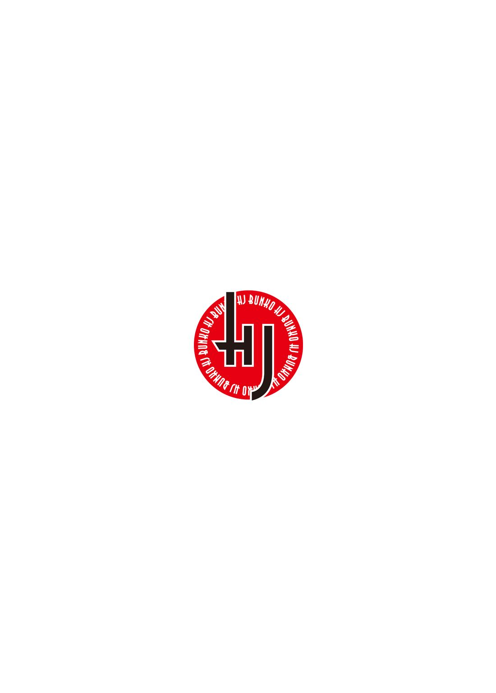

| VRMMOをカネの力で無双する2 (HJ文庫) | |
| 鰤／牙 | |
| (2014) | |

０ プロローグ
その日、三 軒 茶 屋 の高級マンション最上フロア、すなわち一 朗 の家には小包がふたつ届いた。まぁ人が住んでいる家なのだから、当然荷物くらい届く。ましてやこちらの家主は財界の貴公子・石 蕗 一朗である。たった一度、ほんの数秒挨 拶 を交 わしただけの相手から、『今後とも是 非 ご贔屓 に』なんて手紙が添 えられて、そこそこ値の張る贈 り物 が届くなんていうのも、そう珍 しい話ではないのだ。
当然そんなものばかり贈られてくる一朗の家であるから、今 更 なにかの小包が届いたところで特筆するような話ではないはずだ。だがそれでも、その日一朗はわざわざ自分から受け取りに行き、配達員に銀座千 疋 屋 の高級ジュースをプレゼントし、上 機 嫌 で居間へと戻 った。
「随 分 と楽しそうですねぇ」
そんな様子を見るに付け、メイドの扇 桜 子 がぽつりともらす。彼 女 はトレーの上にコーヒーを載 せて、一朗のもとへ運んでくる。
「わかる？」
「わかりますとも」
桜子は、ソファに腰 を下ろした一朗の前に、そっとカップを置く。
「ん、ありがとう」
「どちらもさほど大きなお荷物ではないですね。何が入ってるか聞いてもいいですか？」
「片方はダメだけど、片方は教えてあげよう」
一朗は、ふたつある小包のうちのひとつを持ち上げ、丁 寧 に包装を解いた。桜子はソファの後ろから、トレーを抱 えたまま身を乗り出している。コーヒーや紅茶を置くときを除いて、決して一朗の横より前に出ないのが、桜子の使用人としての信条だ。
薄 くひらべったいその箱をそっと開けると、中には緩 衝 材 と紙に包まれた銀細工の蝶 が、静かに翅 を休めていた。思わずため息が出そうになるほど幻 想 的 な色合いは、室内に備え付けられた蛍 光 灯 の光を、穏 やかに照り返している。
「ほぉう......」
桜子は思わずそのように唸 っていた。
「ブローチですね」
「ブローチだね」
「ナロファンで、イチロー様がつけている」
「うん、ナロファンで僕 がつけている」
ナロファン、すなわちＶＲＭＭＯ〝ナローファンタジー・オンライン〟における石蕗一朗のアバターは奇 異 である。名前がそのまんまというのも相当に奇異ではあるが問題はそこではなく。
一 般 的 にイメージされるファンタジー世界そのものなナロファンにおいて、彼 が身にまとうのは青みがかった黒の礼服だ。蝶の翅を思わせる光 沢 を見せるそれは、もちろんそれだけでも相当に目を引く。そして特 徴 的 な一朗の衣装に合わせるように、彼の胸に留められているのが、ちょっぴり雑なデザインをされた蝶のブローチであった。
一朗がここで箱から取り出し、上機嫌な顔でやはり胸に留めたブローチは、それとまったく同じものである。絶 妙 な雑さ加減もぴったり再現しているのが、職人の御 業 と言えるだろう。
そう、職人芸である。
「お知り合いの銀細工職人にお願いしちゃうほど、お気に入りなんですか？」
小包の包装に貼 り付 けられた送り主の名前を確 認 して、桜子は言った。
「そうだよ。確かにデザインは雑で作りも甘 いけど、僕はこれが気に入っている」
「なるほどー」
桜子は、ちらりと一朗の胸 元 に目をやった。翅を広げた蝶の姿は誇 らしげだ。一朗が普 段 から身に着けている高級スーツに似合っているとは思えないのだが、周囲に馴 染 めようが馴染めまいが、ぴんと翅を張って堂々としている様は、一朗に似ていると、言えないこともない。
「アイリスブランドの事件からもう十日ですか......早いですねぇ」
「僕としては、まだ十日、ってところかなぁ。最近は時間の密度が高くていいことだよ」
二人は、共通認識としての出来事を同時に思い出しながら、しみじみと語り合う。
「あの頃 から、イチロー様は何かをやらかすのではないかと思っていましたが......」
「ん、なんだろう。なにかしたっけ」
「いろいろやってらっしゃいますが」
桜子は、先日のグランドクエストにおけるツワブキ・イチローの傍 若 無 人 な立 ち振 る舞 いを指 摘 しようとして、やめた。あの件に関しては、イチローはやりたいようにやったのであって、そこをどうこう言うのはまさしくナンセンスだ。
アイリスブランド事件。一朗が、ナロファンを始めて間もない頃。装備を探す過程で出会った少女の話だ。一朗に言わせれば、面 白 い娘 だった。その最初の出会いに関 わってくるのが、この蝶のブローチである。一朗の言う通り、デザインは雑で作りも甘い。スキルスロットは２、能力修正は幸運値が＋３という余りにもしょっぱい数値である。ゲームのデザイナーが丹精込めて作り上げた装 飾 品 とは雲 泥 の差を持つ、粗 末 なアイテムだったが、それでもツワブキ・イチローのお気に入りだった。
「さてと、」
もうひとつの小包については触 れないまま、一朗は立ち上がる。
「そろそろお出かけされますか？」
「うん。予定だと、セレモニーは十一時からだけどね。運転はお願いしていいかな」
「かしこまりました」
桜子はトレーを胸に抱 いたまま、恭 しく頭を下げる。
そのまま、ちらりと顔を上げて、いわく、
「念のため聞きますが一朗さま、」
「なんだろう」
「角紅のお嬢 様 の、お店ですよね？ ファッションブランドの」
「そう、芙 蓉 めぐみさん。一号店がオープンするっていうから、まぁ、知らない仲ではないしね。少し、顔を出してくるだけだけど」
「聞いても無 駄 だと思うんですけど、それ、着けてくんですか？」
桜子が指差したのは、当然、一朗の胸に留められたちょっと雑な蝶のブローチだ。
ブローチの由来に関しては、先ほど語り合った通りだ。デザイナーの少女は、ちょっぴり口が悪いが気持ちのいい性格の女の子だった。桜子も彼女のことは好ましく思うし、それを良しとする一朗が、やたらそのブローチを気に入っているのもわかる。
が、さすがに、今から向かうようなところに着けていくものでは、ないのではないか。
「ナンセンス」
疑問はお決まりの台詞 で一 蹴 された。
「まぁ、客観的に見てアイリスのデザインは非常に雑で、没 個 性 だったり個性を出そうとするあまりよくわからない方向に飛 躍 することがあったりして、例えば今から会いに行くめぐみさんがするような、流行を押さえ万人受けを狙 いつつ少し上品さを残したファッションデザインとは比べるべくもないような稚 拙 なものだけど、」
「お、おう......。言いますね......」
「それはあくまでも客観的な評価であって、僕はこのブローチが好きだ。なので着けていく。何か質問は？」
「考えていた通りのお答えだったので特にありません」
桜子はそう言って、ちょうど一朗が空にしたコーヒーカップを、トレーの上に載せた。
「では一朗さま、おクルマを出して参ります。準備が出来たらお呼びしますので、もうしばらくお待ちください」
再度、恭しくの一礼。一朗はそうした彼女の態度を見届けた後、胸元に翅を広げる銀細工の蝶を満足げに撫 でながら、このように言った。
「ん、結構」
１ 御曹司、自慢する
角紅商事と言えば、石 蕗 総合商社、田中物産と並んで日本の経済界を牽 引 する大企業である。社長たる芙 蓉 瑛 恵 が三十半ばに授 かった娘は、蝶よ花よと育てられ、いつしか芸術方面にその才能を開花させた。で、その念願かなって、瑛恵の一人 娘 めぐみを社長としたファッションブランド〝ＭｉＺＵＮＯ〟がついにスタートすることとなった。商品となるアパレルの多くは、芙蓉めぐみ自身がデザイナーを務める。
二十代後半にして独身、浮 いた噂 もないお嬢様社長ともなれば、このセレモニーに駆 けつけて花束を贈 呈 しようという青年実業家も多い。芙蓉めぐみは、そのひとりひとりに上流階級特有の煌 びやかな笑 顔 で応対しつつ、必要以上の言葉を言わせない圧 倒 的 なオーラを以 て、ヨコシマな野心を持つ実業家たちを追い返していた。
さてさて、そんな折である。
「ブランドのオープンおめでとう、めぐみさん」
凡 百 の青年実業家に混じり登場した我らが御曹司は、どういうつもりか花束の代わりに袋 を持ってきていた。むろん、そこは世界がうらやむ経済界のプリンスであるから、放つオーラと存在感はイヤミなほどである。このときばかりは、芙蓉めぐみの笑顔も満面に咲き誇る。
「一 朗 さん、お久しぶりですわ！ 来てくださいましたのね」
「ん、まぁね」
芙蓉の笑顔は、その時まで花束を手 渡 してきた誰 にも見せたことのないような、純然たる少女のような笑 みであった。齢 二十八にして少女のような、という形容詞が似合うのもいかがなものかと思うが......おっと、まぁそのあたりは深く追 及 するべきことでもないだろう。とにかく、芙蓉の一朗に対する歓迎度合いは、他 とは一線を画していた。
澄 ました顔の一朗は実に憎 たらしいが、彼は花束を持ってきていない。この御曹司が型破りなのはよく知られた話であって、通例に従ったフラワーギフトを用意していなかったとしても、周囲が驚 くようなことは何も無い。が、それだけに、芙蓉めぐみを狙わんとする財界の若きホープ達は、一朗の贈り物に目を光らせた。
「ひとまずめぐみさん、僕からも開業祝いを用意させてもらったんだけど、」
「まあ！」
両手を胸の前で合わせて喜びを表現する芙蓉のしぐさは乙女 そのものだ。
「一朗さんから贈り物をいただける日が来るなんて、思ってもいませんでしたわ。いつだって、その、つれないんですもの」
「ナンセンス。僕にだって友人の新しい門 出 を祝いたい気持ちはあるよ」
一朗の言葉の中のワンフレーズに対し、芙蓉は何か言いたげにしていたが、心中を全 て口に出すようなはしたない教育を、彼女は受けていない。ひとまず一朗は、袋の中から取り出したそれを、そっと芙蓉に渡 した。
たいへんエスニックな雰 囲 気 をかもし出す、木 彫 りのお面である。
「まあ......」
「南太平洋にある小さな島国の、商売繁盛の神様らしい。少し前に、新種の昆 虫 を研究しに行ったとき、現地の人に譲 ってもらってね。めぐみさんが新しい事業を始めるという話は聞いていたから、会う機会があったら渡そうと思っていたんだ」
嫌 がらせかよ、と思えるほどにワンダーなセンスではあったが、石蕗一朗は大 真 面 目 である。会場に集 う青年実業家たちもこれにはドン引きだ。
「嬉 しい......」
しかし彼らにとってもっと不可解なのは、芙蓉めぐみがうっとりとした表情でその木彫りのお面を抱きしめたことであろう。
「大事にいたしますわ。あの、お店の雰囲気には合わないので、おうちに飾 ることになりますけれど......」
「そこはめぐみさん次 第 だから、自由にして欲 しい。喜んでもらえたなら何よりだよ」
一朗の表情もどこか満足げである。
石蕗一朗も教養が深い人物だ。芸術的感性にも富んでいる。それゆえに、あのエスニックなプレゼントのチョイスに関しては周囲を非常に困 惑 させた。冷静に見てみれば、彼が胸につけている蝶のブローチも、銀細工の割にはどこか稚拙で安っぽい。
ただ、プレゼントを贈られた芙蓉めぐみはどうやら本気で喜んでいるらしい。これは、生まれながらにして上流階級に生まれた真なるセレブ・オブ・セレブにしかわからぬやり取りであるのか、あるいは単に、石蕗一朗と芙蓉めぐみの間でのみ通用しうるやり取りであるのか、青年実業家たちはしばし頭を悩 ませることになるのであった。
一朗と芙蓉の付き合いは五年ほどだ。長いと言えば長いし、短いと言えば短い。もともとは彼女が角紅商事の一人娘ということから生まれた縁 であって、ま、ありていに言えばそんなに深い関係でもない。ただ、比 較 的 歳 が近かったということもあって、当時自身の生き方に頭を悩ませていた芙蓉を、一朗がそれとなく助けてやったことがある。そしたら妙 に懐 かれて、それ以来そんな間 柄 だ。
一朗としては、そこまで親しくないにせよそう憎からず思っている友人の一人である。だから、開業記念のセレモニーには駆けつけるし、プレゼントだって渡す。芙蓉の態度と感情がそこに留まるものでないのは承知の上だが、それ以上はナンセンスだ。一朗の中で線引きははっきりしている。
「一朗さん、楽しんでいらっしゃいます？」
メインセレモニーや挨拶が終わって、現在関係者同士が親交を深める時間となっている。当然一朗に擦 り寄 る著名人は多く、そこだけが少し煩 わしかった。芙蓉めぐみが声をかけてきたのは、そんな折である。
楽しんでいたかどうかというと、前述の通りであるので、そこまで楽しくはなかった。どちらかといえば、家に帰ったらナローファンタジー・オンラインをどう遊ぶか考えていたり、駐 車 場 の 車 に残した桜 子 がこの時間何をして過ごしているのかを考えたりしていた。まぁ後者に関しては、どうせ携 帯 ゲームかＤＶＤの鑑 賞 であろうから、深く考えてもどうしようもないことかもしれない。
ひとまず、ここで正直に答えるのが石蕗一朗という男である。
「実を言うと、あまり楽しんでいないんだ」
「あら、ごめんなさい。変わってらっしゃいませんのね、そういうところ」
「変わる必要もないし、そう簡単には変わらないものだよ」
そこで一朗は、芙蓉が背後に連れたひとりの女性に気づく。芙蓉よりも一回りほど、おそらくは一朗と比べてもいささかばかり若いであろう女性だ。生 真 面 目 そうなスーツに身を包 んでおり、表情には緊 張 と、日ごろから積み重ねているであろう疲 労 の色合いが滲 んでいる。ともあれ、こうした場において、このような若い女性の存在は珍しい。
「めぐみさん、そちらは？」
一朗は、芙蓉が彼女のことを紹 介 したがっていると踏 んで、先手を打った。
「野 々 あざみさんですわ。若くして実業家でいらっしゃるのよ」
にこりと微笑 んで、芙蓉は言う。若くして実業家なのは芙蓉もそう変わらないはずだが、なるほど。見れば見るほどに、紹介された女性は若い。幼さと言える要素は、辛 うじて抜け切った頃 合 か。
しかし、野々あざみというのは、どこかで聞いた名前ではある。
「まだまだ男性の実業家の方が多いでしょう？ だから、色々と意見交換する機会があるんですの」
「初めまして、石蕗一朗さん。お噂はかねがね」
「初めまして、あざみさん。どうせ素 晴 らしい噂だろう」
にこりと微笑んで差し出される野々あざみ社長の手を、一朗も握り返す。その後、彼女が差し出した名 刺 を見て、一朗は目を細めた。
「なに、シスル・コーポレーション社長......。あぁ、シスルの社長さんなんだ」
「まだ起こしたばかりの小さな会社ですけれども」
シスル・コーポレーションは、近年確立されたバーチャル・リアリティ技術を用いたソフトウェアの開発を行っている新興企業だ。
が、石蕗一朗にとってはいまや、別の意味で馴 染 み深 い。彼が最近になって始め、現在深い興味を抱くに至っているＶＲＭＭＯＲＰＧ〝ナローファンタジー・オンライン〟こそが、このシスルのメインプロダクトなのだ。すなわち、今一朗の目の前にいるのは、偉 大 なる運営様のボスである。
「ナロファンは楽しませてもらっているよ。先日は、サーバーに大きな負担をかけて申し訳なかったね」
「ああ、いえ......。やはりあれは一朗さんだったんですね......」
あざみ社長が苦笑いを浮かべ、芙蓉がきょとんとした顔で首を傾 げていた。
一朗が言っているのは、つい先日、すなわちデルヴェ亡魔領の解放を目指すグランドクエストの最中、更 に言えばとあるプレイヤーとの一 騎 打 ちを演じた際の話である。このとき一朗は、自らの回線速度と、業務用ハードであるミライヴギア・コクーンの圧倒的演算能力を盾 にとって、トラフィックの増大による処理落ち攻撃を仕 掛 けた。悪意ある言い方をすればＤＯＳ攻撃、もっと低 俗 な言い方をすればＦ５攻撃である。おそらく、あのサーバー内でまともに動くことができたプレイヤーは、石蕗一朗か、あるいは彼と同じ動作環境でプレイできる扇 桜子だけであったことだろう。カネにあかせた大容量量子回線の恩 恵 は大きい。
「あれは少し大人気なくも感じましたけど」
「はっはっは、ナンセンス。ルールの中で出来る限りのことをするのが好きなんだ。今はもう、ルールで禁止されてしまったから、あんなことできないけどね」
さすがに運営もこのような攻撃手段を想定していなかったのか、後日、サーバーを補強するための緊 急 メンテナンスを行い、利用規約に明確なＤＯＳ攻撃を禁止する一文を追加した。更に言えば、トラフィック増加の目的で大量に課金し召 喚 したポーションなどのアイテムは、存在するだけでゲーム内経済を著 しく崩 壊 させる恐 れがあるので、一朗自身の手によってさっさと破 棄 された。
「一朗さん、ＶＲゲームやられるんですの？」
ようやく話に理解が追いついたようで、芙蓉は意外そうな顔をしていた。
「うん。まぁもともと、ドライブ技術に興味はあったんだ。なんて言ったかなぁ。かなり前にマサチューセッツ工科大を十歳で卒業した天才児がいたよね。あの卒業論文でも言 及 してたから、理論は知っていたけど。現実になるまであと五、六年はかかると思ってたな」
「あ、それ私です。九年前になりますね。ポニー・エンタテイメント社でミライヴギアを開発していたのが三年前です」
あざみ社長があっさりと言ってのけたので、一朗の表情はちょっぴり微 妙 なものになる。
「あ、そう......。ちなみに僕は九歳でハーバード大卒業したけどね」
「存じ上げております」
またしても、にこりと笑うあざみ社長だ。一朗は、危 うく自身の対抗意識が鎌 首 をもたげかけたのに気づいて、じゃっかん苦い思いをする。未来と現在において競い合うのは、好きだが、過去の業績を比べあって胸を張るのは一朗の美学に反する。
「とにかく、今度時間があったら色々話を聞きたいな。ゲームをやってるうちに、システム面にもかなり興味が湧 いたんだ。細かいバランス調整をＡＩに任せてるってほんと？」
「ええ、本当です」
「ログインした初日に、ヴォルガンド火山帯の石ころを拾って食べようとしてみたことがあってさ」
「はい？」
いきなりとんでもないことを言い出した一朗である。この時ばかりは、さすがにあざみ社長も目を丸くした。芙蓉は白黒させていた。
「あれもなかなかリアルだったな。味も食感も。容量的にも技術的にも、あんな石ころひとつひとつにステータスをプログラムしているとは思えないんだけど、どうなのかなって」
「それは、集合知集積システムという......ああ、今度、是非本社にもいらしてください。その時にお話しします」
「神田だっけ」
「神保町です。そのときは、美味 しいカレーのお店にご案内しますね」
疲労と緊張の色が滲 みながらも、きっちりとできるキャリアウーマンの姿勢を崩 さないあざみ社長だ。一朗や芙蓉と違 い、市 井 の出であろうが、じゃっかん十九歳で経済界に殴り込みをかけるだけのことはある。
彼女はその後、会社のほうの用事があるとかで早々に退散してしまう。一朗と引き合わせてくれたことについて、芙蓉に礼を行ってから、彼女はセレモニーの会場を後にした。
「めぐみさんには僕も感謝かな。シスルの社長とは、良いコネクションじゃないか」
「でも一朗さん、別にあざみさんと仲良くなさって、ゲームを有利に？ なさるとか、そういったおつもりではないんでしょう？」
「ナンセンスだよね。ゲームの中では僕はあくまでもプレイヤーだよ。そこのスタンスは崩したくないなぁ。優 遇 措 置 を求めることは色々できるだろうけどあくまでも、プレイヤーとして楽しめる範 囲 じゃないと、面白くないよね」
「ゲームのことは、わたくしまったくわからないのですけど、一朗さんは相変わらずで安心しましたわ」
あざみ社長を二人で見送った後、そのような会話をかわす。一朗は時計を見た。そろそろ良い時間だ。おいとまし、桜子と外食でもしてから家に戻ろうか、などと考えはじめる。すると、芙蓉は別に引き止めるつもりではなかったのだろうが、遠 慮 がちにこう尋 ねてきた。
「あの、一朗さん？ 妙なことをお聞きしますけど......」
「なんだろう」
「そちら、珍しいブローチですわね」
芙蓉が指差したのは、一朗の左胸に翅を休める、銀細工の蝶であった。
「ん、ああ。友人が趣 味 でデザインしたものなんだけど、気に入ったから知り合いの細工師に作ってもらったんだ。当の友人には秘密なんだけどね」
「失礼ですけれど、あまりそのジャケットに......合っていらっしゃらないんじゃなくて？」
さすがに、ファッションブランドの社長兼デザイナーだ。そのあたりに関しては、非常に敏 感 なセンスを持っているらしい。芙蓉にも貶 すつもりはなかったのだろうが、指摘は厳しいものになる。
しかし一朗は、そんな言葉を受けたところでかえって気をよくするだけであった。
「ナンセンス。僕が気に入ったって言っただろう。まぁ、客観的に見ればデザインは雑だし、もっと良い装飾品はたくさんあるだろうっていうのはわかるけどね」
どこか自慢げな一朗の態度に、芙蓉の表情が曇 る。
「一朗さん、お友達の名前をお伺 いしてもよろしいかしら」
「アイリスって言うんだけど」
「あら、外国の方？」
大真面目な顔で首を傾げる芙蓉に対して、一朗は、やはり大真面目に返した。
「たぶん、日本人じゃないかなぁ」
「ストルァァイック!! 」
「よっしゃーっ！」
明 日 葉 のスリングショットじみた下手投げが見事三人目を打 ち取 り、スリーアウト・チェンジとなる。今日の彼女は快調だ。中学生離れした剛 速 球 をメインウェポンとするエースピッチャー・石蕗明日葉の快 進 撃 を止められるものはおらず、この日の練習試合は、おおよそ明日葉たちの学校にとって全面有利という形で進んだ。
これだからソフトボールはやめられない。明日葉はバイオリズムの影 響 を如 実 に受ける極 めてムラッ気のある投手であったが、ノっている時の投球は彼女本人もクセになるほど気分が良い。
「えっへっへー、見たかーっ！ きりゅうーっ！」
思わず、観客席にいる桐生 世 良 にＶサインを送ってしまう。
明日葉の友人である世良を、わざわざソフト部の練習試合に招いた背景には、幾 らかの理由がある。
ひとつは、世良自身が引きこもりを脱 却 するために、割と頻 繁 に外出を心がけるようにしていたこと。
ひとつは、世良が明日葉のソフト部に少しだけ興味を示していたこと。あとはゲーム関連では世良に後 れを取 り捲 っている明日葉が、自分の凄 いところを世良に見せてやりたかったという、身勝手極まりない理由もある。
ともあれ明日葉は快調だ。連続奪 三 振 の自己ベスト記録も更 新 である。そうした会心の心 地 もあって、明日葉は観覧席の世良にＶサインを送ったのである。
だが世良は携帯ゲームを開いていた。
「......このッ！」
攻 守 交 替 でマウンドを降りるさなか、明日葉の投げた剛速球が、世良の額を直 撃 した。
とても痛そうだった。
「石蕗さん、すごいタマ投げるんだね」
額をさすりながら、世良が言う。
結局のところ、練習試合は明日葉の投球が絶好調すぎたおかげもあり、完勝で幕を閉じた。てっきり褒 められるとばかり思っていた明日葉だが、カントクからは『おまえそれ公式試合でやれよ......』と呆 れられる始末で、少しばかり納 得 がいかない。
そんなこんなで今、明日葉は仏 頂 面 を浮かべたまま、世良のたんこぶを手当しているのであった。
「そうだよ？ それなりにスゴいんだよ？」
「野球詳 しくないけど、アンダースローとは思えないよね......」
「野球じゃなくてソフトだけどね」
ゲーム関連では圧 倒 されてばかりの明日葉だったが、ここはちょっとこう、無い胸を張りたい場面である。
「でもさでもさ、アレだよ？ 桐生。あたし、あんなに良いタマ投げるんだけど、ゲームの中では全然上 手 くいかなかったりしてさ。不公平じゃない？」
「ナロファンの話？ スローイングってこと？ 投げナイフとかの」
「そう、それ」
明日葉はＶＲＭＭＯナローファンタジー・オンラインにおいて、フェリシアという盗賊 のキャラクターを使用している。盗賊 ・斥候 用のスキルやアーツには《投 擲 術 》や《スローナイフ》といった、いわゆる『投げて攻撃する』系のものが存在し、ソフト部のカンを生かすならこれだろうと、明日葉は迷わず取得した。
そして、見事なノーコンっぷりを披 露 したのである。
「仕方ないよ。それじゃあゲームの中でスキルやアーツが存在している意味がないもの」
「でもでもだって。なんでなんで？ あたし、現実世界でボールを投げるみたいにキレーに投げたよ？」
唇 を尖 らせる明日葉に対して、今度は世良が胸を張る番であった。
「石蕗さん、ゲームの中じゃ既 存 の物理法則は通用しないよ？ 石蕗さんの投球フォームは現実世界の物理法則に沿ったものだから、キレーなフォームで投げればキレーに球がとぶけど、ゲームの中じゃそうはいかない」
確かに、現実世界で運動神経皆無の世良が、ゲームの中では最速の敏 捷 値 を持つ剣 士 〝キングキリヒト〟となれるのだから、その言葉に間 違 いはないのだろう。
だが、やはり全てにおいて納得できるわけではない。
「ステータス値やスキル、アーツの補正なんかを込みで、アタリ判定を算出するの。もちろん、そのアタリ判定を見 極 めて活用するにはそこにプレイヤースキルだって関わってくるけど、」
「あの、桐生。その話長くなる？」
ゲームシステムにまで食い込んだ話になると、世良はなかなか帰ってこない。明日葉は早めに釘 を刺 しておくことにした。世良はアツくなりはじめていた自分に気づいたのか、少し顔を赤くして伏 せる。その後、声のトーンを落として、このように続けた。
「だからさ、石蕗さんがちゃんとステータスを成長させれば、ソフト部の経験も生きてくるってこと......」
「ふーん。ゲームの中でも基 礎 が大事かぁ......」
現実世界での得意分野を活 かしていい思いをしようというのは、甘いのかもしれない。確かに空手や柔 道 をやっている人ばかりがゲーム内で強かったら、わざわざゲームをやる理由などない、ということだろうか。
ある程度は、桐生世良のようなヒキコモリにも優 しい世界でなければならないのだろう。
「なんか、石蕗さんの視線にすごく失礼なものを感じるんだけど、」
「気のせいダヨー」
あれ、でも、そう言えば。
明日葉は脳内ではきちんと世良の言葉を反 芻 し、そこで思い至った。
「桐生、イチ兄ぃは？」
「ん？」
「イチ兄ぃはどんな感じなの？ やっぱ、ほら、課金でレベルあげて、ステータスとか高くって、その、プレイヤースキル？ っていうのは、どんな感じなの？」
イチ兄ぃというのは、言うまでもなく明日葉のハトコである石蕗一朗のことだ。ほんの二週間ほど前にゲームを始め、数日前には廃 人 プレイヤーの代表たる桐生世良、通 称 〝キングキリヒト〟との激戦を繰 り広 げ、あまつさえ勝ってしまった。まぁ、勝ち方はだいぶえげつないものでは、あったが。
ただ、ツワブキ・イチローの実力は、やはり世良も認めるところであって、その勝負が最終的に世良の精神的成長にも繋 がった。思い出深い勝負ではある。
「おっさんの強さは、まぁ、いろいろあるからなぁ......」
世良は、ゲーム内での呼び方に倣 って、一朗／イチローを『おっさん』と呼ぶ。一時、明日葉が呼ぶように『イチ兄ぃさん』と呼んでみたこともあったのだが、明日葉が笑ってしまって以来その呼び方は聞けていない。
「あの人のプレイヤースキルは、悔 しいけど、高いよ。ただ、やっぱりそれだけじゃなくってさ。おカネの力っていうと、なんか、ひがんでるみたいでカッコ悪いんだけど......」
「やっぱカキンカキンなの？」
「課金だけじゃなくって、動作環境とかもさ。あの人たぶん、業務用の大容量量子回線とあと多分ミライヴギアも、エックスじゃなくてコクーンを使ってるよ。もしかしたら、更にクロックアップとかもしてるかもしんない。でも、個人で大型量子回路用のレーザー冷却装置とか揃 えようとするとそれだけで何百万何千万ってかかって......」
「ニホンゴで言って？」
「ニホンゴだよ？」
世良はこほん、と咳 払 いをした。仕切り直しのつもりらしい。
ま、世良に言わせれば、カネのあるネトゲ廃人が動作環境をよくするために大枚をはたくのはよくある話らしいのだが、ＶＲＭＭＯに関して言えばまだまだ技術的な課題のクリアが難しく、民間人が機材を揃えるのは、カネの面でも流通の面でも厳しいらしい。石蕗一朗は大企業の御曹司だから、ある程度はムチャが利かせられたのかもしれないし、まぁ、ズルいよね、と苦笑していた。世良が携帯ゲーム機をオンライン接続し、おそらく一朗が使用しているであろう業務用ミライヴギアの値段を見せてくれたが、ゼロを七つくらいまで数えた時点で、明日葉の指先は震 えてきた。つくづく小市民である。
「おカネがすごいと言えば、このあいだの決戦でおっさんがやったＤＯＳ攻撃もさ。ひとつ八〇〇円の基本アイテムパックにはポーションが三個入ってるんだけど、インベントリ内だと同名のアイテムは一枠で最大九九個まで持てるでしょ。ポーションだけでインベントリを埋 め尽 くして空から降り注いだって考えると、」
「計算しなくていいよ！ 桐生はあたしをおかしくしたいの!? 」
「自分がいったいどれくらいの金額に負けたのか、気になるじゃない」
世良は電 卓 を取り出して真 剣 な顔つきだ。なんで電卓を持ち歩いているの、とは、聞かなかった。明日葉は知っている。一部のトレーディングカードゲームを遊ぶ際、ダメージ計算に必要だからなのだ。だが、明日葉の知る限り、世良が辻 デュエルを挑 まれたことは一度として存在しない。
なんだかんだ言って、ゲーマーなのだなぁ。と、明日葉は世良を眺 めながらため息をついた。敗北を潔 く受け入れたとは言え、まだ勝ちと強さに対する執 着 が残っているのだ。
「じゃあさー、イチ兄ぃの、あの装備はどんくらいかかるの？ あれも課金装備？」
「知らない。見たことないから、多分オリジナルグラフィックじゃないの。さすがに内部的には、既存の装備の流用だと思うけど......」
「なにそれ」
明日葉は思わず顔をあげた。オリジナルグラフィックなんて使えるのか。知らなかった。明日葉もまだまだにわかである。
ツワブキ・イチローの装備は確かに変わっていた。蝶 の羽を思わせる青みがかった黒のスーツ。それだけでも十分異質だ。明日葉はレベルも低く、ぶっちゃけ高レベル帯になればそんな装備も入手できるのかなとしか考えていなかったが、よくよく思い返してみれば、同レベル帯のトッププレイヤーと比べても、やっぱりイチ兄ぃの装備はおかしかった。
「教えて桐生、要点だけまとめてなるべく簡潔に！」
客観的に聞いてだいぶ図 々 しいお願いではあったが、世良は要求通りに答えてくれた。
「モデリングソフトとか使って作ったグラフィックをアイテムに適用できるってこと。生産職系のクラスが必要だから、石蕗さんにはできないよ」
「なーんだ」
明日葉は肩 をすくめる。生産職系というと、鍛冶師 とか錬金術師 とかだ。どちらも明日葉には無 縁 のクラスである。
明日葉のアバターであるところのフェリシアは、そろそろ四〇レベルを超 える。中 堅 プレイヤーにとってこのレベルはひとつの通過点で、強力な装備やスキル、アーツの取得可能制限が一気に解除されるのがこのラインだ。明日葉も女の子である。強い装備も欲しいがカワイイ装備も欲しいわけで、今の防具一式はそうした意味でお気に入りである。オリジナルグラフィックの話は、彼 女 の悩みに対する打開策になり得るかとも思ったのだが、やはり世の中、そうそう甘 くはないらしい。
「装備買うなら、グラスゴバラ職人街がいいよ」
「あー、うん。キルシュさんに聞いたー」
時計を見ると、そろそろ良い時間であった。話がすっかり長くなってしまったが、帰らなければ親に心配されるし、怒 られるし、ご飯抜きにされるし、ナロファンにログインもさせてもらえない。世良の家はだいぶヌルいそうだが、女子中学生の私生活とは、かくもカコクなモノなのだ。
「桐生は、今日もログインすんの？」
「まぁ、するかな。今日の分の宿題やってから」
「わぁ、偉 い」
夏休みが始まってまだ一週間にも満たないのに。明日葉は何も手をつけていなかった。
「まぁ、でもどうせ、ゲームの中じゃ桐生と会えないよね......」
「だってフェリシアさん弱いし」
それは事実であるに違いないのだが、ちょっと腹が立ったので、明日葉は世良の首筋にチョップをいれた。世良は変な声をあげてつんのめった。
家に帰った石蕗明日葉は、まず風 呂 場 に飛び込んで汗 と泥 を洗い流し、風呂から上がったら夕食を満 喫 し、桐生世良を見習って少しだけ勉強机に向かい、しかし五分後には音を上げてミライヴギアに手を伸 ばした。宿題ならば、いつでもできる。今日は今日しかできないことをやらねばならない。
実は、明日葉には野望があった。ギルドの結成である。
ギルドというのは、すなわち仲良しチームのことだ。厳密には違うのだが明日葉はそのように認 識 していた。ゲームによって名 称 は異なるが、だいたいどのＭＭＯＲＰＧにも存在するシステムで、少人数で集まってひとつのコミュニティを作る。そのコミュニティ単位でのみ受けられるサービスが存在したり、コミュニティ内では通常プレイヤー間では不可能な特 殊 メッセージのやり取り、重要アイテムの受け渡しなどが出来たりする。
明日葉は、そのようなシステムがあることを世良から聞いた。もちろん、正確にはそれ以前から、そうしたものがあるのだということは漠 然 と知っていたし、野 良 ギルドという、一時的なコミュニティに参加したことは何度かある。だが、本格的なギルドを結成したことは一度もなかった。
ツワブキ・イチローを、ギルドに誘 う。
野望をもう少し突 き詰 めると、これになる。
イチ兄ぃのことが大好きな明日葉であれば、そのような結論に至るのは当然だ。ギルドリーダーはもちろんフェリシアとして、ゲーム内でイチ兄ぃを連れ回す合理的な理由になる、気がする。そもそも、仲のいい人同士でギルドを組むのが当然だし健全だと、世良も言っていたわけで。
きりゅヒトも入んない？ と誘ってみたが、華 麗 にスルーされた。そこはソロプレイヤーの意地というものがあるらしい。フレンド登録も断るくらいだから徹 底 している。
とにかくギルドを作るのだ。イチ兄ぃはあの性格だから、ゲーム内でもロクに友人を作れていないはずだし、そもそも徒党を組んでいる姿というのは想像しづらい。だからこそ、いの一番に自分のギルドに入れてしまおう。明日葉はそう息巻いていた。
ミライヴギア（これは一般家庭用のやつだ！）を装着し、ベッドの上に寝 っ転 がる。量子波動と脳波の共 振 が、明日葉を仮想空間にドライブさせる。しばらくすれば、明日葉はアスガルド大陸を征 く冒 険 者 がひとり、盗賊 のフェリシアへと転身するのだ。
「っんんん―――――――っ！」
降り立ったばかりの草原で、フェリシアは大きく伸びをする。〝始まりの街〟と隣 り合 わせにある〝ヴィスピアーニャ平原〟は、相変わらず空気も澄んでいた。いや、そんなもの所 詮 、量子情報が織り成す幻 に過ぎないわけだが、それでも彼女の脳は青々とした草木が生み出した多量の酸素に喜んでいた。
メニューウィンドウを開く。右下に表示された時計を見れば、イチロー達 が姿を見せるまで、まだいささかの時間がありそうだった。フェリシアは、そのままアイテム一覧を確 認 し、その中にあった転移用アイテムであるワープフェザーを一つ、使用する。行ったことのある街に、一 瞬 で飛んでいける使い捨てアイテムだ。フェリシアは、一度あらかたの街をアーカイブに登録するため、キルシュヴァッサーにそこかしこへ連れていってもらった。その中に、夕方の世良との会話にあった〝グラスゴバラ職人街〟もある。
生産職プレイヤー向けのイベントが多く発生し、アイテムの流通も良い。結果として多くの生産職プレイヤーが、拠 点 を置くのがこのグラスゴバラだ。そこかしこの建物から煙 が昇 り、甲 高 い錬 鉄 の音が鳴 り響 く。昔、アニメ映画で見た『たたら場』みたいだと、フェリシアは思った。ちなみにそのアニメ映画は明日葉が生まれるちょっと前に公開されたものである。
「うわぁお......」
建物のほぼすべてが、生産職ギルドのギルドハウスである。軒 先 に並べられた装備アイテムも、鎧 やら兜 やらの類 が大半を占 める。金属製のものばかりではなく、強力なモンスターの皮や鱗 を加工したと思 しきものも散見された。
なんだか、フリーマーケットのような雰囲気もある。面 白 い街だな、と思った。歩いて回るのはなかなか楽しい。楽しいのだが。
「可愛 い装備がない......」
軒先に並べられているのは、大 抵 がごっついアーマーや、陰 気 そうなローブであって、カワイイどころかカッコイイと言えるものすら見つからない。これならば、今の弱っちい装備の方が、全然マシだとすら思ってしまう。
まてまて。決めるのはまだ早い。ここは、キルシュさんの言葉を思い出すのだ。
イチ兄ぃの付き人にして、ベテランゲーマーたるキルシュヴァッサーは、グラスゴバラにフェリシアを案内した時、このように言っていた。
『良いですかフェリシア殿 、メインストリートに面していても、露 店 を出しているようなギルドでは、あまり大規模なものとは言えません。安く装備を売ってはいますが、安かろう悪かろうのお店です。こういうお店からは、ついでで売ってるポーションとかを買うようにして、装備はもっとイイところで買うのが賢 いゲーマーです』
じゃあ、そのイイところってどうやって見つけるの？ と尋ねてみれば、
『そりゃあ、大きいギルドハウスを持っているところですよ。所属プレイヤーの水準も軒 並 み高いですから、ハイクオリティな装備を作れます。ノウハウや素材アイテムの共有もありますしね』
つまるところ、いま、フェリシアが眺めているのは、このグラスゴバラの真 髄 ではないということだ。職人街の職人街たる所以 は、もっと奥 にあるのであって。彼女は、メインストリートの猥 雑 とした雰囲気を楽しみながらも直進していく。
さらにしばらく進んで、ようやく、露店以外の建物がちらほらと目立ち始めた。店の前に看板を掲 げ、プレイヤーの出入りが頻繁に見られるようなギルドハウスだ。おそらく、キルシュヴァッサーが言っていた『イイところ』とは、こうしたところなのだろう。
フェリシアの目を引く、一番大きな建物があった。看板には、『アキハバラ鍛造組』と書かれている。どこかで聞いた覚えがあると思ったが、アレだ。グランドクエストの際、デルヴェ亡魔領に姿を見せていたトップギルドのひとつである。ここなら、そうとう良い防具を作ってくれそうだとは思ったが、逆に気 後 れしてしまう部分もある。こういうのは、それこそ桐生世良 のようなプレイヤーが来る場所であって、自分のような、レベル四〇になるかならないかという味 噌 っかすが来ていい場所ではない。
怖 気 づいて、視線をさまよわせる。と、鍛造組のギルドハウスの斜 向 かい、メインストリートを挟 んで反対側に、同じくらいの大きさの建物を見つけた。
ほかの石造りのギルドハウスとは明らかに毛色が違う、シックな黒 塗 りの建物だ。錬鉄の煙は昇っていないが、ここも生産系のギルドハウスなのだろうか、と思う。
いいや、入ってしまえ。フェリシアは意を決した。だってカッコイイ建物なのだ。ほかの泥 臭 い感じの工 房 とはひと味もふた味も違うのだ。ここが生産系のギルドならば、さぞかしオシャレな防具が置いてあるに違いない。手が届くかは、別にして。
ギルドハウスには、金色の文字で『Ｉｒｉｓ Ｂｒａｎｄ』と書かれていた。
２ 御曹司、思い出す
杜若 あいり、服 飾 デザイン系の専修学校に通う十七歳である。
将来の夢は、アパレルデザイナーだ。彼女は、学校帰りのバスに揺 られながら、およそ二週間ほど前のことを思い出していた。
ＶＲＭＭＯ〝ナローファンタジー・オンライン〟において、あいりはエルフの錬金術師 アイリスとなる。アバターネームは本名のもじりだが、苗 字 のカキツバタも英語で『ラビットイヤー・アイリス』と呼ぶと知ったときは『へー』という気持ちだった。ウサギ耳のアイリス。それはそれで、カワイイかもしれない。
そう、アイリスは女の子である。カワイイものが好きだ。小ざっぱりした性格で、中学時代は周囲をよく牽 引 したものだが、それでも女の子らしくカワイイものが好きである。当時からいっぱしのファッションアドバイザーを気取り、進路も当然そちらを選んだ。
そこからまぁ、少々の挫 折 と苦 悩 を味わって、逃げ込んだ先がＶＲＭＭＯである。一台七万だか八万だかするゲームハードは、町内のビンゴ大会で手に入れたものだった。
アイリスは、女の子である。
アクセサリー類をちまちまといじくり回し、自分好みのデザインにして、露店で誰 かに買ってもらう。そんな些 細 なことに喜びを感じる。そのために、３Ｄモデリングソフトを始め、様々なミライヴギア専用ソフトウェアを購 入 したのだが、ちょっと外見が珍 しいくらいで、そう大した性能でもないアクセサリーや小道具を買ってくれるプレイヤーなど、いるわけがなかった。
それでも、日 銭 は稼 がねばならない。
ゲーム中、生活費を気にする必要はほとんどないが、スキル《細工》を活かしたアイテム作りを行うのに、何かと金は入り用だ。ログインしてはヴィスピアーニャ平原へ繰り出し、素材を採取し、ポーションを作り、ちょっと個性的なアクセサリーを《細工》しては、まとめて露店に出してログアウトするというのが、ゲーム内におけるアイリスの、一日のサイクルである。
正直に言おう。彼女も、武器や防具は作ってみたい。せっかくの３Ｄモデリングソフトである。自分自身の大 胆 なデザインセンスを生かした防具を作り、それを着た一流のアバターが、華麗にＭＯＢを葬 り去 るところを見てみたい。
だが、ログインした直後、露店に出したアイテムのうちポーションだけが見事に完売し、渾 身 のデザインを施 したアクセサリー類にまったく手がつけられていないところを見ると、自分に才能がないのか、と落 胆 せざるを得ない。
そろそろ、潮時かなぁ。
初めてこのゲームにログインしたときの感動は色あせつつある。景色や町並みのリアルな質感。躍 動 するモンスター。彼女も３Ｄモデルを扱 ったことがあるからこそわかる、技術度の高さ。この世界で、自分の思うがままの装備アイテムをデザインできると知ったとき、アイリスは自分の方向性を決意した。だが、その意識ももうだいぶ揺らいでいる。
夢ならば、やはり現実世界で追いかけねばならないのだろう。こんな電脳世界で予行演習をしようなど、土台無理があったのかもしれない。よし、今日で最後にしよう。ミライヴギアも高かったけど、これも手痛い授業料だと思えば、
そんなことを考えつつ、ログインした日のことである。
『あれ......。売れてる......』
アイテムウインドウを開き、そこから更に露店ウインドウを確認する。インベントリは空だった。
ホームから外に出ると、そこには『露店』を経営していた自分の分身がいる。いわゆる〝売り子アバター〟という奴 で、ログアウト中も簡単な受け答えをして、ＮＰＣ同様にキャラクター相手の商売をしてくれるシステムだ。まぁ、使うには《売り子》というスキルが必要なのだが。
『やぁ、どうも。君がログインするのをずっと待っていたんだ』
店の前に立っていたのは、稀 少 種 族 ドラゴネットの青年だ。全身を課金装備でつつんだ豪 奢 なたたずまいで、廃課金勢の臭 いを露 骨 に漂 わせている。ドラゴネットということはプレミアムパッケージのユーザーなわけで......。現実世界では貧乏学生であるアイリスだ。敵 愾 心 と警 戒 心 が生まれる。
『誰よ、あんた』
『ナンセンス。名前ならば頭の上に表示されているじゃないか。そんなことはどうでも良いんだけど』
ドラゴネットの青年、ツワブキ・イチローは、実に癪 に障 る自信たっぷりな態度でこう続けた。
『うん。君の顔が気に入ったよ』
『は？』
その時の一言は、ナローファンタジー・オンラインにおけるアイリスの生き様を、大きく変えることとなった。
今にして思えば、
杜若あいりは、バスに揺られながら、回想を終 了 する。
今にして思えば、決してロマンチックな出会いなどではなかった。あの御曹司とのファーストコンタクトは。傍 若 無 人 。傲 岸 不 遜 。自 由 奔 放 。アレを表現する四字熟語ならば、あまり学のないあいりの頭でもポンポン思 い浮 かぶ。ありていに言って、こと金銭面に関しては非常にセンスが悪く、他人の都合をまったく考えないマイペースさも、あいりの癪に障る部分であった。
「あいつ......いったい何者なのかしら......」
バスの中に人が少なくなったところで、あいりはぽつりと、疑問を口にする。
プレミアムパックの限定種族に、全身課金装備。出会った時はそうだった。その後も次々と見せる奇 矯 な態度を鑑 みるに、現実世界では相当なおカネ持ちであることは間違いないだろう。あの男に常に付き従っていた、騎士 のキルシュヴァッサーさんも、リアルではやはり御曹司の使用人なのだと言っていた。執 事 か何かだろうか。この二十一世紀、現代日本に、執事というイキモノが存在しているのかしら、などと、あいりの詮 無 い疑問は、ついでに取りとめもない。
御曹司は変人だ。何であんな奴と縁 が出来てしまったのか。今でもよくわからない。繰り返すが、決してロマンチックな出会いなどではなかった。割と辛 辣 なことも言ってくるし、あの余 裕 ぶったというか、ニヤついた態度は好きになれない。
ただ、御曹司はずっと売れなかった彼女のオリジナルアクセサリーを全 て買い取った上で、こう言ってくれたのだ。
『君、僕 の防具を作ってみる気はない？』
それは間違いなく、あいり＝アイリスがずっと待ち望んでいた申 し出 ではなかったのか。
ああ、結局のところそうなんだろうな、と、あいりは納得する。自分で自分が恥 ずかしい。なんてチョロいんだ、あたしは。と、思わずにはいられない。もう少し自分を強く持て、杜若あいり。
あいりを乗せたバスは、ようやく彼女の家に程 近 いバス停へと到 着 する。あいりはバスを降り、改めて拳 をぐっと握 ってみせた。御曹司には感謝している。面もある。が、まぁ、それはそれだ。これからは毅 然 とした態度でぶつかっていく。油断していると、本当に好き勝手にやってしまうのだから、それに振 り回 されないようにせねばなるまい。
長かったテスト期間も今日で終わり。あいりは本日より、エルフの錬金術師 アイリスとして、ナロファンの世界に復帰する。決意を新たにするのだ。
両親共働きのため、空っぽになった家に帰宅する。もどかしい思いをしつつ、洗面所で手洗いうがいを済ませて、あいりは自室に飛び込んだ。鞄 を放 り出 し、クローゼットの奥に封 印 したミライヴギアの箱を引っ張り出す。
ちらり、と。
あいりの視界の片 隅 に、幾らかのデザイン画をまとめたファイルが映る。思わず手が止まってしまった。青みがかった、黒い礼服の上下。ゲーム内に生息する、レイディアントモルフォという蝶の翅 を意識したものだ。あいりが試 行 錯 誤 の末、生み出した、まぁ彼女なりの自信作であり、あいりのアパレルデザイナー史上に燦 然 と輝 く傑 作 である。
あ、やばい。と、あいりは思った。あのデザイン画を見るとどうにも頬 が緩 む。握った拳がほどけてしまう。あのデザイン画を見せたときの、小 憎 たらしい御曹司の反応を、どうしても思い出してしまう。やばいやばい。
そう、確かにあの衣装デザインは御曹司には好評だった。あいりにとって、アパレルのデザインを褒めてもらった経験など、まともにあるものではない。自分には才能がないと思い始めていたから、褒められて舞 い上 がってしまうのは仕方が無い。
だが思い出せ。あの御曹司が、褒めると同時にどんな憎たらしいことを言ってのけたのか。ついでにその後、どんな奇矯な行動に出、周囲に散々迷 惑 をかけた挙句、アイリスに対してもどれだけ恥ずかしい思いをさせたのかを。
よしよし、クールダウンは成功だ。
二度と御曹司の好きなようにやらせてはならない。そして願わくば、次こそは御曹司を手放しでぎゃふんと言わせるような超 ハイセンスなデザイン画を叩 きつけてやるのだ。
「見てなさいよ、御曹司......！」
あいりは静かに気 炎 をはきながら、ミライヴギアを装着する。実に一週間ぶり。杜若あいりは、エルフの錬金術師 アイリスとして、ふたたび彼女の戦場へと向かった。
ところで、あいりの所属する生産ギルドの名前は、〝アイリスブランド〟という。ギルドリーダーはあの憎き御曹司だ。もともと彼 の装備を作るために設立されたギルドであったが、まぁ、なぜか豪 勢 なギルドハウスも建造してしまったし、その他、御曹司が様々ないらんことをしてくれたおかげで、いつの間にか存続する方向で話が決まってしまった。
あの騒 動 も本当に大変だったのだ。ナロファン三大ギルドのうちのひとつを敵に回してまで。いや、いまとなってはもう落ち着いたのだが、斜向かいに無 駄 に立派なギルドハウスなどを建てたりして。やはりこのあたりも、おおよそ御曹司が悪い。
ギルドハウスは、アイリスブランドの結成前に彼女が出していた露店などとは、比べるべくもない立派な建物だった。黒塗りのシックな外観に、金で彩 られた『Ｉｒｉｓ Ｂｒａｎｄ』のロゴ。まるで高級ファッションブランドのようだ。事実、御曹司はそのつもりで建てたのだろう。迷惑な話だった。迷惑とまでは言えないか？ いや、やはり迷惑な話だ。
アイリスは、ギルドハウスの二階に設 えられた彼女用のアトリエで、アバターを起動させた。全身鏡に映し出された自分の姿を確認する。
長い赤髪を垂らしたエルフの錬金術師 。それがアイリスだ。装備は、つい先日まで初期装備のアルケミカルローブだったが、御曹司の提言で完全オリジナルデザインの防具に変 更 された。アイリスブランドのデザイナーが、『紺 屋 の白 袴 』では格好がつかないということだろう。内部データ的には、さほど珍しくもない魔術師 用の装備を使用している。
御曹司の装備が現代風のスーツであるから、当然アイリスの装備もそちらを意識しなければならなかったが、多少はファンタジーの風味が強い。アイリスは日 和 ったのだ。確かに、その日着ていた服のカラーリングとか、中学校時代のブレザーのデザインとか、いろいろ参考にはしたが、そこまでファンタジーから乖 離 したデザインは作れなかった。
「ぃよっし......！」
アイリスは手を握ったり開いたりして、久しぶりのアバターの感 触 を確かめる。
アイリスブランドは今日から本格始動だ。ギルドハウスのロビーには、習作としてこしらえたオリジナルデザインの防具（ただし性能はほぼゴミ）がいくらか並べられている。彼女がゲームから離 れていた一週間で、果たしてひとつでも売れただろうか。あるいは、オリジナルデザイン防具の注文などは、入っているだろうか。
メニューウィンドウで確認する限り、ふたりのギルドメンバーはまだログインしている様子がない。アイリスは、ばーん！ と扉 を開けて、アトリエから出る。一階のロビー部分は大きな吹 き抜 けになっていて、手すり越しにその様子が確認できた。客は一人。まぁ、こんなもんか。肩 透 かしと落胆の感情が、ちょこっとだけ顔をのぞかせる。
「いらっしゃいませー」
アイリスは階段を下りながら、やや大きめの声で唯 一 のお客さんに挨 拶 をした。
「あっ。はい。どうも！」
銀 髪 の少女は、びくりと背筋を立ててこちらを向いた。
脚 部 は初期装備のレザーブーツ。あとは始まりの街で買えるフェザーリボン。一番レアリティの高い装備でも、合成レシピが必要なヒーリングコートくらいで、これも比較的初期に入手が可能なものだ。グラスゴバラに来たばかりの子なのかな、と、アイリスは見当をつけた。
「ここって、珍しい装備いっぱいあるんですねー」
飾 られたいくらかの防具を物色しながら、少女が言う。ああ、それは、モデリングに失敗したデザインだからあんまり見ないで、と思いつつ、ひとまずアイリスは笑 顔 だ。
「全部オリジナルデザインだからねー。中身はそうでもないっつーか。性能的には大したことないわよ」
「そーなんですか？ でもだってほら、外見ても、あんま可愛い感じの着てる人、いなくって......」
そうなのだ。アイリスにも忸 怩 たる思いがあるのだ。
まずもって、ゲームをプレイする大半のユーザーは、防具としての性能を優先する。そうしなければ、攻 略 できないのだから当然だろう。で、アイリスも最近、同じギルドのキルシュヴァッサー卿 に教えてもらったことなのだが、性能より見た目を優先するユーザーは、二種類に大別されるのだ。
ひとつが、本当に性能なんかどうでもよくて、単純にファッションにこだわりたい者。
ひとつが、性能なんかうっちゃったところで、一定以上の実力を発揮できるプレイヤースキルを持つ者。いわゆるネタプレイというものに走るのもこちらだという。
どうやら、前者はグラスゴバラに到 達 することなく、始まりの街付近でのんびりゲームライフを楽しんでいる。アイリスブランドが顧 客 とするべきは後者なのだが、ま、これがなかなか御 目 が高くて、店内まで踏み込んできても注文をして帰っていくことは稀 だったりするのだ。忸怩たる思いである。
「えー、っと......フェリシア、さんは、ソロでここまで？」
少女の名前を確認しながら、アイリスが尋 ねる。
「まっさかー。知り合いに連れてきてもらったんです。あたし、そんな強くないし」
「へぇー......」
連れてきてもらった、というからには、同レベル帯のプレイヤーとパーティを組んで、苦難の末にたどり着いた、というわけではないのだろう。パワーレベリングという奴だ。
「いい知り合いを持ったわねー」
大抵の場合、熟練者によって連れてこられた新米ゲーマーは、引 率 者 の効率的な考え方に染められてロマンを失っていくか、ソリが合わなくて冷めてしまうかのどちらかなので、フェリシアのような『やっぱり可愛い装備を求めたい』というような考え方を残しているパターンは非常に稀だ。彼女の引率者のオトナな思想には感謝しなければならない。
そのように話を振ると、フェリシアはパッと顔を明るくした。
「そーなんですよ！ えへへ、なんでもできるし、かっこいいし、あたしのこともちゃんとオトナとして扱ってくれて！ 自 慢 のハトコです！」
「へ、へぇ......」
知り合いというか、親 戚 レベルだったとは。ハトコなんて初めて聞いた。アイリスも家族仲はいいほうだが、めっちゃニコニコして（話しぶりからしてだいぶ年上であろう）親戚を褒 めまくる態度には、ちょっとヒく。
「御曹司も、もーちょっと物分かりがよければね......」
「おんぞーし？ お友達ですか？」
「不 倶 戴 天 の仇 敵 よ。まー、うちのギルドリーダーなんだけどね」
吹き抜けのため無駄に高くなった天 井 をみやり、アイリスはため息をついた。
「ひとりでなんでも出来て自分勝手でワガママで独断的で、たまーにこっちの心情を見据えたようなことをチラッと言うのが、ヒジョーに癪に障る男よ」
「へぇー......」
フェリシアは目を丸くした。
「そんな人がいるんですね。ヤだなー」
「あたしのスポンサーっていうか、パトロンっていうか、ま、そんなポジションでもあるから無 下 にはできないし、感謝してるところもあるんだけどね......っと、」
アイリスは目の前にいるのがお客さんだったことを思い出し、はっとする。リアルの知人にはなかなかできない相談だから、つい愚 痴 を吐 いてしまった。おかげでちょっと気分が晴れたといえば、晴れた。
「とりあえず、何か買う？ さっきも言ったけど、展示品はあんま性能よくないし、時間もらえれば新しいデザインの注文も受けるわよ」
「オリジナルデザインかー。今日、友達と話して、いいなーって思ってたんですよね」
「でしょ？ 結構、わかってくれる人少ないのよねー」
だから、そこをわかってくれた御曹司に、気に食わないと思いつつも感謝してしまう気持ちがあるのだろう。
「えっと、デザインっていくらくらいかかるんですか？」
「ベースとなる装備の基本相場にちょっと上乗せする感じ。フェリシアさんレベルいくつくらい？」
「四十です」
「じゃー、そこそこイイの揃えたいわよねー......」
アイリスは顎 に手をやって考え込んだ。と、言っても、自分はナロファンの知識は中 途 半 端 で、ミライヴギア用の専用ブラウザも落としていないから、プレイ中に検 索 して情報を閲 覧 するなんてことはできない。だいたい、この辺はキルシュヴァッサーがいつもアドバイスをしてくれるところだった。
そろそろ、二人とも来てくれないかしら。なんて、身勝手なことを考え始めていたとき、ちょうどアイリスブランドの扉が開いた。
「おや、珍しい二人がいるじゃないか」
この状 況 を面白がるような、そんな声が聞こえた。
「おっと、これは呼ぶ手間が省けましたな」
続けて、そのような声も聞こえた。
ベストタイミングである。アイリスとしては、そろそろ具体的な話をするのに彼らの登場を待っていたところだ。アイリスが口を開き、彼を呼ぶのと同時に、しかしちょうど横にいたフェリシアも嬉 しそうに言葉を発した。
「御曹司！」「イチ兄ぃ！」
直後、ふたりは違 和 感 を覚えて顔を見合わせる。御曹司ツワブキ・イチローは、極 めて愉 快 そうな表情を作って、
「やあ、アイリス、フェリシア」
と、ふたりの名前を同時に呼んだ。
「なぜ私の名前が一文字も出てこないんですかな......」
白銀の老騎士・キルシュヴァッサー卿は、そんな御曹司の背後で不満そうに唇 を尖 らせているのだった。
なんのことはない。
『なんでもできて、かっこよくて、彼女のことをちゃんとオトナとして見てくれる』フェリシアの『自慢のハトコ』は、『ひとりでなんでも出来て自分勝手でワガママで独断的で、たまーにアイリスの心情を見 据 えたようなことをチラッと言うのが、ヒジョーに癪に障る御曹司』と同一人物であった。世の中は狭 い。ゲームの中の世界なので、ことさらに狭い。
アイリスブランドのロビーである。高級そうな椅 子 とテーブルを引っ張り出して、三人が腰 掛 けていた。三人というのは、イチローとアイリスとフェリシアだ。キルシュヴァッサー卿は片手にティーポットを持って立っている。全身に包 んだのがヘヴィメタルフルプレートでなく、燕 尾 服 の類であったなら、さぞかし優 雅 な佇 まいの執事に見えたことだろう。
「卿、いいお茶だ。どこのだろう」
「ありがとうございます。そちらはランカスティオ霊森海の霊薬草を茶葉にしたものでございます」
「ん、なるほど」
イチローがティーカップに口をつけ、飲み干すと、ピロリロという軽快な音声が鳴って、彼の一時的なステータス上 昇 を告げた。
「さて、二人共、どうやら言いたいことがあるらしい」
イチローは空になったカップをソーサーに置いて、腰掛けた二人を見た。アイリスはやや所在なさげに目をそらして、フェリシアは頬を膨 らませている。イチローが扉を開けてやってきた時とは、二人共ほぼ正反対の表情だ。
「あたしはないわよ」
最終的に、アイリスはそんなことを言った。目をそらすのにも疲 れたのか、背もたれに身体を預けて、キルシュヴァッサーの入れた霊薬茶に手を伸ばす。
「結構。では、フェリシアは？」
「あっ、あるけど......っ！」
「うん」
「あるけど、あるけど！ ううっ、なんか！ なんかっ！」
小さな手のひらで握りこぶしを作り、フェリシアはうつむきながら沸 々 と感情を燃やしているように見えた。
「なるほど、今日僕を誘って新しいギルドを作ろうかと考えていたり、キングあたりと話をして自分の装備を新調しようかと考えていたり、自分なりに思い描いていたプランがあったけれど、いざログインして来てみれば僕は既 にギルドを作っていて、しかもそれがフェリシアが興味を持った装備デザインのギルドだったりしたから、なんだか全部が全部僕に先を行かれてしまったような気がして悔 しい、と」
「そうだよ！」
ばん、とテーブルを叩いて、フェリシアが立ち上がった。
「どうせ言っても無駄だと思うけど言うよ！ イチ兄ぃのバカ！」
「ナンセンス」
イチローは涼 しい顔をして、キルシュヴァッサーの入れた二杯目のお茶に口をつけた。
「はっはっは、フェリシア殿。こういう時は『いけず』というのが適当ではないですかな」
そのキルシュヴァッサーも、何やら知ったような顔をして笑う。
「私も、イチロー様とギルドを作りたいなーと思っていた矢先にアイリスブランドの話が持ち上がったので、とても悔しい思いをしましたよ。ねぇ、イチロー様」
「そうかな。僕と一 緒 にゲームを楽しみたいという卿の望みは叶 っていると思うけど」
イチローの澄 まし顔 は、客観的に見てやはり小憎たらしい。
ところで、フェリシアのふくれっ面 の理由は、どうやらそこだけではないらしい。彼 女 は、同じく席に腰掛けたまま、急激に冷めた表情になっていくアイリスに、ちらちらと視線をやっていた。
「な、なに......？」
アイリスがフェリシアを見る。
「い、いや、あのその......」
フェリシアも、ここではじゃっかん口ごもる。
「僕が代弁しよう」
ここでまた、イチローが余計なことを言った。
「フェリシアは、僕のハトコとして、僕の男女交際を監 視 する義務があると思っている。なので、アイリスが僕と同じギルドに所属していると知って、まずアイリスが僕にふさわしいかどうかを見定めようとしている」
「ちょっとイチ兄ぃぃぃぃ！」
立ち上がったフェリシアが、二度、三度とテーブルを叩く。
「違 ったかな」
「違わないけど、違わないよ！ 違わないけど、ふおおおおお！」
かわいそうに、とうとうフェリシアは自分の頭を押さえながら奇 っ怪 な舞 踏 を披 露 することとなった。イチローはあくまでも澄まし顔である。キルシュヴァッサーは穏 やかな顔でお茶を淹れており、アイリスだけが呆 れた表情になっていた。
「御曹司、あんたって......デリカシーゼロ？」
「ナンセンス。フェリシアも指 摘 されたくはなかった部分だろうけど、ここで君と彼女の間に妙 なわだかまりを残しておくよりは、よほど良いかと思って」
イチローは、ティーカップをソーサーにおいて、曰 く。
「で、それに対するアイリス、君の弁解を聞こう」
「弁解も何も、あたし、そういう関係じゃ全くないと思うんだけど......どうなの？」
「僕もそう思うよ」
「で、でしょ？」
アイリスは困 惑 を浮かべながらも、どこかホッとしたような表情で頷 いた。
「あのね、フェリシアちゃん。あたしはね、最初にも言ったけど、この御曹司のことがいけ好かないし、まぁ多少感謝はなくもないけど、それ以上にムカついて仕方がないし、いつかコテンパンにしてやらなきゃと思ってるし、」
「はっはっは」
イチローはなぜかご満 悦 である。
「まぁ、人の身内のことを悪 し様 にいうのはどうかと思うから、これ以上はやめとくけど。とにかく、そんなんじゃないの。だから、ほら、安心していいわよ？」
「ううー......」
フェリシアはいつの間にか頭を抱 えたまま床 に突 っ伏 しており、そのままちらりと顔をあげて、アイリスの顔を見、次にイチローの顔を見た。
「なんか、納 得 いかない......」
「御曹司、あんたからもなんか言ってよ。キルシュさんでもいいけど」
「私から言うことは特にありませんなぁ......」
白銀の老騎士はあくまでのほほんとしたものであった。
「ふむ......」
では、イチローはどうしたかというと、しばらく考え込む仕草を見せた。
アイリスもフェリシアもあずかり知らぬことではあるが、彼としては、フェリシアがアイリスブランドに加入したいというのなら喜んで受け入れるつもりであったし、妙な先入観が価値観を阻 害 しているのだとすれば、それは非常によろしくないことではある。
「まぁ、フェリシアが状況を正しく認 識 していないのだとすれば、それは問題かもしれないので、今日はその話をしようか」
「その話って、このギルドが出来た時の話？」
フェリシアが立ち上がりながら尋ねる。
「そう。と、言うよりは、僕がゲームの中でフェリシアと会う、前の話かな」
イチローが愉快そうな感情を含 んだ笑顔でそのように語る。フェリシアは、ますます不安を募 らせていく。一方、アイリスは小さくため息をついたのだった。
３ 御曹司、語る
「ところでさー、」
話をするために、場所を変えようとイチローが言うので、四人はアイリスブランドのギルドハウスを出ることになった。そんな中で、フェリシアが尋ねる。
「イチ兄ぃのその装備って、やっぱ、アイリスさんのデザインなの？」
「そうだよ」
イチローはにこりと笑って両手を広げ、衣装を見せびらかす。アイリスはじゃっかん恥ずかしそうに顔を伏 せていた。まだまだ作品を公開されるのに慣れていない、未熟なクリエイター特有の羞 恥 心 だが、それを理解できるようなフェリシアではない。
イチローのご満悦な表情を見て、やっぱりそうなんだ、という気持ちがフェリシアにはあった。少し前、グランドクエストで訪 れた亡魔領において、フェリシアがイチローの装備について言 及 しようとした時、彼は含みのある笑顔でそれを回 避 したのだ。
石 蕗 明 日 葉 の知る石蕗一 朗 は、満足そうな笑顔を滅 多 に見せない。余裕ぶった微 笑 の裏には、常に退 屈 を持て余す色をにじませていたのを、明日葉は知っている。ところが、つい先日、キングキリヒトと刃 を交えるイチローには、そんな様子が微 塵 も見られなかった。そのへんがまぁ、ちょっと世 良 を羨 ましいと思う理由でもあるのだが、さておき。
さておき、イチローにこんな満足そうな顔をさせる見知らぬ女性という存在が、もうフェリシアにとってはヤバい。ハトコセンサーがビンビンに反応しているのだ。アイリスからは、非常に危険な香 りがするのである。アイリス本人が、どんなに『そんな関係じゃない』と言ったところで、ヤバいものは、ヤバいのだ。
「もちろんスーツのデザインも気に入っているけど、一番はやっぱりこのブローチかな」
と、イチローは胸 元 に止まった蝶 を指し示す。
これも、アイリスのデザインによるものなのだろうか、若 干 、グラフィックがほかのものに比べると粗 い。そんなに良いものなのかなぁ、とフェリシアは思うが、自分の中で意識のバイアスがかかっている自覚はあったので、言葉には出さない。
「御曹司、そのブローチの話はやめて......」
アイリスがぼそっと言ったので、イチローとフェリシアは並んで振り向く。
「どうしてだろう」
「どうしても何もっ！」
アイリスはくわっと顔をあげて叫 んだ。
「はずかしーでしょーが！ そんな！ あたしの！ 未熟さのカタマリよそれは！ そりゃあ、今御 曹 司 が着てる装備がカンペキな作品だとは思わないけど！」
「ナンセンス。君がどう思おうと、このブローチは僕のお気に入りだ。確かに傑作と言うには程 遠 いし、グラフィックは粗いし、センスがすごく良いとは思えないけど、」
「わかってんじゃないの！」
あ、やっぱりそこまで良いものではないんだ、とフェリシアは思った。
「アイリスさんって、現実でも服のデザインとかのお仕事してるの？」
「そのへんについても、おいおい話していくのではないですかな。さて、こちらですよ」
「近っ」
先頭に立つキルシュヴァッサーが、二十歩も歩かない内にそう言ったので、フェリシアは顔をあげ、そしてまた驚 いた。
それはまさしく、アイリスブランドの斜 向 かいにある、〝アキハバラ鍛造組〟のギルドハウスだったのである。ナロファン三大ギルドのひとつ。まぁ、装備を売る生産職ギルドである以上は、要するにアイリスブランドの競合相手ということになるのだろうが、そんな場所で話をしようと言うのだろうか。
「ここで話すの......？」
アイリスも露骨に嫌 そうな顔をしていた。
「ここで話すよ。そのほうが、いろんな人の話を聞けると思って」
イチローはそう言ったが、すぐには扉に手をかけなかった。何を思ったかふと振り返り、グラスゴバラのメインストリートに視線を向ける。
「なに、御曹司、知り合いでもいるの？」
「いや、なんでもないよ。中に入ろう」
イチローの言葉を受けて、キルシュヴァッサーが扉を開ける。からんからん、と、扉に取り付けられた鈴 が鳴った。フェリシアがひょっこり覗 き込 むと、そこはアイリスブランドのロビーともまた違う、どちらかといえば手 狭 な、ギルドハウスのロビーがあった。
いや、手狭に見えるのはそこかしこに並べられた装備アイテムと、それを物色する客が多いためだろう。何人かは、扉を開けたキルシュヴァッサー、そしてその前に立つイチローの存在に気づき、驚いたような顔を見せた。
『お、おい......。アイツって......』『ツワブキじゃないか......』『何をしにきたんだ......』
ひそひそと語り合う彼らの声が、こちらにもハッキリ聞こえる。
「イチ兄ぃ、何やったの？」
「特に何もやってないと思うよ。そうだろう、アイリス」
「あんたの価値観と一 般 の価値観は違うのよ。ねぇ、キルシュさん」
「はっはっはっはっは。さすが、アイリスはわかっていらっしゃる」
つまり、そうとうな何かをやらかしたということだろう。さもありなん。フェリシアは見ていないが、確か、あのマツナガという男のブログにも、イチローが起こした騒動についてまとめられていたはずだ。いま、思い出した。
「なんだ、兄ちゃんじゃねぇか。何しに来たんだ」
ロビーの奥 に備えられた扉が開いて、中からのっそりと姿を見せた男がいる。やや低めの背にガッチリした体 躯 は種族：ドワーフのアバターに見られる特 徴 だ。加えて、たっぷりと蓄 えたモジャモジャの口ひげが、まるで理科の実験で遣 うスチールウールのようだった。腰 にぶら下げたヤットコとハンマーは、鍛冶師 のクラスを持つキャラクターのみが使用できる〝武器〟である。
アバターの頭上に表示された名前は、〝→こいつ最高にアホ〟である。
〝→こいつ最高にアホ〟である。
「名前......？」
フェリシアは思わず首をかしげた。
「ネタネームという奴 ですな......」
彼女の疑問には、キルシュヴァッサーが答える。
「たまに悪ノリでああいう名前をつけて、後々になって後 悔 するというのは、よくある話なのです」
「腕 はいいのよ腕は。でも、あんな名前だから、なんて呼べばいいのか困るでしょ？」
アイリスも顔を突き合わせて、ひそひそと語る。
「おい、聞こえてるぞ」
アホ氏は腕を組んでこちらを睨 んだ。
「好きに呼べ好きに」
「僕は〝親方〟と呼んでいるけど。だいたいみんなそうじゃないかな。ストロガノフは彼のことを〝アホの坂田〟って呼んでると聞いたよ」
「なにそれ」
フェリシアが首をかしげた。
「なにそれ」
アイリスも首をかしげていた。
「世代ですかな......？」
キルシュヴァッサーは腕を組んで遠い目をしていた。
「で、用件を聞こうか。冷やかしか？」
「このあいだ起きた一件のことを、フェリシアに説明しようと思って。別に冷やかしというわけではないんだ」
「冷やかしだよ」
アホの親方氏はそう言ったが、肩 をすくめてからロビーの片隅に備えられた椅子やテーブルを指した。アイリスブランドのものと違って、無骨なデザインのものであった。
「まぁ追い出したりはしねぇよ。話すんならそこでな」
「ありがとう。ところで、今日エドはいるのかい」
イチローが、またフェリシアの知らない名前を出す。
「エドって誰 ？」
「エドワードさん」
フェリシアの疑問に、アイリスが短く答えた。
エドワード。どこかで聞いたことのある名前だ。名前として珍 しいものでないのは確かだが、その『どこか』というのが、英語の教科書やマンガの類 でないことは確かである。このゲーム内の、どこかで聞いた。
「まだ来てねぇけどそのうち来るよ。まぁ座 ってな」
「ん、そうしよう」
「お、おじゃましまーす......」
悠 々 とした態度で、親方の示した椅子の方へ向かうイチロー。フェリシアは、丁 寧 に頭を下げてそちらに続いた。アイリス、キルシュヴァッサーも軽い会 釈 と共にロビーへ入る。
好 奇 じみた他 の客の視線が、ちょっとばかり痛い。
「それでイチ兄ぃ、なんでわざわざこっち来たの？」
「フェリシアに会うまでの一週間を語る上で、いろいろ客観的な話を聞けると思って。こちらの親方やエドにそれなりに迷惑をかけたからね」
「自覚あるんじゃない」
アイリスが呆れた声を出す。
「あるけれど、例えばそのあたりで装備を物色している彼らに後ろ指をさされるようなことは、特に何もやってないし、それに僕 はやりたいことをやっただけで、」
「あーはいはい、そうね。そうよね！」
イチローがまた長々とどうでもいい表明をしようとしたので、アイリスはそれを強 引 に打ち切った。話を途 中 で切られても、イチローは不満げな表情を見せるどころか、やはりどことなく嬉しそうな感情を潜 ませて、テーブルに着く。
やはりザワザワする。フェリシアは密 かに戦 慄 していた。石蕗明日葉のハトコは、あそこまで楽しそうに女性と語らうような男ではなかったはずだ。もちろん、アイリスの時折見せる傍 若 無 人 な物言いを、いちいち気にかけるような狭 量 な男でないのも事実なのだが、あの、ミョーに穏やかかつ満足げな表情は、なんだ。
「気になりますかな？」
緊 張 をあらわにするフェリシアの横で、キルシュヴァッサーが笑っていた。
「き、気になるよ。キルシュさんはならないの？」
「私は、イチロー様がどのようなお考えをもってアイリスと接されているか、理解しておりますので。忠臣として」
「む、ムカつく！ なんか腹立つ！」
「はっはっは。僭 越 ながらフェリシア殿 は、イチロー様を見る目にまだフィルターがついたままのようですなぁ」
キルシュヴァッサーの快活な笑い声は、それすらもイチローが上 機 嫌 なときに見せるそれそっくりであって、ことさらにフェリシアを不 機 嫌 にする。石蕗明日葉、十四歳、まだまだままならぬ自 我 をお持ちだ。感情を制 御 できないオトシゴロである。
フェリシアはぷんすかぷんと唇を尖らせて、やや乱暴に席についた。
「じゃあ、話をしよう」
イチローは、テーブルの上で手を組んで静かにそう言った。
早くも周囲にはギャラリーができてしまっている。当然、彼 らは、アキハバラ鍛造組の優 れた装備を買い求めにやってきた客なのだが、連日の騒動で既に有名人となりつつある（あまりありがたくない意味で）ツワブキ・イチローが、また何かを始めるのだろうかと、興 味 津 々 な様子であった。
「僕が、ひい爺 さんの誕生パーティーで、明日葉 から相談を受けた、その翌日のことからだ。ひとまず、僕はナロファンを始めることにしたんだけど、」
◆ ◆ ◆
石蕗一朗は、業務用ゲームハード〝ミライヴギア・コクーン〟を購 入 した。二台も。
ポニー・エンタテイメント社が開発したこちらのマシーンは、市販流通している頭部装着型のＶＲドライブ機器〝ミライヴギア・エックス〟の、完全上位互換に相当する。ミライヴギアはエックスの時点で、八テラフロップスという驚 異 の演算能力を有するわけだが、コクーンは更 に大型のレーザー冷却装置を導入することで、その浮動小数点数演算は二〇〇テラにも到達する。このスペックは一昔前のスパコン並みであって、こんなものが一台一億ちょっとで買えるようになるとは、まったく技術の日進月歩というものは恐 ろしい。
という話を桜 子 にしたところ、彼女は『まったくわかりませんけど！』と答えた。
「でも、戦場の絆 が一台一五〇〇万くらいって噂 を聞きましたし、そー考えると、コクーンを導入するゲーセンが少ないのも納得ですねー。ネトゲ用となると価格設定も他と違ってくるでしょうし」
「その戦場の絆っていうのがなんなのか、僕はわからないけど」
というような会話も、あるにはあった。
もともと風適法の認 可 が降りたゲームセンター以外には、通信機能付きの大型筐 体 は販 売 してくれないものであるが、一朗がポニー社に打 診 したところ二つ返事でのオーケーを貰 った。石蕗家とポニー・エンタテイメント社は、実のところ一 筋 縄 ではいかない関係であるのだが、カスタマーともなれば話は別らしい。
で、初夏の暑い日差しの中、ポニー・エンタテイメント社の誇 る鬼 の営業課長が、数人の部下を引き連れて、軽自動車ほどもある巨 大 なモンスターマシンを運んできたのである。
「石蕗さま、今回は弊 社 の〝ミライヴギア・コクーン〟を直接ご購入いただいて......」
「うん。その辺の挨 拶 は省いて良いよ。ナンセンスだ」
「わたくし、ポニー・エンタテイメント営業部課長の、荒 垣 大 吾 と申しまして......。立ち上げや設定などを......」
「いや、それも僕がやるから良いよ。自分で遊ぶものだしね。他人にいじらせるのもナンセンスだ」
その鬼の営業課長を軽くあしらう石蕗一朗もまた、鬼のような生き物であると言えた。
作業着の男たちは、一生に一度拝めるかどうかというセレブリティ空間に、しかし浮 かれる様子でもなく踏み込んだ。プロフェッショナルの鑑である。
梱 包 物 は一朗の誘 導 に従うままに一室へと運び込まれ、ダンボールと緩 衝 材 、そしてビニール包装を剥 き取 られることでその姿を現す。傷一つ無いメタリックシルバーの曲面が真っ先に目を引き、スタイリッシュな青文字で〝Mi-L/RiveGear COCOON〟と刻印されていた。プラスチック素材の黒い透過板と、銀色のボディの兼ね合いは、絶 妙 に未来的だ。人間をすっぽり覆 い隠 して、なおもゆとりのあるフォルムである。
「うわぁ。本当に買っちゃったんですねぇ、コクーン」
喜色をにじませた感 嘆 と共に、一人のメイドが入ってきた。これには作業着の男たちもいささか面を食 らう。両手で支えるトレーには人数分のグラスが載 せられていた。
「あ、皆 さんお疲れ様です。暑い中大変ですよね。とりあえず喉 でも潤 してくださいね」
メイド、すなわち桜子は、男たちの間を華 やいだ笑 顔 で練り歩き、丁寧にグラスを手 渡 した。氷と一緒に、なにやら甘 そうな液体がなみなみと注がれている。荒垣を含めた男たちは遠 慮 がちに縁へ口をつけ、あまりの美 味 さに目を見開いていた。
「まさか私の分まで買ってくれるなんて。このときほど一朗さまに雇 われてよかったと思った時はありませんね」
「まぁ惜 しむような金額でもなかったからね」
「今まで以上に充 実 したナロファンライフが送れそうです。ふっふっふ......」
「うん」
一朗は、開 梱 作業中に荒垣から手渡されていた書類に目を通していた。三〇〇ページ近くの分厚さを持つマニュアルを、ぱらぱらとめくるように読む。読み終えるや、一朗は桜子の持ってきた工具箱を受け取って、まるで手 馴 れたものであるかのように仮止めされた板を外す。中にぎっしりと詰め込まれたコード類も、正確に把 握 しつつ引 き抜 いては繋 ぎ始 めた。
一 切 の危なげがない作業である。荒垣も舌を巻くどころではない。こうなってしまえば、彼らのやれることなどありはしない。荒垣と部下の男たちは、桜子の天使のような笑顔に見送られて退散するより他は、無かったのである。
それから数十分後、高級マンション・ツワブキパピヨン三 軒 茶 屋 の最上フロアにて、究極のＶＲゲーム用オンライン環 境 が整えられた。
「じゃあ、とうとう......これの出番なんですね......！」
そう言って桜子が取り出したものが、ナローファンタジー・オンラインのプレミアムパッケージである。心無き転売屋によって値段が高 騰 したこの限定版は、もともと初期生産ロットの関係で非常に流通数が少なかった。これも桜子がアキハバラの街を駆 けずり回 り、筋金入りのオタクのみが到 達 しうるというヤミの流通ルートを頼 ってようやく入手したものである。
ともあれ、そのような流れを経 て、ようやく御曹司・石蕗一朗はゲームを始めるに至った。ま、ＶＲＭＭＯである。アバターを作る必要があって、桜子曰く膨 大 なパターンの組み合わせはヘタをすれば一週間悩 めるということであったのだが、一朗は五分で『これはないな』と思ったという。どう組み合わせても自分の顔にならないのだ。
一朗はその場で３Ｄのモデリングソフトを購入して、十分で自分そっくりのグラフィックをこしらえ、モデルデータをアバターに適用させた。オリジナルグラフィックの適用には課金が必要だったが、一朗からすれば賽 銭 箱 に小 銭 を投げるよりも微 々 たる金額である。ゲームの中でも自分らしく、という彼の矜 持 は大変立派なものではあるが、一歩間 違 えばナルシストめいて大変気持ち悪い。
一朗はその後も様々なデータの設定を済ませる。種族やクラス、初期取得スキルなどを決めた後、『最後に料金コースと追加オプションの設定を行います。こちらは後からでも変更可能です』というアナウンスが発生した。
基本料金のほかは、ＮＰＣショップの品 揃 えが増えたり、購入価格が値引きされたりする『エクストラコース』、獲得資金や獲得経験値などがわずかに上昇する（１・１倍）『ロイヤルコース』などがあり、複数のコースを併 用 できる。嬉しいところでは、最初の一ヶ月のみ適用され、資金と経験値の獲得に更なる補正がかかる『スターターコース』などが存在する。
追加オプションというのも、要するに体の良い課金サービスのことだ。ポーションなどの消費アイテムを、リアルマネーでまとめて購入する『基本アイテムパック』、二十四時間限定で獲得資金・経験値に異様なブーストがかかる『ブースターパック』などがある。多少種類が豊富すぎる気がしないでもないが、時間の取れない社会人が、ヘビーユーザーに追いつくためにはありがたい有 償 コンテンツであるといったところか。いわゆる課金装備の類も、強さよりも見た目のオシャレにこだわりたいユーザー向けの性能であるようだ。
とりあえずめんどくさいので全部購入した。
それらも終わらせてようやく、ドラゴネットの魔法剣士 ツワブキ・イチローとして、ゲームの舞 台 に降り立つことができる。
目が覚めたのは、そう広くない個室であるように思える。木目の床と、簡素なベッド。片 隅 に置かれたテーブルにはニスなどは塗られておらず、撫 でてみるとざらついている。当然、電球の類はなし。ひとつ備え付けられた窓ガラスの向こうには、煉 瓦 敷 きの穏やかな町並みが広がっていた。
五感的な違和感はない。狭い部屋の中を歩き回ってみると、ブーツの硬 い感 触 に、自身の体重を確かに実感できる。備え付けの鏡台は決して出来の良いものではなかったが、自分自身にそっくり似せて作ったツワブキ・イチローの端 整 な顔立ちと、レザーアーマーに覆われた均整の取れた身体を映し出している。
人間の手でここまではっきりと脳を騙 せるものなのか。イチローは珍しく舌を巻いた。これは確かにすごいかもしれない。たくさんの人間が夢中になるわけだ。
イチローは拳 の背中で、虚 空 を三回ノックした。キーモーションに連動して、目の前にメニューウィンドウが出現する。この辺の操作は意識承認とホログラムタッチの併用式だ。システム上、前者だけでも操作は可能であるらしいが、『操作している』という実感を伴 ったほうが、意識との剥 離 性 が少なく済むとか、意識承認だけでは誤作動が発生するとか、そんな理由だろう。
ステータス閲 覧 、装備、スキルやアーツの選 択 など、メニューには様々な項 目 が並んでいる。コンフィグをタッチすると、課金に関するメニューがあり、アカウントに登録されたウェブマネーの残高（当然買っていないのでゼロである）と、クレジットカードのアイコンが確 認 できた。購入済みアイテム一覧というのもあり、コース名とパック名がずらりと並んでいる。一部のパック名には、名前の先頭に包装されたボックスのアイコンがあった。そのうちひとつをタッチしてみると、やはりメッセージウィンドウが出現した。
『ポーション×５を入手しました。解 毒 剤 ×５を入手しました。万 能 薬 ×３を入手しました。蘇 生 薬×１を入手しました。疲労回復剤×３を......』
なるほど。こんな具合か。イチローは課金により入手したゲーム内アイテムを次々に開梱していく。
その後、メニューウィンドウから『装備』項目をタッチする。レザーアーマーに身をつつんだイチロー自身の姿が表示され、選択可能な装備欄には、追加課金で購入した防具やアクセサリー類が並んでいた。さすがに初期装備より性能は良いようだが、防御力自体に大差はなさそうだ。人気アニメとタイアップした類のものが多い。やはりオシャレ装備なのだろう。結構結構。イチローはその中から適当に複数をチョイスして、装備した。レザーアーマーよりはイチロー好みする見 栄 えだ。
一階に降り、建物の外に出たところで、見知らぬ騎士 の男から声をかけられた。
「お待ちしておりました、イチロー様」
姿を偽 れるＶＲＭＭＯで外見への言及などなんの意味もないが、オールバックにそろえた銀 髪 が印象的な、精 悍 な中年男性であった。名前はキルシュヴァッサー。腰に吊 るした片手剣は幅 広 で、重量のありそうなカイトシールドも携 えている。相当な筋力ステータスの持ち主であることは窺 えた。歩み寄って来るのと同時に、金属のこすれあうガチャガチャという音が響 く。
数瞬の時間を経て、イチローは口を開いた。
「......ひょっとして、桜子さん？」
「そーですけど」
普 段 の扇 桜子とは似ても似つかない、深く響くような声 音 である。
「うわぁ、ナンセンス。これは誰も得をしない展開だなぁ」
「えぇっ、それってどういうことですか？」
扇桜子扮 する老騎士は、イチローの姿見が石蕗一朗そのものであることにたいそう驚いていたが、モデリングソフトを使って自分の顔そっくりのアバターをこしらえたことを説明すると、今度はたいそう呆れていた。
「というか、オリジナルグラフィックの適用にはおカネがかかるんですな」
イチローは手を握 ったり開いたり、腰をひねったりしながら、アバターの動きを確かめている。虚 構 の肉体が思うままに動かせること、それでいて、厳格なステータスの制限が、ある程度動きを妨 げていることが、面 白 くて仕方がないといった様子だった。
これらもまた、突き詰めれば量子信号によって引き起こされる錯 覚 でしかないのだが、そこを改めて持ち出すのはナンセンスというものだ。
「卿 は、モデルを起こしてデザイン適用とかしたことはないんだ」
「そんな技術はありませんし、まぁ、アイテムのグラフィックをいじるには生産系のジョブが必要ですしなぁ。イチロー様も、見た目にはこだわられますか？」
「どうだろう。僕は周囲が僕をどう思おうと知ったことじゃないんだけど、自分が納得できる、自分らしい格好をしたいなぁ」
そういった意味では、フェアリーアーマーも及 第 点 にはギリギリ届かない。
「まぁ、イチロー様くらいハッキリとそう言えればいいんですがなぁ」
「なにかあったの？」
「いえ、割と今のナロファンは、見た目にこだわるプレイヤーが多くなくてですな......。ま、私もそこまで気にしているわけではないのですが」
いわゆるＭＭＯＲＰＧの楽しみのひとつに、キャラクターエディットがある。顔や体型など、まずは苦心して自分好みのキャラクターを作り上げ、数ある装備の中から似合うもの、格好 いいもの、可愛 らしいものなどを着せてやる。自分のアバターに対して人形遊びのような楽しみ方をするユーザーも、決して少なくはなかったという。
ナローファンタジー・オンライン、というよりはＶＲＭＭＯも、その多 彩 なキャラクターエディット機能を活用し、見栄えのいいアバターを組んでいくユーザーは数多く存在した。中には性別を偽る例まで存在したというが、それはまぁ、目の前の、かつてメイドだった騎士 を見れば自明である。
まぁそこまでは良い。問題があったのはそこからだ。
いかに労力を払 い、キャラクターをエディットしてみたところで、ＶＲＭＭＯは自分自身がキャラクターとなって大 活 躍 するゲームである。そのキャラクターの一挙手一投足はプレイヤー自身と連動するし、勇ましくＭＯＢに斬 りかかるキャラクターの姿を、プレイヤー自身は確認できない。ありていに言えば、プレイヤーは自分自身のキャラクターに萌 えられないのである。
これは多くの人間がうっかり気づかずにいたＶＲＭＭＯの盲 点 であり、大量のネカマ（インターネット・オカマ）卒業者を輩出した。
「それでも自分の姿を客観的に鑑 賞 したいというプレイヤーの要望に応 えて《視点変更》と呼ばれるスキルまで登場したのですよ」
「うーん、ナンセンス」
さすがの御曹司もそう唸 らざるを得ない。
「桜子さんも女のキャラクターにはしないんだね」
「いやぁ、コスプレをしていると思えば悪いもんではないですな。私自身、こういうロールプレイは嫌 いではありませんし。今は外してますが、戯 れに《視点変更》も取っていますよ」
「君の場合、日常生活もコスプレみたいなもんだと思うんだけど」
「はっはっは」
渋 みのある声で爽 やかに笑ってから、桜子騎士 は咳 払 いをした。
「イチロー様イチロー様、私はツワブキ家に代々お仕えする熟練の騎士 キルシュヴァッサー卿です。冒 険 者 として新大陸アスガルドにやってきた主人の護衛としてやってきたということで、どうか」
「ん、わかった」
キルシュヴァッサーの中では、すでに設定の構築が進行しているようだった。設定を鑑 みた場合、ドラゴネットと人間の間に、そこまで歴史ある主従関係が成立するのかどうかは疑問だったが、どうせゲームの進行に関係ないところなのだ。突っ込むだけナンセンスである。使用人がそうしたいというのだから、そうさせればよろしい。
さて、ゲームを始めてはみたが、どうしよう。キッカケであった明日葉は、どうやら現在テスト期間中であるらしく顔を出せない模様だ。となると、ツワブキ・イチローには目的がない。強 いて言うなら、ドライブ技術によって誕生した仮想空間をくまなく探 索 してみたい気分ではあるが。
という話をキルシュヴァッサーに振 ったところ、彼は実に頼 もしいゲーマーの顔つきになって、このように返答した。
「レベルを上げましょう」
そういうことになった。
〝始まりの街〟の正門を出ると、見 渡 す限りの草原が広がっている。〝ヴィスピアーニャ平原〟は、強力なＭＯＢも生息せず、食用や薬用となるアイテムの収集も容易であるため、初心者がナローファンタジー・オンラインの操作性やゲームシステムに慣れる練習ステージとして認識されている。
ツワブキ・イチローとキルシュヴァッサーは、その全 てをスルーして〝ヴォルガンド火山帯〟へと向かった。
だいたい二十レベルから三十レベル。初心者を卒業し、ナロファンにも慣れてきた冒険者たちが、徒党を組んで立ち向かうべきフィールドが、このヴォルガンド火山帯である。まかり間違ってもデビュー一時間に満たない新米プレイヤーを連れてきて良い場所ではないのだが、キルシュヴァッサーには、ひとつ考えがあった。
「ここに出現するＭＯＢが、美味 しいのですよ。探してくるのでしばしお待ちを」
キルシュヴァッサー卿のレベルからすれば、この火山帯に出現するモンスターなど恐るるに足らない。事実、口から火を吐 く小さなトカゲなどを見かけたりしたが、高レベルプレイヤーには近づかない思考ルーチンが設定されているのか、遠巻きにこちらを見て唸っているだけだった。
『火炎草を入手しました。アイテム化しますか？』
どうやらこれ自体が火を吐いたりするようだ。ファンタジーだな。
メッセージウィンドウに『ＹＥＳ』で返答すると、引っこ抜いた火炎草は光につつまれて消えてしまった。メニューからアイテムを選択し、課金で入手した消費アイテムに混じって、火炎草が存在していることを確認する。
キルシュヴァッサーがいまだにＭＯＢを探索している。イチローは、ふと、地面に転がっている小石を拾い上げてみた。アイテム化を問うメッセージウィンドウは出てこない。このくらい小さいと、あまり使い道もないということなのだろう。
好 奇 心 の赴 くまま、口の中に放 り込 んでみる。
妙 な苦味と、じゃり、という感触があって、その直後、アラート音と共にメッセージウィンドウが展開した。
『それは食材アイテムではありません！』
さすがに嚥 下 することまではできないか。だが、口に放り込んだ上で、味や食感まで再現できているとは。奇 行 の果てに、イチローはこの世界の緻 密 な設定に、いよいよ感動を覚え始めていた。
道 端 に転がっている小石ひとつひとつに、こういったステータスが設定されているとは思えない。いったいどういったプログラムを組んでいるのか、ちょっと気になる。
「イチロー様、発見しました。移動しましょう」
周囲にモンスターらしき気配はないが、キルシュヴァッサーはそう言った。おそらく先ほど発動させていたスキルは、遠視や千里眼、あるいはレーダーのような効果を持つものなのだろう。イチローも立ち上がって、彼のあとをついていくことにする。
先述の通り、ヴォルガンド火山帯はレベル二十以上の冒険者が訪れるフィールドだ。レベル一、しかも初期装備に毛が生えたような防御力しかないイチローには、ザコモンスターの一 撃 も致 命 傷 になりかねない。が、彼に臆 した様子は一切なかった。どうせゲームだし、という意識があるのは、まぁ否定しない。
しばらく進んだところで、キルシュヴァッサーが片手でイチローを制した。巨大な岩 陰 から、顔だけを出してその先を覗き込む。
「なんだかキルシュヴァッサー卿を見てると、去年アマゾンに行ったときに案内してくれた、現地ガイドのマリオを思い出すね」
「お、頼りにしていただけますか」
「彼のおかげでワニやジャガーに襲 われる稀 有 な体験をしたよ」
「それって役立たずじゃないですか！」
そのときは一朗がマリオを救出して事なきを得たのだが、今回似たような状 況 に陥 ってもそう上 手 くいくとは限らない。プログラムは平等で融 通 が利 かないからだ。少なくとも、現時点で、イチローは一朗に比べてだいぶスペックで劣 っていることを自覚せねばならない。
ま、その辺はキルシュヴァッサーを全面的に信 頼 するとしようか。
促 されるままに岩陰の向こうを覗き込むと、なんとも表現に困る生き物が、周囲を警 戒 しながら闊 歩 していた。白と黒のストライプ柄 を持った二足歩行のトカゲである。火山灰でくすんだ甲 冑 を身につけているが、片手に持った剣の刀身だけは、きらびやかな光を放っている。
「リザードマンゼブラです。このレベル帯のＭＯＢにしては、飛びぬけて【技巧値】が高いのですよ」
キルシュヴァッサーは簡潔に説明をしてくれた。
ま、端 的 に言えば、このナロファンにおいては、レベルアップによるボーナス割り振り以外にも、モンスターを狩 ったりスキルを使ったりすることで、ステータスが上 昇 していくということだった。そのため、レベルに比して総合ステータスの高くなるプレイヤーもいるし、楽をしすぎてそんなに強く育たないプレイヤーもいる。リザードマンゼブラに設定される【技巧値】とは、スキルやアーツの成長に必要な隠しステータスであった。
ヴォルガンド火山帯にはゼブラを含 めて五種のリザードマンが生息しており、それぞれが筋力系ステータスや敏 捷 系 ステータスに特化している。ステータス補正を稼 ぐのにも有用なポイントで、ヘビーユーザーからは『リザードマン道場』として重用されているのだ。
このあたりはすべて有志の検証で明らかになったことである。イチローは、後にその『有志』が、検証Ｗｉｋｉやまとめサイトの管理人である、マツナガという男であることを知るのだが、さておき。
「イチロー様のことですので、どうせ様々な課金ボーナスに加入していらっしゃるのでしょう」
「まるで僕が見境なくお金を振りまくイヤなお金持ちみたいじゃないか」
「では、加入していらっしゃらない？」
「してるけど」
「僭越ながら、イチロー様は客観的に見てイヤなおカネ持ちです......」
キルシュヴァッサーは、こほんと咳払いをして、こう言った。
「せっかくなので、そのボーナスを効率的に活 かそうということでこちらへお連れいたしました。スキルレベルとか上げまくってウハウハのナロファンライフをエンジョイしましょう」
「レベルを上げて、ウハウハできるかはともかく、ひとまずそうしてみようか」
こちらに対し、警 戒 心 を顕 にしながら円月刀 を掲 げるリザードマンゼブラ。イチローは魔法剣士 の初期装備であるメイジサーベルを構え、そしてそれを守るようにキルシュヴァッサーが前に立つ。石蕗一朗にとって、誰かの背中を頼もしいと感じるのは、極 めて稀有な経験だ。もちろん、その力関係も一週間後に覆 されているのだが、当のふたりはそれを知らない。
戦闘自体は極めて機械的に進んだ。あえてそのようにしたというのはある。
キルシュヴァッサーは騎士 ／戦士 ／聖職者 のクラス構成で、身を挺 して味方を守りぬく技能に長 けている。度 重 なるリザードマンゼブラの斬撃からイチローを守り、《シールドバッシュ》によって地道にスタンを与え続ける。無防備になったゼブラをイチローがひたすら攻 撃 し、ゼブラの体力が少なくなってきたところで、キルシュヴァッサーが《ヒール》をかけて回復させるというものだった。ポップアップ率の高くないゼブラを限界まで有効利用する為 であるが、その動作にはまったく淀 みがなく、いささか感心させられる。
「卿、キャラクタービルドはサポートがメインなの？」
「そういうわけではありませんよ。騎士 には《ペインチャージ》というアーツがあるので、もらったダメージも無 駄 にはなりませんしな」
イチローは様々に取得したアーツやスキルを駆 使 して攻撃を続け、披 露 蓄 積 度 が六十を超 えたあたりでアイテムの疲労回復剤を飲み、再度攻撃を再開する。スキルレベル、アーツレベルのめまぐるしい上昇により、ダメージは目に見えて増えていった。
「今ので三本目の疲労回復剤ですな。私のをお渡 ししましょうか？」
「いや、いいよ。どうせタダだし」
コンフィグから課金画面を呼び出したイチローに、キルシュヴァッサーが血相を変えた。
「タダじゃありません！ リアルのお金がかかっているんですよ！」
「ナンセンスナンセンス。［稼ぐ額／時間］で言えば、今の僕には円よりもゲーム内通貨のほうが高レートだ。なので、こちらの方が得をしている」
ブルジョワ漫 才 の真 っ只 中 、リザードマンゼブラは何度となくこちらに襲い掛かってきては、キルシュヴァッサーの盾 に阻 まれ、吹 き飛 ばされ、昏 倒 し、回復魔法をかけられていた。実際、良い食い物である。
いったいどれだけの攻撃を繰 り返 した頃 だろうか。
スキルレベル21 に達した《剣技の心得》と、アーツレベル36 に達した《バッシュ》が織り成す高速剣技は、おおよそレベル１のプレイヤーが叩 き出 すのは不可能と思える数値を有し、それをリザードマンゼブラのＨＰゲージにえぐり込ませる。
状態異常「めまい」による防 御 の下方修正を差し引いても、燦 然 と輝 く二七二ダメージ。
一方的な殺 戮 に対する怨 嗟 の声を上げ、リザードマンゼブラがヴォルガンド火山帯の大地に倒れ伏す。緻密なディティールを持った３Ｄモデルが消 滅 し、無数の光の粒 子 となって宙に散った。
「御 見 事 ですな」
「うん」
賛辞には、ひとまず素 直 に同意させてもらう。
不意にファンファーレが鳴り響き、ＭＯＢを討 伐 したことによる報酬 ウィンドウが表示される。複数のブーストによって信じられない額となった獲得経験値と獲得資金。レベルは一気に17 にまで上昇した。
「しかしイチロー様、初討伐がリザードマンゼブラとはさすがでございますな」
「いや......うん、じゃっかんナンセンスだな。結局攻撃は卿にしのいでもらったわけだからね」
レベルアップによるボーナスの割り振りは、またあとで済ませるとしよう。【筋力】系のステータスに全振りすれば、すぐにでも《オブジェクト破 壊 》が取れそうではあるが、ステータス前提の魅 力 的 なスキルは他にも多い。
「なんなら、もう一匹くらいゼブラを探してきますかな？ 筋力を上げるならリザードマンビッグボディというのもいますよ」
「残念だけど桜子さん、もう六時だ」
ウインドウの片隅に表示された時計を見て、イチローは肩をすくめる。
そう言われてしまえば、熟年の騎士 キルシュヴァッサー卿は、石蕗一朗の専属使用人である扇桜子に戻 らざるを得ない。いわゆる激シブな壮年男性の顔立ちに、なんともいえない情けない表情が浮かんだ。３Ｄモデルが描 くオーバーアクションなのだ。感情は伝わって余りある。
「一朗さま、今晩はカップラーメンとかどうでしょう」
「ナンセンス。お給料分の働きはするように」
キルシュヴァッサーは大きく肩を落とした。
「わかりましたー。わかりましたよう......。先に帰って準備してます。おゆはんは８時くらいで良いですか？」
「それがベストだね。メニューは任せる。でも、今日は魚が良いな。コクーンは付属の外部端末からドライブ中のプレイヤーに直接メッセージが送れるらしいから、準備が出来たらそれ使って教えてね」
「はーい」
いそいそとログアウトの準備を始めるキルシュヴァッサー卿であったが、ふと思い出したように顔を上げる。
「イチロー様、〝始まりの街〟へ移動するためのアイテムがありますが、お渡しいたしますかな。私はここでログアウトしてしまうので。スキルレベルが高いとは言え、一人でこの火山帯は危険すぎます」
アイテムウィンドウを開こうとしたキルシュヴァッサーを、イチローは片手で制する。
「いや、良いよ。ちょっと一人で探索してみたいし」
それに、とイチローは続けた。
「このゲームのデスペナルティは、所持アイテムと装備アイテムが全部消えるだけなんでしょ？」
「初期装備だけは残りますよ。そのシステム、プレイヤーにはすっごい不評なんですけどね......。では、失礼しまーす」
キルシュヴァッサーの言葉は、最後は完全に扇桜子のテンションに戻っていた。
さて、これから夕飯までどうしようかな。キルシュヴァッサーを見送ったあと、イチローは考える。
探索がてらに街まで戻ったあと、クラス専用アーツを取得できるという序 盤 クエストをこなすべきなのだろうか。ステータス振りはもう少し吟 味 しておきたいが。
思案に暮れていたイチローの背後で、何やら低く唸る声が聞こえてきた。振り返ってみると、先ほど倒したばかりのＭＯＢ......正確にはその同種が、チロチロと舌を出しながらこちらに近づきつつある。リザードマンゼブラ、二匹目だ。
よく見ると改めて素 晴 らしい造形であると感心する。皮 膚 の質感はリアルで、実際にキャラクターの視点から眺 めるためなおさら迫 力 がある。珍 しい昆 虫 をつぶさに観察したことのある彼であるが、その時に何度も感じ取った生命の神秘、造物主に対する畏 敬 を、思い出しそうにすらなっていた。
イチローはふと試 してみたいことを思いつき、何の恐れもなくリザードマンゼブラに近づいていく。ゼブラは、武器すら構えようとしない目の前の獲 物 を前に感情を昂 ぶらせた。
「うぐるあぁぁっ!! 」
それから数秒もしないうち、奇 態 な雄 たけびを挙げながら、リザードマンゼブラがイチローに斬りかかる。イチローは、科学者が予想した実験結果を受け入れるような冷 徹 な目でそれを見つめている。ゼブラの円月刀がイチローの頭部に到達し、彼のＨＰはあっさりゼロになった。
視界が真っ暗になり、『あなたは死亡しました』という、何の味気もないメッセージウィンドウが表示される。
目を覚ますと、そこは〝始まりの街〟である。さもありなん。他 に復活する場所もないだろうし。メニューウィンドウからアイテムインベントリを開くと、なるほど、確かにあれほど買 い溜 めたはずのポーション類がすっかりなくなってしまっている。防具も、初期のレザー装備に戻っていた。こちらは、デザインが自分好みではないので、早 速 課金防具を買いなおす。
改めてステータス画面を確認していくうち、イチローはふと、取得済みスキルのひとつが中 途 半 端 な上昇の仕方をしているのを確認した。ドラゴネット専用の種族スキル《竜 鱗 》である。ブラウザを開きＷｉｋｉで調べてみると、最終的な算出ダメージをスキルレベルに応じて減 衰 させる、とある。ただ、実用性はそこまで高くない様子だ。それこそ騎士 のようなディフェンダータイプの育成をするならば別として、防御系のスキルはレベルの上昇が難しく、スキルスロットを埋 めてまで使用する価値は薄 いとある。
まぁナンセンスだ。使い道は自分で決めるのがイチローのやり方である。
防御系のスキルレベルを上昇させるのが難しいというのは、わかる。おおよそのスキルレベルは戦闘中に発動した回数と、その時戦った相手の【技巧値】に応じて上昇するのだから、防御系のスキルを上げるには何度も何度も攻撃を食らわなければならない。作業としては非常に地味だし、コストがかかる。
「ふむ......」
イチローは顎 に手をやって、何かを思案した。
ところで、まったくの余談になるのだが、その日、十八時過ぎから二十時くらいにかけて、何度も何度も〝始まりの街〟と〝ヴォルガンド火山帯〟を行き来する、謎 のドラゴネットの存在が確認された。恐ろしいことに彼 は、ソロで火山帯の奥 地 に赴いては〝始まりの街〟へ『死に戻り』し、その後、失ったはずの防具を再び装着して意 気 揚 々 と火山帯へ赴いたという。謎のゾンビアバター『ツワブキ・イチロー』の存在は、新米から中 堅 冒 険 者 の間で、ちょっとだけ話題をさらった。
イチローが扇桜子から、夕食の準備が出来た旨のメッセージを受け取ったとき、彼のスキルウィンドウには《竜鱗Ｌｖ42 》という語句が、妙に誇らしげに浮かんでいた。
「防具が欲 しいなあ」
石蕗一朗がナローファンタジー・オンラインを始めて、三日目の話である。食事の席で、彼はそのように言った。
「防具ですか」
桜子は、テーブルの上に皿を並べながら顔を上げる。
「ひとまずその先に、お食事の準備が整いました」
「ありがとう。桜子さんも一 緒 に食べよう」
「はーい。僭 越 ながらご一緒させていただきまーす」
これは毎日言っているのだが、たまに境界線がよくわからなくなる主人と使用人の立場を明確にするためには、必要な儀 式 である。一度、これまた意地悪で言わなかったことがあって、そのとき桜子は涙 を浮かべて使用人としての定位置に立っていた。腹の虫を聞かされ続けては寝覚めも悪く、食事開始からわずか五分程度で根負けしたのを覚えている。一朗には苦い敗北の記 憶 だ。
「で、防具ですか」
桜子が話題を翻 す。皿の上のアジを箸 で上手に切り開きながら、一朗は頷 いた。
「一朗様は、この三日で基本ステも高くなりましたし、高レベルの《竜鱗》もありますからねぇ。今の防具でも十分高レベル帯でやっていけそうではありますけど......」
ツワブキ・イチローが現在身に纏 っている課金装備は防御力が大したことない代わりに、スキルスロットが多めに空いているタイプだ。この三日は、《竜鱗》のスキルレベルを上げるため、リザードマンゼブラに無 謀 な特 攻 を行い、あっさり屠 られる経験を繰り返したので、デスペナルティで失った回数も尋 常 ではない。買 い換 えた数も三桁 は下らないだろう。
どうせ死んで戻るのだから、スキルレベルが安定するまでは買わなければ良かったのでは、という意見はもっともである。もっともであるが、簡素なレザー装備に身をつつむこと自体が、どうやら御 曹 司 には我 慢 ならないことであったらしく、そのためなら死ぬたびに一二〇〇円を支 払 って課金防具を身につけることも厭 わないらしい。ブルジョワである。
「でもこれはしょせんタイアップ装備だし、僕 のために作られた衣装じゃない。そういうの、あまり好きじゃないんだよね」
「まぁ、気持ちはわからなくもありませんね」
桜子もずず、と味 噌 汁 をすする。
「でも一朗さま、オーダーメイドは、高いですよ？」
「ナンセンス。お金ならある」
「円じゃなくて、ガルトがですね！」
「そっちの方も、そんなに心配してないんだけどな」
経験値同様の過 剰 なブーストがかかった獲得資金と、レアドロップの容 赦 ない売 却 、《交 渉 Ｌｖ38 》による暴力的な商談、加えて決してＮＰＣからアイテムを購 入 しない無消費生活を続ければ、まぁ、貯 まるものだ。
「防具を作りたいならグラスゴバラ職人街ですかねー」
「火山帯の先にある大きな街だね」
「生産職プレイヤー向けのイベントが多いし、素材やレシピも手に入りやすいんですよ。まぁ、名前からして運営もここに生産職プレイヤーの街を作りたかったんでしょうね。名前の由来はグラスゴー＋アキハバラだそうです」
「想像がつくような、つかないような感じだなぁ」
「実際は、大手生産職ギルドが立ち並ぶ表参道みたいなもんです」
なおさらに想像がつくような、つかないような感じである。
ともあれ、防具だ。それも自分専用の。リアルでも人目をさほど気にするタイプではない石蕗一朗だが、自分が自分らしくあるために服装には気を遣 う。社交界で彼のトレードマークとなっている黒の上下とライトパープルのネクタイ、ハンカチーフだって、当然のようにオーダーメイドである。
ゲームの中でも身に付けるものにはこだわりたいのが人情だ。そうなると、やはりオリジナリティの高いオーダーメイドを求める。高レベルの生産職プレイヤーならば、既 存 の装備アイテムをベースに能力修正をいじったり、特 殊 効 果 を付 与 したりして、個人の場とスタイルに合わせたモノを生産することも可能だ。
「キルシュヴァッサー卿の盾もオーダーメイドなんだっけ」
「うーん、オーダーメイドと言えばそうなんですけど......アレは既存のカイトシールドをちょろっと性能強化したくらいの奴 です。遊び心で、盾の表面に桜の絵をテクスチャしてもらいましたけどね」
「オリジナルデザインってことかな」
「グラフィックの差 し替 えじゃなくて、画像のテクスチャだけなら、面 倒 な手間はいらないんですよ。ギルドの専用マークを作って、装備のどこかに貼 り付 けておくなんてのは、みんなやってますよ」
グラフィックの差し替えというのは、要するにツワブキ・イチローのキャラクターエディットを行う際、イチからグラフィックをこさえて、課金までして適用させた、アレだ。完全にオリジナルの３Ｄグラフィックを使うとなると、バスが増大してサーバーにも負担がかかる。あとで調べてみると、課金八〇〇円はその手数料ということらしかった。
「ふむ......」
「一朗さま、あまりお食事が進んでいませんね？」
「そう？ 僕は知ってのとおり元から小食だよ」
ただ、考え事が先にきてしまって、なかなか箸を取りづらいというのは、まぁそうだ。
「ともあれ、このあとで桜子さんが教えてくれたその職人街というのに行ってみよう」
「一朗さまのお気 に召 すようなオーダーメイドですかぁ。なんだか注文が高そうな、意外とそうでもなさそうな、よくわかんない感じですねぇ」
「そりゃあ、僕だって、難しい注文をするつもりもなければ、簡単な注文をするつもりもないからね」
「一朗さまが欲しいものを頼んだ結果、それが難しいか簡単かを判断するのは相手ですからね」
「うん、まぁ、そう」
セリフを繋 げられて、一朗はいささかばかり表情を曇 らせながら頷いた。彼の胸中を知ってか知らずか、まぁおそらくは知っての上で、桜子は話題を逸 らす。
「一朗さま、少し早いですが、食後のお茶は何になさいますか？」
「ん、浅炒りのほうじ茶で」
と、その日の夕方は、そのようなやり取りがあった。一朗が食後のお茶を楽しんだ後、ナロファンの世界にログインするのは、そこから更 に一時間後の話である。
◆ ◆ ◆
「......と、そのような流れで、僕はグラスゴバラへ向かったのだけど、」
「長い!! 」
フェリシアは叫 んだ。
「長いよ、めっちゃ長いよ！ アイリスさんまだ出てきてないじゃん！」
「フェリシアは僕が過ごした最初の一週間が気になっていたようだから、一緒に話しておこうと思って」
イチローは澄 まし顔 である。キルシュヴァッサーは、何 故 かポットを始めとしたティーセットを用意しており、退 屈 そうな顔をしていたアイリスにカップを差し出していた。
「ちなみにその時のほうじ茶によく似た味のお茶がこちらになります」
「ありがと」
アイリスは、カップを受け取りながらも、どこか複雑そうな表情を作った。
「あたし、キルシュさんのリアルのことよく知らないんだけど、御曹司の料理も作ってるの？ 執 事 のレベルとか超えてない？」
「ん？ いやぁ、はっはっは。一朗さまが外出なさる時はハンドルなどを握らせてもいただいておりますよ」
「運転手もやってんのね......」
アイリスは、どうやらキルシュヴァッサー卿の正体が、メイドの扇桜子であることを知らない様子だった。その人女の人だよ！ と声を大にして叫びたいフェリシアではあるが、また話がややこしくなりそうだし、そもそもリアルの暴 露 をするのはマナー違 反 であると、キングキリヒトの一件で学んでいる。
「ともあれ、僕はグラスゴバラ、まぁ、この街だね、に、向かった」
「装備を作るために！」
「そう。装備を作るために。そこで僕が最初に会ったのは、親方だったんだけど、」
「まだアイリスさん出ないの!? 」
◆ ◆ ◆
〝グラスゴバラ職人街〟には、思っていたよりも早く到 着 した。イチローは、歩きながらウィンドウを開き、専用ブラウザでナロファンＷｉｋｉを閲 覧 する。この街はサービス開始から二ヶ月後、大々的に行われたグランドクエストで開放された最初の街だ。この一帯を支配していた火山竜ヴォルガンドを打ち倒し、ドワーフを始めとした多くの技術者の入植地を確保した。参加した全てのユーザーにはレアアイテム『ヴォルガニック合金』が配布され、ＮＰＣ職人や鍛冶師 プレイヤーの手によって、強力な武器・防具が開発された、という経 緯 を持つ。
しかし、訪 れてみたはいいものの。
ここで自分の望む防具が作ってもらえるかというと、なにやら難しい問題な気がしてくる。多くの生産職プレイヤーが暮らしていると思われる建物からは、甲 高 い錬 鉄 の音が鳴り響き、軒 先 に並べられた装備アイテムも、鎧 やら兜 やらの類が大半を占 める。桜子が言っていたように、用意されたグラフィックにテクスチャをくわえたものがせいぜいであって、どれもこれも同じものに見えてしまう。
少しばかり暗 澹 とした気持ちになりながら、路地を歩く。もちろんイチローとしては、それぞれの店から嬉 々 とした笑 みを浮 かべて出てくるプレイヤーを嘲 笑 するつもりなんてないのだが。あまり自覚はないが、要するに彼は自分が特別で無いと納 得 できないタチなのである。子供といえばそれまでだが、その子供な部分を是 正 できる者が現れないまま大人になってしまったのも事実だ。
「よう、兄ちゃん。課金プレイヤーか？」
背後から野太い声が響いたので、振り返ってみる。でっぷりとした腹を抱 え汚 らしい口 髭 を蓄 えた、背の低い男。あまりにもドワーフ然としたその姿に、まずはＮＰＣかと疑ったが、ＮＰＣは『課金プレイヤーか？』などと聞いてきたりしない。何より、頭上にはプレイヤーを示すアイコンとアバターネームが浮かんでいる。
しばし後に親方と呼ぶようになる男が彼だ。生産職ギルド〝アキハバラ鍛造組〟のリーダー、すなわち〝→こいつ最高にアホ〟氏である。
「課金プレイヤーがここに来るってぇと、目的はなんだい。ポーションからミサイルまで、何でも揃 うのがこのグラスゴバラの良いとこでな」
「ポーションは間に合ってるし切らす予定もないよ。実は防具を新調したくてね」
「ほほう」
親方は、そのギョロリとした目を細めて、イチローの鎧を眺める。
イチローを一目で課金プレイヤーと見 抜 いたからには、アホ氏もこの防具が課金装備の類であることは知っているはずだ。そうありふれた類のものでもないだろうが、そこまで稀 少 な装備でもない防具である。レアリティで言えば、おそらく彼自身がドラゴネットであるということのほうが高い。
「いや失敬、俺 は《鑑定眼：防具》を持っていてね。見たとこ、新調するほど耐久度は落ちてねぇみてぇだが」
「ナンセンス。僕は僕だけの防具が欲しくてね」
「あー、オーダーメイドか。なるほどなぁ」
親方はニヤリと笑って、簡単な自己紹介をしてくれた。自分がナロファンでも最大規模の生産ギルドを率いる身であることを、さほど自 慢 するでもなくあっさり吐 露 する姿には好感が持てる。もちろん、必要以上に卑 屈 になっている様子もなかった。彼は、ゲーム内における自分やギルドメンバーの腕 を、当たり前のように信用している。
いい職人なのだろうな、とイチローは思った。
「そんなギルドのリーダーが、ふらふら出歩いていて良いの？」
「最大の生産職ギルドっつっても、日がな一日ハンマーぶったたいてるわけでもねぇよ」
武器や防具に設定される耐久値は、生産職のプレイヤーであれば誰 でも回復させることができる。ただし、プレイヤーが作ったものに関してはその限りでなく、プレイヤーが鍛 えた装備アイテムは、そのプレイヤーのスキルレベルを上回る《製鉄》スキルを持っていなければ、耐久値を回復させることができない。
生産職プレイヤーのトップ集団である〝アキハバラ鍛造組〟が作った武器や防具であれば、それを鍛えなおせるプレイヤーもなかなかいない。彼らの顧 客 は、そうした耐久値の回復や、レベルに合わせた性能の鍛えなおしを求めるリピーターが大半を占めるのだそうだ。
「うーん、経済だなぁ......」
「俺は秋葉原で小さな電気屋やってんだ。ぶっちゃけ規模は鍛造組のがでけぇし、通 販 でパソコンのパーツ売ったりしてるせけぇ店なんだけどな」
そのノウハウをギルド運営にも生かしているというのは、本当か嘘 かわからない話だ。
とりあえず立ち話もなんであると、親方はイチローをギルド所有の工 房 に案内してくれることとなった。イチローも、わずかな期待感を持って、この風変わりなドワーフの後ろを歩くことにする。その名前や風 体 から伝わる、独特の美意識ならば、あるいは、と思ったのだ。オリジナリティは、イチローがもっとも愛する要素である。
「おーう、おめぇら、帰ったぞ」
野太い声で扉 を開け、親方はギルドハウスに入る。ロビーには客のほかに数人のギルドメンバーがおり、親方に挨 拶 を返していた。
「せっかくだから兄ちゃん、兄ちゃんは、俺が一番信頼している奴のところに回してやろう」
「そりゃあ、どうも」
そう言って、親方はロビーの更に奥 、関係者以外立ち入り禁止とのメッセージウィンドウが貼り付けられた扉へ、イチローを案内する。中は工房となっていた。熱した鉄をハンマーで叩く音が、やかましく響く。ヴォルガンド火山帯を歩いた時のような、温度と湿 度 の肌 を這 う感 触 があった。
「でもこの空気って、完全に雰囲気作りだよね」
「そりゃあそうだ。ぶっちゃけ、武器防具なんて素材をまとめて鉄床に置いて、ハンマーで叩けばできるもんなんだよ」
ゲームの中では、という注 釈 がつくが、乱暴な現実である。
工房の中では、親方が連れてきた珍 客 に手を止める職人プレイヤーが何人かおり、その中で黙 ってハンマーを振り続ける男は一人だけだった。親方が男の前に立ち、挨拶をすることで、ようやく彼も手を止める。
「よう、エド」
「お帰りなさい、親方」
抑 揚 の薄い声で、エドと呼ばれた男が答えた。
「紹介するぜ、兄ちゃん。俺の一番弟子のエドワードだ」
「弟子とかあるの？」
「そりゃあ、あるだろ。継 承 する技術とかはねぇけど」
ハンマーで鉄を叩く動作など、鍛冶師 専用アーツ《アイアンフォージ》によって引き起こされるモーションでしかない。その付加効果と《製鉄》《錬 成 》などのスキル効果の複合によって、素材アイテムが合成されるのだ。当然、スキルレベルやアーツレベルなどによって成功率は変化し、数値的なボーナスも付与される。
つまり、彼らプレイヤーは、技術的な知識など一 切 なく、ただ闇 雲 にハンマーを振 り回 しているだけなのだが、それでもこうした光景は、『素人 』を圧 倒 する何かを孕 んでいる。
「エドは兄ちゃんと同じ、プレミアムパックのユーザーでな」
「......よろしく」
「あぁ、よろしく頼 むよ。紹介してくれたということは、彼が僕の防具を作るのかい？」
「兄ちゃんの要求するラインは高そうだからなぁ。まぁ、こいつなら心配ないよ。それでもダメってんなら、俺がやるがね」
「んー......」
イチローはしばらく考え込む。彼らが生産職プレイヤーとして優 秀 なのは疑うまでもない。ひとまずは、作品を見せてもらうのが一番だろうか。
「ひとまず、エドの作ったものを見て、それから決めよう」
いきなり親しげな愛 称 で呼ばれ、エドワードの動きがピクリと止まる。が、彼はすぐに頷いて、ハンマーで叩いていた鉄床の上を指した。そこには、いくつかの素材アイテムが、まとめてごっそり置かれている。
「僕は、できればオーダーメイドの防具を作りたいんだけど」
「持ち主のバトルスタイルに合わせたオーダーメイドなら、いくらも請 け負 っていますよ」
相変わらず抑揚の薄い、テンションの低めな声で、エドワードが答える。
「基本は、設計図と、それに沿った素材を叩くことで防具はできますが、設計図に載 っていない隠し素材を追加することで、アイテムアビリティが付加されたり、性能がピーキーになったり、そこをいじるのが腕の見せどころです」
「うーん......」
イチローはどこか今ひとつ納得のいかない様子で腕を組む。エドワードは気にした様子もなく、再び腰 のベルトに吊 るされたハンマーを手にとった。
『設計図 』と呼ばれるアイテムは、ある程度要求された性能の武器・防具を作る上では必要不可欠なものである。グラスゴバラのＮＰＣ商人から購入でき、錬金術師 や鍛冶師 が購入する際は大 幅 に値引きされる。ただ、基本的にオーダーメイドの場合は、客のほうが設計図を購入するべしという暗 黙 のルールがあった。おかげで、こうした工房の店先に並ぶ、職人の気まぐれで作ったアイテムのほうが、オーダーメイドよりも総合的な出費が少なく済む。
アイテムの配置と同時にポップアップウィンドウが出現し、デザインを指示できるようになる。この場合、素材アイテムと設計図によって複数のパーツや柄、カラーが選 択 でき、それらの組み合わせによって防具デザインを決定できる。その後、エドは自前のハンマーを構え、勢いよく素材に向かって振り下ろした。
かん、かん、かん、かん。
小気味のいい金属音が、鍛冶場に響く。
「できました」
完成した防具は、〝ランカスティオ霊森海〟に生息する植物系モンスターの素材を流用したものである。一部に金属素材を使用しているとは言え、その大元の素材を想起させないほどにカラフルであり、先 鋭 的 なデザインをしている。イチローは、軽くタッチして性能を確 認 してみた。
防御修正＋72 、スキルスロット＋12 、耐久値１０２／１０２。値段は七二〇〇ガルト。あっさり確認できたのは、どうやらこれがすでに売り物オブジェクトとして認 識 されているかららしい。さすがに、イチローがいま着ているフェアリーアーマーとは性能が段 違 いだ。
背後で親方も満足そうにうなずいていたが、イチローの表情は晴れなかった。
「少し、考えさせてくれないか」
イチローがはっきりそう言うと、エドワードは動きを止めた。
「......なにか、不満でも」
「客観的に見て性能に不満はないよ。客観的に見てね」
中途半端な笑顔で取 り繕 うような真 似 はしなかったが、それでもイチローは、彼なりのフォローを入れたつもりである。
「ただし、それが『良い防具』であるかは僕が決めることだ。妙 な妥 協 はナンセンスだと思うしね。だから、少し考えさせてくれないか」
「おいおい、ワガママな兄ちゃんだなあ」
親方のぼやきに対して、イチローはひらひらと手を振った。
「とは言え、グラスゴバラをぐるっと回って、それでも納得できるものが見つからなかったら......。まぁ、その時考えよう。繰り返し言っておくけれど、エドの作った防具の性能は素晴らしいよ」
再度そう言って、イチローは工房を出る。
鍛冶場を出る途 中 、雰囲気の変化に気づいた何人かの職人プレイヤーが手を止めていた。一 瞬 だけ、あのエドという青年には申し訳ないことをしたか、という意識が頭をよぎり、即 座 にそれを打ち消す。ナンセンス。イチローだって自分に妥協して相手のプライドを立てるほど器用に出来ちゃいない。エドワードの作った防具が、イチローの要求ラインを満たせなかったのは事実なのだ。
逆 戻 りか。暗澹たる足取りで、イチローは職人街をぶらつく。表通りから裏路地に入り、小さな露 店 の軒先に並べられた、怪 しげなポーションやら何やらを眺めていると、不意に彼の目に付くものがあった。
アクセサリーだ。
しかもあまり見ないデザインである。ここグラスゴバラにおいても、オリジナルのアクセサリーは見かけない。加工に必要な《細工》スキルが、不 遇 スキルであるというのがもっぱらの理由で、苦心してアクセサリーを作ってみたところで、けっきょく全体から見ればオマケ程度の才能にしかならないからだ。
「あー、君、このアクセサリーなんだけど」
『いらっしゃいませ、アイリス商店へようこそ！』
声をかけた相手は、笑顔で応対してくれたが、直後にプレイヤーでないことに気づく。かと言ってＮＰＣでもない。プレイヤーキャラクターがログアウト中、販 売 したいアイテムを代わりに売買してくれる売り子アバターという奴だ。と、なると、ここで彼 女 に声をかけても求めた解答は得られないかな。
「店長さんはいつ帰って来るかわかるかい？」
『アイリスは、毎日十九時半ごろにログイン予定です』
「ふーん。じゃあ待たせてもらおう。あぁ、軒先に出ているアイテム、全部くれないかい」
まさか、このゲームで最初に通貨を使うのがこんなところとは。出費自体は大して痛くない。軒先からインベントリ内に移動したアイテムオブジェクトを実体化させ、手にとって見る。
実にイチロー好みする、蝶 の翅 をモチーフにした銀細工のブローチだ。少しばかり、ポリゴンが粗 いか。しかし、それはかえって、これがプログラムの用意したグラフィックでないことを証明している。
完全なるハンドメイド。一点モノのデザイン。
イチローは、滅 多 に見せることのない笑 みを、その顔に浮かべた。このアクセサリーの性能、たかだか２か３程度しかない修正値など、まったく気にならない。イチローは見つけたのだ。自分の求める生産スキルを持つプレイヤーを。
イチローは、この露店の主である、アイリスなる人物が姿を見せるのを、今か今かと待ちわびることにした。
◆ ◆ ◆
「じゃあ、これがその時のブローチ？」
フェリシアは、イチローの胸に止まる蝶のブローチを、まじまじと眺めた。
「だから、恥 ずかしいからそんなに見ないでよ......」
アイリスはあえて視線を逸らしながらぼやいている。
イチローの方は満足げな顔でティーカップに口をつけているが、彼の言葉通りであるならば、ゲーム内で初めて購入したアイテムがこのブローチということになる。確かにポリゴングラフィックが粗い。
「これ、そんなによかったの？」
「正直デザインは微 妙 だと思うよ」
「悪かったわね」
アイリスがイチローを睨 む。
「ゲーム始めて最初に作った奴なのよ。だからって、ヘタの言い訳にはなんないんだけど。でも恥ずかしいでしょ」
「でも買ってもらって嬉 しかったんでしょ？」
「そりゃね......」
フェリシアの指 摘 に肯 定 の意を見せつつ、アイリスは頷かなかった。
やはり、ミョーにザワザワする。この話題をこれ以上続けたくない一心で、フェリシアは別のことを考えるようにした。そう、イチローの話に出てきたエドワードという男だ。その名前を、フェリシアはゲーム内のどこかで聞いた気がするのだが。
彼女が腕を組んで考え始めた時である。ギルドハウスのロビーに、プレイヤーのログインを告げる音が鳴り響いた。アイリスやキルシュヴァッサー、それに一部の野 次 馬 プレイヤーなどは、そちらを見る。
フェリシアも続いた。そして、驚 いた。ギョッとした。
そこに出現したプレイヤーは、明らかに人間の形状を逸 脱 していたのである。まぁ、角や尻尾 を生やしたイチローも大 概 であるし、全身を覆 うフルプレートメイルなどを装備していれば、ゴツい姿にはなるものだが、そのプレイヤーは骨格からして異質であった。
逆三角形状にせり出した胸部プレートと、大型のガントレット。頭部はフルフェイス型のヘルムに見えるがサイズは小さく、目の位置に取り付けられたスリット状のレンズが青く発光していた。
「やあ、エド」
イチローがそのように言ったのを聞いて、男はブォンと動きを止めた。目を白黒させる、ではなく、レンズ部分が明 滅 を繰 り返 す。
「つ、ツワブキさん......」
「えっ、この人がエドなの？ ていうか、えっ、人なの？」
フェリシアが慌 てて視線を行き来させるが、イチローの態度は落 ち着 き払 ったものである。アイリスとキルシュヴァッサーも同様なところを見るに、どうやら本当にこの人が件 のエドワードらしい。
「彼がエドだよ。種族はマシンナーだ。プレミアムパッケージ限定種族の」
「えー、マシンナーって......こんななの？」
「こんなだよ」
「.........」
エドワードは言葉を発しない。が、レンズ改め青の双 眸 から光が消えたまま黙りこくっているところを見るに、ひょっとすると、機 嫌 を悪くさせた可能性がある。
「あ、ご、ごめんなさい......」
「いや、あんたのせいじゃない......」
合成音声のようなエフェクト混じりの声で、エドワードがかぶりを振る。
なにやら、トゲトゲしい空気があった。明らかに、エドワードのイチローに対する素 振 りが穏 やかではない。話の流れからして、イチローがエドワードをソデにしたことに端を発している気がしないでもないが、それだけにしてはこの空気はちょっと異常だ。
どういうことだろう、と思いアイリスを見ると、当の彼女は身を縮こまらせていた。こういうのを、カタミが狭 そう、というのだ。それまでの強気でふてぶてしい態度は完全に消えおおせている。
「ああ、アイリスさん。この間は申し訳なかった」
「あっ、いや、はいあの。気にしないで。全部こいつが悪いのよ」
エドワードがアイリスに丁 寧 に頭を下げ、アイリスがそれを全部イチローに擦 り付 けた時点で、話が尚 更 わからなくなる。
「......あっ！」
困 惑 しつつも、フェリシアは記憶の糸を辿 り、ようやくゴールを見つけた。エドワードの名前だ。あれを聞いたのは、確かキングキリヒトを捜してイチローと亡魔領を彷徨 ったとき。赤き斜陽 の騎士団 リーダーであるストロガノフから聞いた名前だった。
「思い出した！ エドワードさんって、あの、イチ兄ぃにワンパンでぶっ飛ばされたっていう人だよね！」
記憶が繋がった快感から手を叩 いたフェリシアは、致 命 的 な間 違 いに気づいた。
「ごめんなさい......」
瞳 の発光を止めたエドワードに、フェリシアは二度目の謝罪をする。
「いや、いいんだ......。あんたの言うとおりだよ......」
エドワードはがっくりと肩 を落としつつも、首を横に振る。いい人なのかもしれない。
そんないい人を、どうやらワンパンでぶっ飛ばしたらしいツワブキ・イチローは、キルシュヴァッサーの淹れたお茶に満足したのか、空のカップをソーサーに置いた。
「いま、フェリシアにアイリスブランド結成の経緯について話していたところなんだ」
「まだ全然そこまで行ってないけどね」
アイリスがぼそりと呟 く。
「というわけで、これから核 心 に入るんだけど、エド、君も交ざるかい」
「俺がですか」
エドワードの顔が人間と同じ作りをしていたのなら、露 骨 にイヤな顔をしていたのだろう。マシンナーの顔パーツは多 彩 であって、当然、人間同様のフェイスパターンもいくらかは存在するらしいのだが、エドワードは目以外に感情を悟 らせるパーツをつけていない。彼の態度からするに、ひょっとすると意図的なものだったのかもしれない。
「わかりました。交ざりましょう」
が、返答は以外にも肯定だった。空き席に『失礼』という一言とともに、腰を下ろす。
その態度も、別に和気あいあいとした話し合いを求めている様子ではなく、どちらかといえばイチローの言葉に対してかぶりを振るのが癪 だったからという、それだけの理由に見えた。
「ひょっとして、エドさんって、負 けず嫌 いですか？」
「.........」
「ごめんなさい......」
「いや......」
三度目になる謝罪の応 酬 であった。
「エドワード殿 、どうぞ。粗 茶 ですが」
「どうも」
キルシュヴァッサーが置いたカップを、エドワードが手に取る。そのまま自然な仕草で口元に持っていくと、カップが口元の装 甲 とぶつかって〝コンッ〟という虚 しい音がした。
「.........」
いささか決まりが悪そうに、エドワードは口元のパーツを外した。中に口はないが、代わりに小さなスロットがある。
「エドワードさん、マシンナーって大変なのね......」
「まぁ、この種族にしたのは俺だから......」
エドワードが器用にスリットからお茶を流し込んでいく。
「では、役者が揃ったところで話の続きといこう」
イチローは、エドワードの参加を心から歓 迎 している様子だった。彼 は昔から、こういうところがある。フェリシアはよく知っていた。あからさまに自分のことが嫌 いな人間を、やたらと気に入る傾 向 があるのだ。どうやら、エドワードは気に入られてしまったらしい。
待てよ、ひょっとすると。
フェリシアは顔を上げた。だが、その先は考えるのが怖 いので、やめておく。
「アイリス、そろそろ君の口からも話を聞きたいんだけど」
「えっ、あたし？」
赤髪のエルフが、急に話題を振られてきょとんとする。
「そう。僕は君に会う直前まで話したし、まぁ、君がどう思って僕の装備を作ってくれる気になったのか、なんかを」
「そんなこと言われてもねぇー......」
アイリスは、若 干 遠い目を作った。
「ま、大して面 白 い話なんか、できないわよ。あたし」
そう言いつつも、彼女は口を開き、イチローの話の続きを始めた。
４ 御曹司、喧嘩を買う
杜若 あいり、服 飾 デザイン系の専修学校に通う十七歳である。
将来の夢は、アパレルデザイナーだ。
「あんた、今なんて言ったの？」
自分の作ったアクセサリー類が完売した喜びも忘れて、アイリスは不 機 嫌 じみた声を漏 らす。
こいつ、『君の顔が気に入った』と言ったか？ 新手のナンパ師か何かなのか？
ＶＲＭＭＯ内におけるネカマ文化の衰 退 に合わせて、当然ながら増加したのがこうした『ネットナンパ』である。ＶＲＭＭＯで偽 ることができる容姿は、それまでのオンラインコミュニティにおけるアバター設定とは、比べ物にならない重要性を持つ。
現実世界ではお目にかかれないような（当然である）金 髪 碧 眼 の美男子が、耳元で甘 い言葉をささやいてくるのだ。ガードはきっちりカタいと思っている女子でも、意識がグラついてしまうことはある。逆ナンの件数はそこまで多くはないが、中には気合の入ったネカマ（ひょっとしたらリアルオカマかも）もいて、彼らに篭 絡 されたことで記 憶 にトラウマを刻んだ男性プレイヤー諸氏も多いと聞く。まぁここでは余談だ。
とにかく、目の前のドラゴネットも大概に美形である。アイリスがナンパを疑ったのも無理はない。
「僕 の防具を作ってみる気はないかって聞いたんだけど」
「その前よ」
「ああ、君の顔が気に入ったってこと？ 気に触 ったんだったら謝 るよ。確かに、客観的に見て僕のほうが美形だよね」
何言ってんだこいつ。
「あんた、自分の防具を作らせるのに、顔を基準で選ぶの？」
「現実世界ではそうでもないけど、まぁこの世界ではね。君の顔、自作だろう？」
どきりとした。図星なのだ。
最初のキャラクターメイクを行うとき、アイリスは無数に選択できる顔パーツに、あまり魅 力 を感じられなかった。延々と数時間悩 み、ああでもない、こうでもないと組み合わせを考えたが、結局どこかが気になってしまうのだ。悩みに悩んだ末、彼女は深夜のコンビニでウェブマネーを購 入 し、３Ｄモデリングソフトをダウンロードして、再びキャラメイクに臨 んだ。
完全な自作ではない。が、自分の気になる部分に修正をかけ、更に他 のプレイヤーではカスタマイズできないような細かい部分をちょこちょこといじった。結果として、この世界では誰も真似することのできない、唯 一 無 二 のキャラクターフェイスとなっている。アイリスの自慢のひとつである。ただ、それを指摘されたことは、今までで一度もなかった。
更に男は、アイテムウィンドウから幾 らかのアイテムを選択し、オブジェクト化する。アイリスのデザインしたオリジナルアクセサリーだ。
「それ......」
「これも君が直接デザインしたものだろう。まぁ、ちょっとポリゴンが粗いから心配だったんだけど......」
「そ、それはその......学校帰りで疲 れてたからよ！ あたしの顔はカンペキでしょ！」
何言ってんだ自分は。
「うん、君の顔を見て安心したよ。一からデザインした防具が欲 しくてね。このグラスゴバラでも、そういうのを作っているところはなかったんだ」
アクセサリー類を全部買い取ってくれたのは、この男だったのか。そこは素 直 に嬉しく思う反面、やはり複雑な気持ちもあった。嬉しく感じるのは、オリジナリティを重視する自分の努力を認めてもらえたこと。複雑であるのは、決してデザインそのものに対する評価ではなかったということ。ただ、やはり比率で言えば嬉しさのほうがじゃっかん大きい。
男の、ツワブキ・イチローの提案は、それ自体は非常に魅 力 的 なものであるように感じた。防具のデザインをお願いしたいという男の相談は、折れかけていたこのゲームに対する好 奇 心 を、ゆっくりと立て直してくれる。
だが、
「あたし、《防具作成》のスキルレベル、そんなに高くないわ」
生産職系のスキルにも複数ある。最初に取得できるのは《錬成》《製鉄》《細工》のみで、《製鉄》のスキルレベルが一定に達すると《武具作成》と《防具作成》が取得できるようになる。彼女も、いつか防具を作れたらという夢はあったので、スキル自体は取得しているのだが、如何 せんそのレベルは高くない。この男がどのレベルの防具を要求しているのかはわからないが、オーダーメイドを依 頼 してくるような高プレイヤーの装備が作れるほどとは思えないのだ。
こんなことなら、少し寄り道をしてでも地道に鍛えておくんだった。
後 悔 がじわじわと這い上ってくるが、今から鍛えても間に合うものではないだろう。
「とは言っても、もう君くらいしかアテがないんだ」
だが、男の返答はそれだった。
「僕は、防具の生産過程にあまり詳 しくないから、できるかどうかわからないんだけど。オリジナルデザインの際に発生するリアルマネーなら僕が負担してもいい」
「それは......『生産』カテゴリのギルドに加入すれば、できたような気がするけど......」
なんだか、こちらの意思をおきざりにして、どんどん話が進められているような気がする。
「じゃあギルド作ろう」
「あ、あんたマジで言ってんの？」
「ナンセンス。僕は常に本気だよ。まぁ、人によっては正気に見えないこともあるらしいし、そこは否定しないんだけどね」
依 頼 主 が、単純に防具作成のリアルマネーを負担するくらいならば、アイリスもそこまで引け目を感じるわけではない。むしろ、『通貨ガルトは払うから、実費は君が』なんて言っていたら、ぶっ飛ばしていたところである。
問題は、アイリスの《防具作成》レベルが非常に低いということ。その意味を、この男はわかっているのだろうか。防具の作成に失敗するということは、単に素材がおじゃんになるだけでは済まないのだ。
少なくともアイリスの作るアクセサリーの生産工程においては、まずは素材を魔 法 陣 の上にひとまとめにし、ポップアップウィンドウからデザインを決定する。この際、３Ｄモデリングソフトを使用して作ったＯＢＪ形式ファイルをドラッグ＆ ドロップすることで、完全なオリジナルデザインに変 更 できる。
３Ｄモデル最適化の手数料が発生するのは、このタイミングなのだ。つまり、作成に失敗すれば、その手数料まで無駄払いになってしまう。あまりにも不親切な設計であると言わざるを得ないが、もともとこのゲームはアイテム製作に主眼をおいた作りではないのだし、ご丁寧に『作成に失敗した場合、料金は戻 ってきません』とのアラームメッセージも３回出てくる。そのあたり、アイリスはもう諦 めていた。
更 に言えば、デザイン適用の手数料が発生するのはあくまでもデータバスの増大によるサーバー負担が原因であって、成功しようが失敗しようが負担が発生するのは変わらないという理由も背景には存在したのだが、ま、アイリスはそのあたりを知らない。
ともあれ、オリジナルデザインの適用はそうした流れだ。防具のデザインを手がけたことはないが、おそらく、手法としては同じだろう。
その金額を負担するということはつまり、アイリスが失敗し続ける限りにおいて、男は金を払い続けるということである。見たところ、課金プレイヤーではあるようだが、何度失敗するかわからない挑 戦 だ。せめて、上限というか、
「限度額とかは......」
「あー、限度額は言わないようにって、銀行から口止めされてるんだ。まぁ君が心配するような額じゃない」
「誰がクレカの限度額つったのよ！ あんた破産する気!? 」
「ははは、ナンセンス。いや、面白いジョークかな。僕が破産したら世界経済が壊 れちゃうね」
どうやら正気じゃないというのは本当らしい。
「あー、もう。いくらかかっても知らないわよ」
「ナンセンス。良いものを買うのにお金は惜 しめないよ」
アイリスは、メニューウィンドウを開いて、コンフィグから描 画 ツールを呼び出す。ゲーム中、簡単に絵を描 くことは、筆やチョークなどを使えばできるのだが、このソフトはより精密な線画ができ、ｐｄｆ化してパソコンやスマートフォンにも転送できる優 れものだ。３Ｄモデリングソフトと互 換 性 があり、デザインを３Ｄ化させるのに非常に便利なのだが、どちらかというと攻略組や検証組に人気のあるソフトウェアだった。
「で、どういうデザインが良いのよ」
「そうだな。このブローチに合うものがいい」
そう言って、男はアイリスの作ったアクセサリーのひとつをオブジェクト化する。青い蝶のブローチ。とりわけポリゴンが粗くて、ちょっと恥ずかしい代 物 だ。
「そ、それ......女性装備用なんだけど......」
「うん？ 見たところ性別制限はないし、デザイン次 第 では男にも似合うんじゃない？」
確かに、女性用を意識したとは言え、それはこのゲームで流通する女性用装備が戦 闘 的 デザインでない、いわばファッショナブルなものだからだ。
男性用装備の大半は、戦闘的な格好良さを追求したデザインで、中世ファンタジーのような重 装 鎧 や変身ヒーローのようにスタイリッシュなものなどが目立つ。これらに蝶のブローチは似合わない。
つまり、男の要求するデザインは、自然、現代的なアパレルに近い代物ということになる。
なんだか創作意欲が刺 激 されてきた。露店の軒 先 に腰 掛 けると、筆を執 り、描画ソフトのキャンバスに自分のイメージを描いていく。ちら、と男を見ると、なんと相手もまったく同じ描画ソフトを起動させていた。そういえば、このドラゴネットの顔も、ゲーム内で見かけないパーツで構成されている。ひょっとして、同業とまではいかなくとも、美術畑の人間なのだろうか。
「ああ、このソフト、いま君のを見て買ってみたんだよ」
お金をなんだと思っているんだ。
だが、男も手 馴 れた仕草でつらつらとデザイン画のようなものを描き、アイリスのウィンドウに向けて転送してくる。
「それ、僕の現実世界での私服。まぁ、最終的には君のセンスに一任するけど、僕はそんな服が好きだな」
転送されてきた画像は、カジュアルともフォーマルとも判別しがたい。ただ、上品さの中にもお洒 落 さを失っていないデザインだった。私服とは言うが、ひょっとしてこの人、いいところのお坊 ちゃま？
「おっと、ごめん」
男は不意に顔を上げた。
「要件が入ったみたいだ。一回ログアウトするよ」
「あ、そうなんだ。終わったらまたログインする？」
「どうかな。時間があったらしたいけど、最近はちょっと片付けなきゃいけないことも多くてね」
「じゃ、じゃあ......、フレンド登録していい？」
どうしてそこでつっかえるのか。このゲームで男のフレンドを作るのは初めてかもしれない。
「いいよ」
彼はあっさりそう言って、フレンド申 請 に承 認 ボタンを返してくれた。
アイリスがゲームを始めたときのフレンド達と会わなくなって、もうかなり経 つ。自分がこのグラスゴバラで生産職に生きると決めたとき、応 援 してくれた彼女たちは、今どのあたりを攻略しているのだろうか。ちょっとセンチメンタルになりそう。
「そういえば、あたし、あんたのことなんて呼べば良い？」
「好きにすれば良いんじゃない。ツワブキでもイチローでも御曹司でも。まぁ、最後の呼び方はあまり好きじゃないんだけど」
「じゃあ、御曹司で」
この男のイヤミな立ち振る舞いにはぴったりな呼び方ではないか。何より、アイリスは著名な日本人大リーガーのファンだったので、イチローとは絶対に呼びたくなかった。
御曹司は、別段イヤな顔をするわけでもなく、肩をすくめてからログアウトする。残されて、アイリスはまた描画ツールに向かった。
防具のデザイン、やらせてもらえるんだ。
誰 とも言葉をかわさなくなって数分、実感だけが遅 れてやってくる。
自分の将来の夢は、アパレルデザイナーだ。欲を言えば、衣服のファッションだけに注力していけたらと思っている。道が険しいのは承知の上だ。本当は、こんなゲームなんかやって、息 抜 きしている暇 はないのかもしれない。
でも。
今の自分がやらせてもらえることは、絶対に無 駄 ではないはずだ。たとえそれが、１と０だけで構成される、虚 構 の存在であっても。彼女はいま、アパレルデザイナーとしての第一歩を踏み出した。
この感覚だけは、電気信号が生み出す錯 覚 などでは、ない。
◆ ◆ ◆
「そう言えば、」
と、アイリスは自らの話を中断させた。
「あんたのあの時の用事って、なんだったの？」
「大したことじゃないよ。ちょっと角紅の社長から資産運用の相談を頼 まれてね」
「冗 談 でしょ？」
「ナンセンス。冗談はもっとリアリティのないものを言うんだよ」
この男の大 言 壮 語 の、いったいどこにリアリティがあったというのか。アイリスは呆 れたが、リアルの彼を知っているらしいキルシュヴァッサーやフェリシアが平気な顔をしているところを見るに、どうやらいつものことらしい。
角紅商事と言えば、それ自体はアイリスにさほど馴 染 みがないものの、そこの一人 娘 がファッションブランドを新たに立ち上げたという話は知っている。芙 蓉 めぐみは、杜若あいりが最も尊敬するファッションデザイナーの一人だ。が、まぁ、ここで出す話題でもないだろう。
「でも、アイリスさん、イチ兄ぃに会うまでずっとアクセサリーとか売ってたの？」
「まぁねー」
フェリシアの言葉に、アイリスは頷 く。
「本当は防具とかのデザインもしたかったんだけど、まともに上げてたのが《細工》だけだったし、これで作れるアイテムって本当にアクセサリーとか、小物くらいなのよ」
最初はまったくゲームに関する知識がなかったので、伸 ばすスキルを間違えたと言えば、そうだ。アクセサリー類は、やはり武器や防具に比べて需 要 が薄 い。ちょっと珍 しいオリジナルデザインをつけたからと言って、買ってもらえるかと言えばやはりそんなことはなかった。
現実世界でめげそうになって、逃げ込んだゲームの中でも売れなくて、半ばどうしようもない気持ちになっていたのは、あるだろう。そこに現れて、自分のやってきたことを肯定してくれた御曹司の存在はありがたかった。いかに彼が、傍 若 無 人 な常識知らずであったとしてもだ。
「......前々からユーザーの間で不満の上がっていた点だが、」
エドワードが唐 突 に話を切り出したので、一同の意識がそちらに向く。
「オリジナルグラフィックをアイテムに適用させる際は手数料がかかる。だが、それを生産職プレイヤーに依頼する側がその手数料を支 払 えるシステムには、なっていない。ナロファンはＲＭＴも禁止されているから、結局生産する側が手数料を払うだけで、損をするばかりになる」
「キルシュさん、ＲＭＴってなに？」
「リアルマネートレード。ゲーム内の通貨やアイテムを現実の金銭でやり取りする行 為 ですな」
すっかりネットゲーム用語辞典キルペディアとなったキルシュヴァッサー卿 は、よどみなく答えた。
「まぁ、アイリスのように、オリジナルデザインを防具に適用させて、露店に並べるプレイヤーもそれなりにいらっしゃいましたよ。初期はね」
彼はそのまま、エドワードの言葉に補足を入れる。
「しかし、そんなものを売ったところで、買っていくのは大 抵 が見ず知らずのプレイヤーです。リアルマネー八〇〇円もかけて、どこの馬の骨ともわからないプレイヤーが買っていき、そして大抵の場合は耐久値の修復もせずに壊してしまう、と。それでは、オリジナルデザインの防具を作るのもバカバカしくなってしまうわけですなぁ」
「あー、なんかわかるなー。売れたことなかったから、考えなかったけど......」
そういった意味では、耐久値が存在せず壊される可能性の少ないアクセサリーばかり作っていたのは、正解だったのだろうか。いや、どのみち売れていないので同じことでは、あるのだが。
「で、出来たデザインはそんなに良いモノだったの？」
「客観的にはそうでもないかもしれないけどね。でも、僕は気に入ったよ」
これはもう褒 め言 葉 のようなものだろう。アイリスは突っ込むのをやめた。
イチロー、ないし一 朗 が『客観的には』という言葉を多用するのは、自分は決してその大衆化した価値観に左右されないという、意固地なこだわりに由来するらしい。らしい、というのは、キルシュヴァッサーが言っていたからなのだが。
左右されないだけであって、彼自身の意見が、その客観的なものと同じときもあるし、違 うときもある。ただ、基本的にイチローはこういう場合、嘘 をつかない。彼がそう言うのならば、そうなのだ。
「ふーん......」
フェリシアは、イチローの着ている服をじろじろと眺 めている。
あれは自信作と言えば自信作なのだが、やはりこのように、じろじろ見られると恥ずかしい。フェリシアはひとしきり眺めた後、ぽつりとこう言った。
「いいなー......」
その一言である。頬 が緩 むのを抑 えるのには、多大な苦労を要した。
結局のところ、チョロいのだ。自分は。まだまだ未熟な証であると、アイリスは拳 を固めた。デザインを褒められたところで、サラッと髪をかきながら『そんなの当然でしょ』と、言えるくらいにならなければならない。
御曹司に気に入られたくらいで、いい気になっているようでは甘いのだ。そうした意味で、今、フェリシアに『いいなー』と言われたのは、大きな前進である。
御曹司にデザインを褒められたときの自分と言ったら。
アイリスは思わず首を振りたくなったが、それでも、じんわりと蘇 る記憶だけは、止めようがなかった。
◆ ◆ ◆
「ふ、ふへへへへ......」
杜若あいり。服飾デザイン系の専修学校に通う十七歳である。
将来の夢は、アパレルデザイナーだ。
だが、この顔色の悪さはいったいどうしたことだろう。
ファッション関係の進路を志す乙女 たちが集 うとあって、この学園におけるオシャレのレベルはそうとう高い。あいりも例に漏れず、中学生の頃 にファッションリーダーとして同級生を牽 引 した地力は、高等教育課程の二年生となった今なお衰 えていない。もちろん、あいりよりも更に煌 びやかな同級生などいくらでもいるのだが、そう、人並みよりちょっと優れたファッションセンスに加えて、あいりには彼女自身のルックスがあった。こちらも、人並みよりちょっと優れている自信があって、結果、彼女のレベルは相当高い。
ただ、今日のあいりに関しては、その精 彩 をまったく欠いていたと言って良いだろう。肌 はややがさつき、目の下にはくま、髪のセットもイマイチである。加えて、口元にはこのように笑 みを浮 かべているのだからして、まるでその有様は幽 鬼 の如くであった。
生意気なことを口にし、周囲の大人を辟 易 させることもあるあいりだが、まだ十七歳である。誰かに認められたいという願望はひたすらに強い。未来のアパレルデザイナーを志す、服飾デザイン系の専修学校生ならば、なおさらのことであろう。たとえ虚構の世界の話であっても、御曹司は彼女に、活 躍 の場を与 えてくれたのだ。
御曹司は、彼女が造ったアクセサリーのうちのひとつを指し、これに似合うデザインで、という指示をくだしてからログアウトしてしまった。だから、言葉をかわすことができたのは、ほんの三十分程度の短い時間に過ぎない。そのあと、あいり＝アイリスは教えてもらった彼の私服センスも勘 案 しながら、うんうんと頭を悩ませた。
偉 そうなことを言っても、結局彼女が今まで友人のファッションチェックをしたり、ブランドを調べてみたり、デザインを妄 想 したりしていたのは、全 てレディースファッションの領域だ。メンズファッションについての下地は驚くほどに薄く、彼女は夜中であるというのに担任の教師に電話して、あれこれ聞いてしまった。
担任も最初は驚いていたものの、彼女の鬼 気 迫 る様子に並々ならぬ熱意を感じ、懇 切 丁 寧 に教えてくれた。アルフレッド・ダンヒルだの、ジョルジオ・アルマーニだの、プラダだの。まぁ、担任の趣 味 が混じっていたことは否定できないが、参考にはなった。
そこから一晩。窓の外が青みがかっているとは露知らず、仮想世界でようやく完成させた渾 身 のデザインを、フレンドリストに登録された唯 一 の男性プレイヤーに送りつけ、あいりは登校までの数時間を泥 のように眠 った。
それも、戦 闘 やダンジョン探 索 だのといったものではなく、現実世界における彼女の得意分野で。まずそれが彼女にとって、途 方 もなく嬉 しかった。
そして朝、彼女に届いた一件のメールである。
『君に頼んで良かった』
口端の緩みが押 さえられない。
結局遅 刻 ギリギリの時間まで寝 てしまったため、その風 体 は酷 い有様だったが、あいりは自分の仕事におおいに満足している。アカウントのメッセージボックスから転送されたそのメール、たった九文字を何度も見つめ返し、にやにやと笑うあいりは、親しい友人たちを以 てしても遠巻きに眺めるしかなかった。
電車で三十分、バスで二十分、自転車で十分。合計一時間。あいりの学校から自宅までの移動にかかる時間だ。普 段 なら、学校が終わったあと友人たちと軽い談 笑 をし、帰宅するのが夕方の６時。両親が仕事でいない家に入り、さらっとシャワーを浴び、軽い夕食をこしらえてからログインすると、だいたい７時くらいになる。夏場はじっとりと汗 をかくのでシャワーの時間も長くなりがちだが、今日に限ってはカラスもびっくりの行水時間だった。
夕食も帰宅途中に買ってきたファーストフードで済ませてしまう。まだ６時半。いつもより時間としてはだいぶ早いのだが、あいりは使い慣れたミライヴギア・Ｘをかぶり、ベッドの上に横になった。意識の中に表示されるポニー社のタイトルロゴが鬱 陶 しい。早く、早くあの世界に連れて行って！
ナローファンタジー・オンラインを起動し、杜若あいりは錬金術師 アイリスに変身する。
目を覚ますと、いつものこじんまりとした工 房 。勇んで外に出れば、昨日と同じように、あのドラゴネットの青年がずうずうしい笑 顔 で立っているのかと思ったが、さすがに今日はそんなこともなかった。ちょっとだけがっかりする。
深呼吸して気持ちを落ち着けることにしよう。この世界において、深呼吸が身体に及 ぼすリラックス効果（詳しい原理はあいりも知らない）がメカニズム的に発生しないことはわかっている。が、数回息を吸い込み、吐 き出 すだけで、アイリスの心はだいぶ落ち着きを取り戻した。
売り子アバターに設定している複数の質疑応答パターンがあるから、アイリスが毎日夜七時半ごろにログインするのは御曹司も知っているはずだ。その時間までには彼も来るだろう。フレンドリストからツワブキ・イチローの名前を探し出し、露 店 の前で待っている旨 のメッセージを送る。
彼が来るまでの時間、何をしていよう。
いつものようにポーションを作ることも考えたが、それ以上に優先するべきことがあるのを思い出す。そうだ、《防具作成》のスキルレベルを上げなくちゃ。
アイリスは知識として知っているだけだが、防具を作るには設計図を使うパターンとそうでないものがある。安定した性能を作り出せるのは当然前者なのだが、複数の素材と既 存 の防具を放 り込 んで錬金術師 専用アーツ《アルケミカルサークル》を使用すれば、それだけでそれっぽいのが完成する。サブクラスに鍛冶師 を持つアイリスは《アイアンフォージ》も使用できるが、依 存 するステータスが【知力】系か【筋力】系かというだけで、効果に大差はない。アーツレベルも《アルケミカルサークル》のほうが高いのだから、こちらを使用しない謂 れもないだろう。
アイリスは、ステータス画面の通貨と相談し、裏路地の露 店 街 を練り歩く。捨て値同然で売られている、何に使うのかよくわからない素材アイテムや、耐久値が残り少ない中古の防具などを適当に買ってから、自らの住まいに帰宅する。
今日一日でどれだけ熟練度を溜 められるのかはわからない。が、スキルレベルは１でも上げておかなければ。アイリスはアイテムインベントリから魔法陣を起動し、買ってきた中古のチェインメイルと、フィールドゴーンの角、バルチャーの羽を中に置く。
複数のパーツから合成後のデザインを決定できるようだが、時間も惜しいのでデフォルトを選 択 した。目を閉じ、意識を集中する。魔法系のアーツを使用する場合、特 殊 な装備やアクションはあまり必要ではない。大事なのは強いイメージだ。
工房がうっすらと暗くなり、魔法陣から光の粒 子 が立ち上るエフェクト。陣の上に、光による紋 章 が形成され、ひときわ強い光を放つ。確かな手ごたえ。心の中で小さくガッツポーズを決めた。
ぽん。
でーでででーでー。
安っぽいＢＧＭが鳴 り響 いて表示されたのは、非情にも『作成に失敗しました』のメッセージウィンドウだった。魔法陣の上には、なんだかよくわからなくなったゴミが散乱している。手にとってみると、今度は『残 骸 をアイテム化しますか？』というメッセージがポップアップしたので、『いいえ』を押してゴミ箱にぶち込んだ。
「う、上 手 くいかないわね......」
でも、めげるものか。どうせ失敗したって良いのだ。成功のほうが熟練度も溜まるのは確かだが、時間をかけて成功しやすい組み合わせを模 索 するよりは、ただひたすら失敗を繰 り返 すほうが今は良い。アイリスは、再び魔法陣の上にアイテムと防具を置き、イメージを膨 らませる。
ぽん。でーでででーでー。
ぽん。でーでででーでー。
ぽん。でーでででーでー。
ぽん。ちゃらららっちゃらー。
ぽん。でーでででーでー。
結局、何十回とわたる試 行 錯 誤 の末、成功したのはたったひとつだけだった。残った残骸は全てゴミ箱に叩 き込 み、完成した防具を見る。偶 然 、特殊な組み合わせによる合成が成功したようで、合成前のレザーアーマーとは異なる専用グラフィックができていた。
はっぱアーマー。防御修正＋２。スキルスロット＋１。耐久値５／５。
お話にもならない！ そもそもこれのどこがアーマーだというのか。アイリスには、たった一枚の葉っぱにしか見えないのだが！ これを自らの装備フィギュアに着せる勇気は、いかなファッションモンスターでもありはしまい。
アイリスは知らなかったことだが、はっぱアーマーは成功による熟練度の上昇値が高く、防具作成者の入門課題とも言える防具である。一発で成功したのはまったくの僥 倖 であったが、おかげさまで《防具作成》のスキルレベルが２ほど上昇した。
結局失敗ばかりだったが、なかなか楽しい作業だった。衣装のデザインを考案するのとはまた別の、〝生み〟の楽しみがある。それはシステムの構築したレールに乗っかって、正解を探すだけの作業ではあるが、難しい問題を試行錯誤して解く快感に似ている。このゲームにおける生産職の、本来の楽しみ方なのだろう。
だが、そればかりに乗っかっていてもいけない。御曹司は自分にしかないアイテムの作り方を求めてきたのだ。それを見失ってはいけない。
そんな折、ぽーんという軽い電子音が鳴って、メッセージの新着を示すウィンドウが開いた。
差出人は、ツワブキ・イチロー。御曹司だ！ メッセージを開くのももどかしく、彼女は工房を飛び出す。夜７時ちょうど。そこには昨日と変わらず涼 しげに笑うドラゴネットが立っていた。
「やぁ、どうも」
「よく来たわね。えーっと、隣 のはお友達 ？」
御曹司の隣には、重 厚 なフルプレートアーマーに身をつつんだ、壮 年 の騎士 が立っていた。顔に刻まれた皺 は歴戦の年輪だろうか。オールバックの銀 髪 に、精 悍 な容 貌 をたたえる。ま、歴戦と言っても、この世界では丸一年にも満たないわけなのだけれど。
「お初にお目にかかります。私はキルシュヴァッサー。騎士 です。代々ツワブキ家に忠節を誓 った......」
「あー、卿。そういうロールプレイは今はいい。ナンセンスだ」
恭 しく礼をする騎士 を、御曹司が押 し留 める。キルシュヴァッサーと名乗った男は、軽く肩 をすくめて見せた。
「そうですか。一応、現実世界でもツワブキには世話になっている身です。主人がギルドを作るというので、ま、頭数合わせにですな」
世話になっている、という言い方からして、使用人か何かなのだろうか。と、アイリスは思った。いかにも金持ち然とした御 曹 司 であれば、執事 の一人くらい雇 っていても、不思議ではないのかもしれない。
「そういえば、メッセージも送ったけど、君のデザイン画は見たよ。一晩でよくあれだけのものができたね」
「ふっふーん」
御曹司がその話題に触 れると、アイリスも得意げに鼻を鳴らした。『君に頼んで良かった』とまで言われたのだ。ここは胸を張って良い場面だろう。
「自分で言うのもあれだけど、なかなかでしょ」
「うん、なかなかだ。ダンヒルとかアルマーニとかプラダとかの影 響 が見られるけど、君みたいな子が一晩で作ったにしてはなかなかだと思う」
威 勢 が硬 直 し自信にヒビが入る音がした。加えて次のひとことだ。
「客観的な話をすれば、僕 のほうが良いデザインを作れたかもね」
御曹司の横で、キルシュヴァッサーが頭を抱 えていた。
さすがにアイリスも、顔を真っ赤にして怒 る。ミライヴギアの脳波スキャナーが、杜若あいりの感情パターンをトレースし、漫 画 のようなオーバーアクションで、錬金術師 アイリスに反映した。持ち上げるだけ持ち上げておいて、この男は！
羞 恥 のあまり、目の前のドラゴネットを八 つ裂 きにしてやりたくなる。
「じゃっ、じゃああんたがデザインすれば良かったじゃない！」
「ナンセンス。僕は客観的に評価される〝いいもの〟に興味はないよ。僕にとってのいいものは僕が決める」
しかし、男は飄 々 と言ってのけたものだ。
「君が一晩かけて僕のためにオリジナルのデザインを組んだ。その過程が重要なんだ。たとえ世間がどんな評価を下そうと、僕にとってそれは〝いいもの〟だよ。君に頼んで良かった。それは嘘じゃない。デザイン自体も僕は好きだよ。僕はね」
どうして彼 はこう、素直にこちらを喜ばせるような褒め方ができないのか。キルシュヴァッサーの顔にも呆れが浮かんでいる。前半のくだりと後半のくだりがまったく必要ないと言いたいのだ。まったくである。
アイリスはぷるぷると震 えながら言った。
「次は、あんたじゃなくて世間をアッと言わせるようなデザインにしてやるわ......」
「うん、そうしてくれると僕も助かるな」
その言葉は御曹司らしからぬと妙 な違 和 感 を感じたが、あんまり深くは追求せずに置く。
ともあれ、よくわからない言い合いをしてすっかり疲 弊 してしまった。言い合いと認 識 しているのも疲弊しているのもアイリスだけだが。御曹司は顔色ひとつ変えていない。イビルトードのツラに《アシッドレイ》である。
「で、どうすんのよ。ギルド作るの？」
「ああ、作りに行こう。グラスゴバラにも冒険者協会の支部があったからね」
「と言っても、三人揃 って受付のＮＰＣに話しかけるだけなんですがなぁ」
ドラゴネットの魔法剣士 、人間の騎士 、エルフの錬金術師 が連れ立って裏路地を行く。パーティにしても奇 妙 な取り合わせだ。今から結成しにいくギルドが生産系だと言ったところで、誰も信じてはくれないだろうが、ＮＰＣなら質疑応答に機械的に答えるだけなので非常に楽だ。
グラスゴバラの冒険者協会は、メインストリートに出てまっすぐ行った突 き当 たりだ。アキハバラ鍛造組のギルドハウスを、左手に拝む形になる。宿屋を除けば、メインストリートでは唯一製鉄の煙 が立ち上っていない場所でもある。
「そういえば、ギルドリーダーは御曹司？」
「ん、まぁそうだね。どうしてもやりたいって言うなら、譲 っても良いけど」
「いや、別に良いわ」
受付に到 着 し、ＮＰＣと話をつけがてら、そういう話題になる。
「ギルド名はどういたしますかな」
「別に適当でいいんじゃない。すぐ解散するんでしょ？」
「いや、実はもうギルド名は決めてあるんだ」
ツワブキ・イチローは、彼にしては珍しくなにやら含 みのある口調でそう言った。初期メンバーとギルド種別の決定が完 了 すると、ＮＰＣがギルド結成処理を実行し、そのギルド名をどうするかと質問してくる。目の前に出現したタッチ式のウィンドウに、御曹司の指が触れる。
『Ｉｒｉｓ Ｂｒａｎｄ』
「アイリス・ブランドぉ？」
素 っ頓 狂 な声をあげたのは、勝手にキャラクターネームを使われた当のアイリスである。
しかしというかやはりというか、御曹司は当然意に介 した風を見せない。
「そうだよ。僕の防具を作ってくれるんだから、それっぽい名前にしておきたいじゃないか」
「で、本音は？」
「ナンセンス。今は言いたくないな」
「だったらせめて偽 る努力をしなさいよ！」
次にＮＰＣは、なんらかの事情で解散した場合ギルドの所有する財産はどうするか、設立に伴 う出資金を用意するかどうかと言った質問を繰り出し、御曹司はそれに対してよどみなく答えていく。まるで最初からそうする予定であったかのようである。
『ギルドスキルはどうしますか？』
「どうしようか」
こちらに聞いてきたのはここくらいだ。
生産系ギルドであれば当然《製鉄所》なり《研究施設》なりを取得して、アイテム生産の効率を少しでも上げるべきであるが、アイリスが防具を完成させるまでの短い間、これらの恩 恵 を受けるのはそのアイリスただ一人しかいない。
防具の作成にあたり、素材を集める必要もあるのだし、ドロップの発生判定を１度だけやりなおす《手 探 り》や、出現頻度の低いＭＯＢと遭 遇 しやすくなる《未知との接近》なんていう選 択 肢 もある。ギルドスキルは、ギルド評価を上げることで取得可能数が増えるが、その辺はあまり期待しても仕方が無いだろう。
結局、二つ取得できるギルドスキルは《製鉄所》と《手探り》に決まった。あとはギルドハウスの決定だ。これは必ずしも必要というわけではないし、どうしてもと言うなら裏路地のアイリスの部屋を設定しておけばよい。
『メインストリートにハウスを作成する場合、一〇〇万ガルト必要になります』
「じゃあそれで」
「なんでよ！」
ちゃりーん、という気前の良い音とともに、御曹司の所持金が一気に一〇〇万減った。
「あたしに支払う分残ってるんでしょうね！ 同じギルドっつっても、防具を作るのはビジネスなのよ！」
「あと九〇〇万くらいは残ってるけど、足りないかい」
「ぜんっぜん足りないわよ！ お釣 りが！」
結局これである。アイリスが一方的に突っかかり、イチローが余 裕 を見せ、結果的にアイリスが一人でルームランナーの上を走っているだけだったという、哀 れな結末に至る。こんなこともうゴメンだわ、と、思う一方で、今後もこのパターンを何度も繰り返しそうな予感がしているアイリスであった。
ギルドの作成が完了し、ギルドハウスの建造に伴ってグラスゴバラの地図が一部書 き換 わる。地図を眺めながら、キルシュヴァッサーがぽつり。
「これ、鍛造組のギルドハウスの真向かいですなぁ......」
漏 らしたひとことが、なにやら怪 しい雲行きを示 唆 しているようでならなかった。
◆ ◆ ◆
「イチ兄ぃ、ゲームの中でもブルジョワなんだね！」
「使わないだけだよ。一〇〇〇万くらいなら、トッププレイヤーでそれくらい持っている人はいるんじゃないの」
半ば呆れたように叫 ぶフェリシアに対して、イチローは澄 まし顔 で答えた。彼女がいると、だいたい自分が言いたいことを全部御曹司に言ってくれて助かるな、と思い始めるアイリスだ。ひょっとしたら、普段からイチローに付き従っているであろうキルシュヴァッサーも、同じ心 地 であるのかもしれない。
フェリシアは、アイリスがギルドハウスのくだりを話すとき、実に複雑そうな顔をしていた。アイリスブランドのギルドハウスで御曹司が語った、あの実にデリカシーのない話が事実であるとすれば、やはり自分がイチローとギルドを作りたかったということなのだろう。
「でも、結局そのギルドって、イチ兄ぃの装備を作るために作ったんでしょ？」
「ま、当初の予定では、そうだね」
「むー......」
フェリシアは唇 を尖 らせている。『ならもう解散していいじゃん！』と、言い出せないあたりが、少女の葛 藤 なのであろう。さすがに、そこまでワガママにはなれないようだ。
「心中お察しいたしますよ、フェリシア殿 」
キルシュヴァッサー卿は涼しい顔でそう言って、お茶を飲んでいた。
「私も、ギルドを作る顛 末 を聞かされた時は、開いた口が塞 がらなかったものです」
「塞がなければ喋 れないと思うんだけど」
「でも、ほら、こういう方でしょう。イチロー様は」
彼は彼で、リアル使用人として大いに振 り回 されているに違いない。確かに、《防具作成》レベルの低い行きずりの少女に防具作成を依 頼 し、あまつさえ何度支払うことになるかわからない手数料を負担するためギルドに加入するという顛末は、聞いただけで閉口してしまいそうなものだ。
「せっかく、イチロー様とギルドを組めると思ったのに......という思いはありましたが、まぁ、これはこれで楽しいものです。アイリスもいますしね」
と、こちらを見て、しっかり気 遣 いのウィンクを飛ばせるあたりが、実に大人なキルシュヴァッサー卿である。この辺が御曹司とは大 違 いだ。
「ん、んんー......」
フェリシアは真 剣 な顔で納 得 しようと努力していた。話が停 滞 しかけたところに、イチローが素 早 くメスを入れる。
「まぁ、そのような流れで僕たちはギルドを作った。作ったから、あとはアイリスに防具をこしらえてもらうだけだ。素材にもこだわりたかったので、ベースとなる防具にも議論を重ねたんだけど」
「素材って？」
「例えば、僕の着ているジャケットは内部データ上はレイディアントアーマーと変わらなかったりするんだけど、レイディアントアーマーは作成素材にレイディアントモルフォの翅 を必要とする。このジャケット自体が蝶 の翅をモチーフにしているから、じゃあ、素材もそれを連想させるものを使いたい。ならレイディアントアーマーをベースにしよう、と、そういうこと」
ちなみにこうした一部の防具は、課金配信されている設計図を使用したもので、アイリスが作成に失敗するたびにイチローがカネを使って取り寄せていたのだが、アイリスはそれを口にしなかった。そうでなくとも、リアルマネーの負担をかなり御曹司に強 いてしまっているので、それ以上あまり思い出したくなかったというのは、ある。
あるのだが、
成功率が一％ だとして、一回のグラフィック変 換 に八〇〇円かかる。全部位の防具を作るのに、概 算 でかかる変更手数料は四十万から六十万ほどになるか。
ナローファンタジー・オンラインはあくまでもＭＭＯＲＰＧである。ゲームに詳 しくないアイリスでも、このジャンルのゲームが、すなわち自らを育成して強敵を倒 すことに主眼を置いたものだということは知っているし、そのためには金銭をドブに捨てるような『廃 課 金 プレイヤー』と呼ばれる人種が存在することも知っている。
廃課金プレイヤーからすれば、四十万だか六十万だかはあくまでも端 金 であるという、たわけた話を聞いたことがあるが、それにしたって効率の良い育成強化が前提にあっての話だ。ゲーム内に厳然として存在する指標『強さ』とは、まったく別のところに存在する『見た目』のために、それだけのカネをかけるのは、果たして正気の沙 汰 とは思えない。ましてや、前述のとおり、設計図の代金までかかっている。
御曹司の申し出がありがたかったとは言え、そのあたりがアイリスにはまだ理解できないところだった。
いや、理解できない、ということはさすがにないか。それについてのヒントなら、もう出されていたように思う。アイリスは、ベルトの素材を求めて、御曹司と火山帯の深奥部へ向かった時のことを思い出していた。
◆ ◆ ◆
ふつふつと煮 えたぎる溶 岩 の狭 間 、天すらも覆 いつくさんとする巨 大 な影 が息を潜 めている。長期間高熱に晒 され、黒くくすんだその地 肌 は、多くの同種がそうであるように『金属を含 有 した』などというレベルでは済まされない。その巨 体 を構成するのは、紛 れもない魔法金属マギメタル。頑 健 な装 甲 に強 靭 なる魔法耐性を備えた、その恐 るべき生命体は、伝承の中にしか存在しないと信じられてきた。
すなわち、魔鋼竜 。
鼻先から獄 炎 の吐 息 を漏らす竜を前にして、不 遜 にも立ちはだかる男の姿がある。
『我 が末 裔 よ......。貴様、何ゆえ禁断の地に足を踏 み入 れた......』
「実は、僕の新しいベルトを作るのに君の鱗 が欲 しくてね」
クエスト配信以来、この竜を前にこうもはっきりと欲まみれの理由を告げたプレイヤーなど存在しまい。想像にすら及ばなかったその大きさと、緻 密 に作りこめた各部のグラフィック・ディティール。血を一滴落としたかのような双 眸 は、ゲームの中であることを忘れてしまうほどに生々しい。用語Ｗｉｋｉや攻 略 Ｗｉｋｉにおいても、見る者の原始的恐怖を呼び起こすその容姿に、パニックを起こしたプレイヤーも少なくないとある。
だが、ツワブキ・イチローが思うことと言えば、
「聞いたかいアイリス。どうやら、プレイヤーがドラゴネットだと台詞 パターンが変化するようだ」
「そうね！ 芸が細かいわね！」
アイリスはイチローから五十メートルほど離 れた大岩の影に隠 れながら、声を張り上げている。
まったく、どうしてこんなことになってしまったのか。なぜ自分がこんなところにいるのか。強大なドラゴンの姿を前にして、思わず足がすくんでしまう。気まぐれで、御曹司の素材集めに同行したいなどと申し出た、自分が愚 かであったのだ。
かつてグランドクエストのボスであった火山竜ヴォルガンド。マギメタルドラゴンはその眷 属 であるとされている。この類 の大型モンスターは、付近の村でクエストを受注することでのみ発生し、見 えることができる。クエストの目的は、ドラゴン系のＭＯＢがドロップする〝竜の玉石〟を、村の長老に届けることであり、別にドラゴン種の中でも凶 悪 なマギメタルドラゴンを狩 る必要は一 切 ない。
一切ないのだが、御曹司の衣装デザイン決 定 稿 において、堂々と『魔 鋼 竜 鱗 のベルト』と書いたのはアイリスだ。やっちまったわ、という思いがあった。
『不遜な男よ......。我が吐息に巻かれ、朽 ち果 てるが良い！』
戦闘開始をアナウンスする咆 哮 と同時に、竜の口元から灼 熱 が噴き出す。イチローは微 動 だにすることもなく《インフェルニック・ブレス》の直 撃 を受けた。アイリスは息を呑 む。数瞬遅 れて届く、勇 壮 ながら焦 燥 じみた熱気の篭 る旋 律 。だが、御曹司は心地よいＢＧＭの曲調を確かめつつ、メニューウィンドウを開き自分のステータスを閲 覧 していた。
高レベルにまで育てた《竜鱗》と《火 炎 の流 儀 》が、炎属性ダメージを大 幅 に減 衰 させ、【ＨＰ】の減 少 幅 は驚 くほどに少ない。イチローは何をしているのかと思えば、この戦闘の真 っ只 中 に自分のスキル構成をいじくっているようだった。何やってんのよ、とは、叫べない。戦闘中に大声を出せば、モンスターのヘイトを集める可能性があったからだ。
このゲーム、当然ながらターン制バトルではない。
身体を起こした巨 竜 の爪 が、イチローに更 なる追 撃 をしかける。その一本で彼の身長に届こうかという禍 々 しい形。あらゆる命を容 赦 なく裁断する死神の鎌 は、しかし虚 しく大地を穿 った。
跳 躍 。御曹司の身体は軽々と宙に舞 っていた。
「ふっ......！」
放たれた大渦が魔鋼竜の身体を拘 束 する。水属性中位攻撃魔法《スパイラルフラッド》。ダメージの余波が溶岩の熱を奪 い、大岩を削り取る。たちまちにして蒸気が一面に立ち込めた。
竜を拘束できる時間は短い。実時間にして２秒。だがそれは、イチローが着地し姿勢を整えるには十分すぎる時間だった。メイジサーベルを引 き抜 いて構える。この竜に初期装備で挑 む『勇者』など、彼くらいなものだ。
しょせんはプログラムであるマギメタルドラゴンは、如 何 に命が危 ぶまれようと苦 悶 の声をあげることは決してない。体力が一定値を割ることで見せる動作は、ボスのＨＰを閲覧できないプレイヤーに対する開発側の配 慮 だ。しかし、その一 撃 が削り取ったダメージ、手 応 えは確実にある。アイリスは手に汗を握 りながら、その光景を眺めた。
メイジサーベルを、逆手に構える。
ナローファンタジー・オンラインには、『構え』と呼ばれる隠し要素がある。特定のアーツ発動の直前に取っていたポージングにより、その後のモーションの発生速度、ダメージなどに補正がかかる。付随効果が発生する場合もあった。すでに幾 らかの『構え』は、有志による検証で明らかになり、攻略Ｗｉｋｉにて体系化されている。
この構え、イチローが独自に発見した魔法剣士 専用の構え。専用アーツである《ストラッシュ》の発動に大きく補正をかけ、発動直後に他 のアーツや武器によるキャンセル追撃が行える。怒 り狂 い、咆哮を挙げるドラゴンの姿を、どこか遠くの世界のもののように眺 めながら、このドラゴネットの青年は一歩たりとも動かない。ドラゴンの口内の熱量が跳 ね上 がり、二度目となる《インフェルニック・ブレス》が放たれた。
またも、御曹司にブレスが直撃する。なんで避 けないのよ、とアイリスは思った。だが、口にしたところで彼は言うだろう。ナンセンス。残りＨＰが１であっても、勝てばよい。
ブレスが途 切 れる一 瞬 。イチローは大地を蹴 った。駆け出しの初速を上げる補助アーツ《ダッシュスラスト》が彼の身体を限界域に押し込んでいく。もしマギメタルドラゴンに自意識があったならば、その目は驚 愕 していただろうか。あるいは、怒りに濁 って何も覗 けなかっただろうか。
逆手に構えたメイジサーベルが閃 く。
《ストラッシュ》！ この世のあらゆる金属より強固であるとされる魔鋼竜の装甲が火花を散らす。だが間 髪 など容れない。左手に意識を集めながら、素 手 で削 り痕 を捉 える。瞬 間 、可視化した《竜 爪 》がその装甲を完全に叩 き割 った。
喉 元 に食 らいつく抉 り込 みからの、《キャストブレイク》そして《ハイドロプレス》！
魔法剣士 ならではの、物理ダメージと魔法ダメージの波状攻撃。破 壊 された装甲面、【防 御 力 】がゼロであるその地点に叩き込まれた唯一の弱点属性攻撃は、《弱点知識》《猛 攻 》《流水の流儀》そして《ゼロ距 離 魔 術 》の相乗効果によって、ドラゴンに致 死 量 のダメージを叩き込む。
ダメ押しとばかりに顎 を蹴り込み、空中で回転しながら着地する。脳波スキャナーがイチローの意識を忠実にトレースし、底上げされた彼の【敏 捷 】ステータスが仕事をした結果である。メイジサーベルを鞘 に収める仕草まで、実に優 雅 なものだった。
『ば、バカな......。この私が......悠 久 のときを生きたこの私が、こんな矮 小 な......』
「ナンセンス。そういうのは良いよ。プログラムにいくら矮小と言われても、腹は立たないけどね」
一度も振り向かずに言う魔法剣士 の背後で、巨大な質量が倒れこむ。地 響 き、砂 煙 。エフェクトの細かさから、デザイナーのこのクエストに対する情熱が伝わってくるが、直後ファンファーレと共に開くメッセージウィンドウが感 慨 を押し流していった。
「やぁ、アイリス。勝ったよ」
「み、見ればわかるわよ......」
イチローとアイリスはパーティを組んだ扱 いになっているので、リザルトの一部は共有される。アイリスはひとまず、メッセージウィンドウを閲覧した。
レベルアップ。それはいい。
獲得資金。それもいい。
ウィンドウをスクロールしていくと、ドロップアイテムの一覧がある。
『マギメタルドラゴンの鱗を入手しました。
マギメタルドラゴンの鱗を入手しました。
マギメタルドラゴンの鱗を入手しました。
竜の玉石を入手しました。
マギメタ』
ウィンドウを閉じた。ベルトを作るのに必要な鱗は三つだったか。
必要数は満たしたことになる。ＨＰも疲 労 度 も余裕はあるし、もう一度くらい戦っても良いのだが、あいにくこのクエストは終了後時間をおかなければ再出現しない。火山帯の麓 に降り、小さな村のＮＰＣ村長に『竜の玉石』を手 渡 せば、ひとまずそれでおしまいだ。
これで、ベルトは作れる。あくまでもベルトは単なるデザインであって、内部データ上はマギメタルイヤリングというアクセサリーなのだが。アクセサリーはデザインを決定する際、表示箇所を自由に変更できるので、イヤリングがベルトに化けたところでなんら不自然ではない。ただ、おおよそのアクセサリーの例に漏れず、修正値は雀 の涙 のようなものだ。素材の入手難度を考 慮 してか、スキルスロットがちょびっと多いくらいである。
そこでふと、思うことがあった。
御曹司は、あくまでも自分のためのオリジナル防具を求めているのだという。そこでデザインにこだわるのは、なるほど重要なことだろう。だが、変わるのはあくまでも見た目だけであって、内部データ的にはごくありふれた防具であるマギメタルフォールドと、なんら変わるものではない。
それは本当に、御曹司のためのオリジナル防具と言えるのだろうか。
もっと性能にこだわって、良い防具を作ることだってできるのではないか。
そのような疑問を、その時アイリスは直接御曹司にぶつけてみた。
「ナンセンス」
当然のような返答を、当然のように返される。が、そのあとが、少し違 った。
「と、言うのは簡単だけど、デザイナーの君が納得していないようなら、それは少し問題なので、答え方を変えてみよう」
ヴォルガンド火山帯から下山する最中、イチローは人差し指を立ててこう言った。
「確かに性能は重要だ。実際の衣装にしても機能性という言葉もあるしね。ましてや、これはゲームの中だから、防具としての性能が重要という話も、わからなくはないんだけれど。でも、機能性とは別に、デザイン性という言葉もある」
ふと、アイリスはそんな話をどこかで聞いた気がして、首をかしげた。
「デザインは性能の一部だと考えよう。僕はその一点において、自分が満足のいく〝性能〟を追 求 する。その上で君に声をかけた。だから、それ以外の性能が似通っていても、デザインが異なっていればそれはまったく別の防具だ」
その言葉は、ふとアイリスの心中に沸き上がり始めていた疑問を、粉みじんに打 ち砕 いてくれた。同時に彼 女 は思い出す。これと同じようなことを、彼女の敬愛するファッションデザイナーが言っていた。
そのデザイナーがいわく、自身がデザイナーとしての方向性に迷っていたとき、馴 染 みの男性からそのようにアドバイスをもらって、アイリス同様救われた気持ちになったのだと言う。〝デザインは機能の一部である〟。そのように割り切ることで、視野が急に開けたようだと、インタビューで語っていた。
「納得したかい」
「納得したわ」
「ん、結構」
アイリスが言うと、イチローは満足そうに頷 いた。
◆ ◆ ◆
回想を終える。
結局のところ、その言葉はアイリスを慰 めるために取 り繕 ったものではなく、御曹司の本心だったのだろうな、と彼女は思う。自らを納得させる一点こそが重要であって、他の全 ては横並びだ。逆に言えば、ツワブキ・イチローが、装備のデザインを追求してリアルマネーを投資し続けるのは、一 般 的 な廃課金プレイヤーが性能と効率を求め続けることと、なんら変わるものではない。
御曹司にとっては同列なのだ。それを外野がとやかく言うのは、それこそナンセンスなのかも、しれない。
とは言え、だ。
アイリスは、ちらりとエドワードを見た。
とは言え、
常にそうした自由さを認められる人ばかりかといえば、そんなことはない。少なくともエドワードは無理だった。自分のしてきた努力の方向性を、ま、ゲームの中でのことではあるのだが、努力の方向性を信じていただけに、突如として現れ、その価値観に揺さぶりをかけにきた御曹司のことは、大いに気に食わなかったはずだ。
それが結果として、あの悲劇......いや、悲劇と言うほど大層なものではないのだけど、そんな感じのアレにつながっていったわけであって。
「アイリスさん、難しいこと考えてる？」
フェリシアが覗き込むようにそんなことを尋 ねてきた。アイリスは苦笑いを隠せない。
「やだなぁ、あたし、そんな怖 い顔してた？」
「うん、割と」
あけすけにモノを言う娘 である。口さがないのはアイリスも同様であるが、この素 直 さは見習わねばならないだろう。
さて、いつの間にか、ロビーで顔を突き合わせていた一同は和みムードに突入していた。おおよそは、キルシュヴァッサーの淹れるお茶のせいである。薬草系のアイテムを特 殊 な飲料アイテムに変換できるのは、《茶道》スキルの恩恵だ。
完全な余談になるが、このスキル効果で生成したお茶は、一時的なステータス上昇などの特殊効果を持つが、効果時間はさほど長持ちしないし、《茶道》スキル自体、どちらかといえば趣 味 スキルの領域である。実用性の薄 いスキルを大 真 面 目 に伸 ばしているのは、キルシュヴァッサーもアイリスも大差ない部分ではあるが、《茶道》スキルはキルシュヴァッサーのキャラにおおいにハマっているので、ちょっぴり羨ましく思う。
とうとうお茶請けのお菓子まで用意し始めていた。こうしたとき、キルシュヴァッサーは妙に生き生きとしている。イチローは『ワーカホリックだなあ』とつぶやいていたが、当の老騎士 はえらく上 機 嫌 だ。
「ところでさー、」
早 速 お茶請けのお菓子をつまみながら、フェリシアが呟いた。
「話の流れを整理するとさ、イチ兄ぃって、こっちの親方さんとエドさんの方に顔出して、二人をソデにしてから、アイリスさんとギルド作ったんでしょ？」
「まぁ、そうなるね」
「そのギルドハウスを、この親方さんとこの真向かいに立てたんでしょ？」
「うん、そうだね」
イチローはあくまでも涼しい顔である。フェリシアは呆 れた顔を見せた。
「イチ兄ぃって、自由だね......」
「ん、まぁね」
決して褒 めたわけではないだろうに、この御曹司は満足そうである。
「実際、自由なのよコイツは。ねぇ、エドワードさん」
「俺 に振るのか。そこで」
隣に座るマシンナーはブォン、という音を出してこちらを見た。困 惑 しているのだろうか。表情が乏しいどころの騒ぎではないので、いまいちよくわからない。
「普通、そういうのって喧 嘩 売ってるように思われない？」
フェリシアの疑問はもっともだろう。正鵠を射ていたとすら言える。
実際、それこそが、アイリスブランド結成にまつわる諸問題の中で、イチローがもっとも『やらかした』と言える部分であった。彼からすれば、誰 かをバカにする意図があったわけでも、軽んじる意図があったわけでもない。
自身の理想の防具を作れるであろうと彼が踏んだのが、エドワードや親方ではなくアイリスであったという、ただそれだけの話だし、ギルドハウスの建設場所だって『なんとなく立地の良さそうな場所に建てておきたいなぁ』程度で決めたに過ぎない。
ツワブキ・イチローは、他人の心が理解できないほど、愚鈍な男ではない。
理解した上でなお、自分の意思を貫き通すから厄介なのだ。子供の頃 に当然の躾として言われ慣れているであろう『○○ちゃんが嫌 がるから止めなさい』が、制止の言葉として通用しない。
これから話す一連の出来事は、アイリスブランドの結成について語るには、避けて通れないことなのだが、
「（気まずいなあ......）」
エドワードの姿を真横に見ながら、アイリスは再び口を開いた。
◆ ◆ ◆
ベルトの素材となるマギメタルドラゴンの鱗を持って、アイリスとイチローはグラスゴバラに帰還した。
この時間帯、大都市グラスゴバラといえど、中央通りを行き交うプレイヤーは稀 だ。通りに出ている露 店 も大半は売り子アバターが管理している状態で、普 段 ほどの活気はない。
「随 分 あっさり片付いたわね......」
「まぁね」
イチローはさらりと答えた。
「《細工》のスキルレベルを上げているアイリスなら、アクセサリーの作成に失敗することもないだろうし、そうなると素材は最低限でいいしね」
「問題は、防具よねー......。ジャケットとか、スラックスとか......。どれだけ素材を乱獲することになるのかしら......」
ジャケットにもスラックスにも、レイディアントモルフォと呼ばれるＭＯＢの素材を使用することになる。ランカスティオ霊森海の深奥部に生息する巨大な蝶のモンスターで、出現率が非常に低い。見つけて、倒して、一回につき二～三枚程度入手できる翅を、実に十枚も使用して、レイディアントアーマーもとい、〝レイディアントモルフォの翅のジャケット〟は完成する。
正確には、更にそこに『合成に成功すれば』という前提が加わるのだ。アイリスの《防具作成》のレベルは低い。レイディアントアーマーはそれ自体成功確率の低い防具なので、いったいどれほどの蝶の翅をゴミクズにしてしまうのか、あまり考えたくはない。
「ま、翅集めの件に関しては、僕もいろいろと考えがあるので、先にベルトやネクタイを作っておこう。アイリスは、合間合間に少しでも《防具作成》のレベルをあげておくといいよ」
「もちろん、そうするけど......なーんかヤな予感がすんのよねぇ......」
そのような感じで、だらだらと喋りながらメインストリートを歩いていると、だ。
「よう、兄ちゃん」
後ろから声をかけられた。振り返ると、赤ら顔のヒゲ面ドワーフが手を振っている。イチローも片手をあげて挨 拶 した。
「やぁ、親方」
ゲーム内最大の生産職ギルド〝アキハバラ鍛造組〟のリーダーである。アイリスも知らない顔ではない。今日も『→こいつ最高にアホ』というアバターネームが、頭上に燦 然 と輝いていた。
同じ生産職プレイヤーであり、力量差や知名度においては天地の差がある相手である。もちろん、方向性が違うし〝憧れのプレイヤー〟なんて言うつもりはないのだが、それでもこうして間近で話すことなど、ありえないほどの有名人だ。知り合いだったのか、と、アイリスは目を白黒させていた。
「兄ちゃん、さすがにアレはよくねぇよ」
ドワーフは困ったように笑っている。言葉の割りに剣 呑 な空気はない。
「どれのことだろう」
「うちの真向かいにギルド建てたの、兄ちゃんなんだろ？」
「ああ」
アキハバラ鍛造組のギルドハウス。またの名を〝グラスゴバラＵＤＸ工 房 〟。軒 先 とロビーは武器・防具のフリー販 売 エリアとなっており、ＮＰＣが売るものより数段高級な装備アイテムが並ぶ。値は張るがオーダーメイドの注文も承ってくれる。当然、この街でも最大級の規模を持つギルドハウスであり、この街の実質的な顔とも言える建物であった。あったのだが、
昨晩そのはす向かいに同規模のギルドハウスが建った。
新進気鋭の生産職ギルド〝アイリスブランド〟である。構成員三名。ギルドリーダーはツワブキ・イチロー。
見ようによっては挑 戦 である。
「さっきログインしたらこんなだからよ、びっくりしちまったじゃねぇか」
この世界では、金 さえ払えば一晩で要塞も建つ。グランドクエストによって開放された直後の都市などは、たった一週間でタケノコのように建造物が生えるものだ。墨俣もびっくりの一夜城である。アイリスは、未だにそうした光景を直接見たわけではないが、それでもアイリスブランドのギルドハウスがピョコーンと出現したときは、それなりにビビった。
「兄ちゃん、ひょっとしてウチを潰そうとか考えてねぇよな」
ドワーフの瞳 がギラリと光るのを見て、アイリスは思わず身を縮こまらせた。親方の勘ぐりももっともなのだが、イチローは肩 をすくめる。
「ナンセンス。もし〝アイリスブランド〟に潰されるようなら、親方の経営努力はその程度だったということになるね。気にしなくていいんじゃないかな。客観的に見て、〝アキハバラ鍛造組〟がじっくり築き上げたブランド力はそう簡単に崩れないよ」
「そうかい、そいつを聞いて安心したぜ」
親方はガハハと笑って、イチローの背中を叩 いた。《アイアンフォージ》によって鍛え抜かれた【筋力】ステータスだが、イチローはびくりともしない。もちろんそれ以前に、都市内ではプレイヤー同士間の攻 撃 行 為 （これもそう見なされる）が原則禁止されている。いくら殴ったところでダメージは発生しない。
ヒゲもじゃのドワーフは、ひとしきりイチローの背中を叩いて満足したか、今度は視線をアイリスへと向けた。彼女はついつい御 曹 司 の背中に隠れそうになり、そんな自分にハッとして、やめた。こいつの背中だけは癪 だ、と思うだけのプライドが存在した。
「で、嬢ちゃんが兄ちゃんの見つけた新しい鍛 冶 師 か」
「彼女は錬金術師 だけどね。ああ、いちおう鍛冶師 も持ってるんだっけ」
「クラスはね......。でも、その、鍛 冶 師 ってほど大したアレじゃないし......」
自信のなさからついつい視線を彷徨わせてしまう。
親方の目つきは鋭い。身長自体は、ドワーフの種族補正もあってアイリスより低いのだが、ガッチリとした体 躯 とモジャモジャのヒゲ面に、ギラリと輝 く眼光が合わさって、そのプレッシャーは相当なものだ。
そんなドワーフに睨みつけられるのだから、アイリスは逃げ出したい気持ちでいっぱいだった。もちろん、後ろに御曹司がいるので逃げ出せない。こいつに無様な格好は絶対に見せたくない。
「嬢ちゃん、《防具作成》のスキルレベルはいくつだ？」
「え、えっと......あの、じゅ、12 ......」
とは言え、このようなことを聞かれては、アイリスも顔から火が出る思いでこう答えるしかない。そう、12 だ。もともと３しかなかったものを死に物狂いで上げた結果である。
「ほぉう、12 かぁ......」
親方はニヤリと笑った。それは、そうだろう。親方くらいのプレイヤーともなれば、《防具作成》のスキルレベルなど、ほぼカンスト間近であるに違いない。そんな親方から見れば、アイリスのスキルなど、ゴミのようなものだろう。
きっとバカにされた、と思えば、アイリスの顔も羞 恥 に赤くなる。
だが、次に親方が放った言葉は、こうである。
「いいじゃねぇか」
「えっ？」
アイリスは、思わず顔を上げた。
「それっぽっちのレベルで、ウチと戦おうって根性がだよ。なかなかできるもんじゃねぇ。気骨のある奴 は嫌 いじゃねぇな」
「あの、あたしは別に戦うつもりじゃ......」
「あんたと兄ちゃんがどういうつもりだろうが、嬢ちゃん。あんたは俺んとこの客を奪っていった商売敵だぜ。俺たちは上客を奪われたんだ。まぁ自信を持ちな。この兄ちゃんは変な奴だけど、あんたを選んだのには、まぁ、それなりの理由があるんだろうさ」
御曹司が肩をすくめているのがわかる。アイリスはほっとした。
いや、ほっとしてもいられないか。どうやら自分は、あの三大ギルドのひとつに、強敵認定されてしまったらしい。いささか、足が震える。しょせん、こんなものはゲームの中の話で、アパレルデザイナーを志す自分のリアルとは何の関係もない話だ。
例えば、杜若あいりの敬愛するファッションデザイナー、芙蓉めぐみに強敵認定されるのとは、これまただいぶ違う話である。
それでも、認められたという充足感がアイリスの魂を震わせた。やってやらねば、なるまい。やるもなにも、彼女がやることと言えば、ゲームシステムに則って防具とアクセサリーを作るだけだが。そこには絶対的な数字の制約があって、それは努力や根性なんかで埋まるものでは決してないが。
それでも、やってやらねばなるまい。
ぐっ、と拳 を握るアイリスに、御曹司が言った。
「なんか、僕 が褒めた時より嬉 しそうなんだけど」
「だって、あんたの感性独特すぎて参考になんないのよ」
「なるほど、そういう見方もあるのか」
イチローは顎に手をやって納得したように頷く。
言い負かしてやったわけではないが、ちょっとだけ胸のすくような気持ちがあった。
「ま、言いたいのはそれだけだよ。じゃあな。頑張ってくれや」
そう言って、親方の、身長の割に大きな背中が遠ざかっていく。
「潰そうとしてるか、なんて、とんでもないよね」
それを見守りながら、イチローは飄 々 とした笑 顔 で言った。
「彼 は潰そうとしても潰されないタイプだ」
「なんか御曹司、嬉しそうね」
「そうかな、そうかもしれない」
御曹司が上機嫌な顔を見せるというのは、それはそれでいいのだ。クライアント（なんてカッコイイ響き！）が嬉しそうにしているというのなら、それに越したことはない。
ただ、アイリス個人として、彼の感性がおおよそロクでもないものだということは、薄々感づいているわけで、同時に不穏さも感じ取ってしまう。
「このゲームは、本当に楽しいことばかりだ。僕は満足している」
「んー、そうね......」
楽しいこと〝ばかり〟かどうかはともかく、今が充 実 しているというのはアイリスだって認めざるを得ないことだ。
「なんだかんだ言って親方さんも良い人っぽかったしね」
「いやぁ、彼は良い人ではないよ」
御曹司はニコニコしながらとんでもないことを言った。
「ただ、余 裕 があるだけだ。自分は絶対に負けないと心のどこかで確信をしているから、どんな強敵の出現もすんなり受け止めることができる。自信とそれに見合った実力を兼ね備えた人間の態度かな」
「御曹司、それ遠まわしに自分のこと褒めてるでしょ」
「わかるかい」
「わかるわ」
否定するどころか上機嫌で肯 定 して、御曹司は続ける。
「まぁ、僕と親方は張り合う部分がないし、互いにこうした態度でいれば、何事も穏やかに済んで結構なことじゃないか、と、思うんだけど」
「思うんだけど？」
「もちろん、親方のように思う人ばかりではないだろうね、ということ」
アイリスは首をかしげる。御曹司の物言いは、たまにドストレートだったり、たまに含 みがあったりで、いまいちよくわからない。
「心当たりでもあんの？」
「あるといえば、あるかな。僕の行いが気に食わないというプレイヤーは少なからずいるはずだ。僕が親方に喧嘩を売っているように見えるかもしれない」
「やっぱわかってやってんのね......」
他ならぬアイリスが思ったのだ。御曹司のやり方は自由すぎる。結果としてアイリスは得をしているが、プライドを傷つけられたプレイヤーはいるのだろうなぁ、と思う。
ゲームの中でプライドなんて、と、一笑に付す気にはアイリスはなれない。そのゲームの中のプライドを認めてもらえたおかげで、こうまでイキイキしている自分がいるのは、事実なのだ。
いや、待てよ。
アイリスははたと顔をあげた。
「あのさ御曹司」
「なんだろう」
「あたし、話の流れでスルーしてたんだけどさ、」
「ああ、親方が上客を君に奪われたと言っていた話だろうか」
イチローはさらりと言った。わかってんじゃないの、と返す前に、彼は続ける。
「僕、装備を作ってもらうギルドを探して最初は鍛造組に行ったんだけど、しっくりこなくてね。他をあたると言って見つけたのが君だったんだ。だから、親方達 からすれば、僕は自分たちよりアイリスの方を選んだと見えるよね、という話」
「そんなこったろうと思ったけど！」
アイリスは思わず悲鳴をあげてしまった。
「そんなこったろうと思ったけど！ ああ、やっぱりそうなのね！ それであんた、そんなことがあったのに、その後悠 々 とギルドハウスを建てたのね！ 鍛造組の斜 向 かいに！」
「そうだけど」
「趣味悪いのよ！」
「ナンセンス」
例によって肩をすくめる御曹司であった。
だとすれば、なおさら問題ではないか、とアイリスは思う。そんなの、相手側にとって面 白 いはずがない話だ。親方はあのように鷹揚な対応をしてくれたが、突っかかってくるプレイヤーがいたっておかしくはない。
親方に連れられ、工房を訪れ、散々不 遜 な態度をとった挙句（アイリスはその現場を見ていないがまぁ間違いないだろう）、ここに自分の求めるものはないと出て行く。それだけで、ゲーム内最大規模の生産職ギルドに参加するプレイヤー達は、大いにイヤな思いをしただろう。
その二日後、男が工房の斜向かいに男自身の工房を建てた。
これは憤死モノである。まるで当てつけではないか。自分の気に入る防具を作れるものがいないというから、まさか自分達で作るというのか。そのように思われても仕方がない。
いや、実際そのとおりであるのだが。そこに悪意がある、と解釈されてしまっても仕方がない。
「なんか怖くなってきたわ」
「そう？」
「早くギルドハウスに帰りましょ」
「ん、そうしようか」
怖くなってきたのは事実だ。
だが、当然、この男にすがって歩くのは癪であるので、アイリスは大股開きのまま、御曹司から少し離 れた場所を歩いた。
ギルドハウスに戻 ると、キルシュヴァッサーが極楽鳥の青羽根を携 えて先に戻っていた。アクセサリー類の素材は、あとはラース竜 洞 窟 で採取できるジュエルクォーツのみとなる。なるのだが、その日は既 に夜も遅く、アイリスはまだまだ起きていたい気分だったのだが、夜ふかしを良しとしない御曹司の方針により、その日は解散となった。
翌日である。アイリスは、例によって一足先にログインをした。御曹司とキルシュヴァッサーは、ギルドメニューを確 認 する限りログインはしているようだが、ギルドハウスには顔を見せていない。素材を集めているのだろう。
魔 法 陣 の上に置かれた設計図 と、マギメタルドラゴンの鱗 。アイリスが目を瞑り、意識を集中させると、描かれた紋様の端々から、光の粒 子 が立ち上った。アーツ《アルケミカルサークル》が発動する。地道にコツコツ上げた【知力】系ステータスと高レベルの《細工》が、安定した合成結果を約束してくれる。
ベルトと腕時計のデザインは、設計図にかかれた材料をイメージして行った。金属的な光 沢 と、爬 虫 類 的 な鱗の刺々しさを再現するのにかなり骨は折れたが、出来上がった３Ｄグラフィックは満足のいくものだった。
この二点のアクセサリーは、実費をアイリス自身が支 払 っている。
御曹司がいくらリアルマネーを持っているのかは知らない。全額負担をしてもらうのが申し訳ない、と思ったわけではない。ただ、アイリスはアクセサリーの製作に関してのみ絶対な自信がある。御曹司がグラフィック変更に伴 うリアルマネーを負担してくれるのは、失敗を恐 れないようにという配慮だ（もちろんそれだけではないが、アイリスにはそこが重要だ）。得意分野においてまで、お金を払ってもらうのはプライドが許さない。
軽快なファンファーレが鳴 り響 いて、魔法陣を包み込んでいた光が途切れる。いつもの手順。いつもの光景。今までであれば、ここで出来たアクセサリーが売れるのはいつだろうと、暗 澹 たる気持ちになったが、今回はそうではない。
「よし......っと」
ベルトを拾い上げて、小さくガッツポーズ。御曹司が帰ってくるのが楽しみだ。
ベルトと言っても、すでに輪を巻いた形状で固定されている。さもありなん。彼女が開発したＯＢＪファイルに可動域は設定されていない。これが融 通 の利かないデータの塊でなければ、竜の鱗を使用した鞭としてかなり有用なサブウェポンとなったであろうに。
装備制限のないそれを一旦インベントリに収容し、メニューウィンドウから装備欄を開く。試 しに装備してみると、ベルトがアルケミストローブの上に出現した。子供の頃弟と一 緒 に見ていた特撮ヒーロー番組を思い出す。
彼女がアクセサリー作成を好む理由のひとつは、これだ。システム上はマギメタル・イヤリングであるこのベルトも、オリジナルグラフィック作成の際に表示部位を再設定できる。アバターのカスタマイズ性において、非常に融通が利くのだ。
「うん、問題ないかも」
準備体操をするように上半身をひねる。可動域の設定されていないはずのベルトが、それに合わせて不自然でない動き方をする。グラフィックの最適化作業というのは、つまりこれなのだ。実は一回行うだけで相当量のデータの送受信が発生し、手数料の半分近くがその通信費となることをアイリスは知らない。
じゃあ、次は腕時計ね。
インベントリから、オリハルコンとミスリル、そしてジュエルクォーツを選 択 し、オブジェクト化する。最後に取り出すのは『設計図 ：絢爛のブレスレッド』だ。こちらはベルトと違い、腕輪が腕時計になるのだしまぁ筋は通っている。時計機能をテクスチャーするのは御曹司自身がやるのだし、実際に腕輪を作っているのと大して変わらない。
来客の存在を知ったのは、アイテムを魔法陣の上にくべている途 中 だ。
大手ギルドの正面だからこそそうそう誰かが訪ねてくることもないだろうと思っていたのだが。ギルドハウスへの来訪者の存在を告げるメッセージがポップアップする。アイリスの胸中が、ほんのちょっぴりざわついた。何しろ、昨日の、今日である。
〝工房〟として彼女のためにしつらえられた部屋を出て、アイリスは階下へ降りた。だだっぴろいホールを抜 けて、ハウスの正面にある扉 を開ける。
「あ、すいません。まだ何か作って売ったりしてるわけじゃ......」
扉の向こうに立っていたのは、背の高い機械人種だった。フルプレートアーマーに、二本の剣。実に冒 険 者 らしい剣呑な出で立ちだが、腰 にぶら下げた戦闘向きでないハンマーは、男が鍛冶師 であることを物語る。
言葉に詰まったのは、男の立ち姿からただならぬ雰 囲 気 を感じ取ったからだ。もともとマシンナーの感情表現パターンは多くない。だが、まるで逃げ道を塞ぐかのように入り口に立ち、室内に大きな影 を作るマシンナーの姿は、アイリスを怖気づかせた。
「え、えっと、あの......」
「このハウスにいるのは、今はあんただけか」
男は、じろじろとアイリスの身体を眺 めながら言う。
現実世界、電車通勤で不用意にもお尻に手を伸ばしてきた痴漢を鉄道警察に引き渡したこともある。そのような勇気ある専修学校生が杜若あいりであるが、この男の不躾な視線にはそういった類の生理的嫌悪感は沸き上がらない。ナロファンのシステムと脳波スキャナーが、男の視線に込める意味を拾いきれていないわけではない。マシンナー特有の感情パターンの少なさのせいでも、おそらくはない。男の目には、もっと別種の感情が宿っているように感じたからだ。
「あんた、錬金術師 か。サブクラスは？」
「ぶ、鍛冶師 と魔術師 ......。あの、用件は？ あんたは誰？」
この感情の正体に、杜若あいりは心当たりがある。
あいりが通う学校には、将来の服 飾 デザイナーを夢見る少女が集 う。彼 女 達 はみな自信家だ。自分の衣装デザインの洗練性を誰よりも信じている。あいりだってそうだ。少なくとも、中学時代までは間 違 いなくファッションデザインのトップランナーであったし、友人達の羨望の視線に裏打ちされた自信だ。
だが、青春時代の自信というのはしょせんは虚勢でしかないのだと、あいりは割と早い段階で知った。才能というものは間違いなく存在した。あるいはその陰に、自分の知らぬ努力があったのかもしれないが、結局は同じこと。学校には、自分より優 れたデザインセンスを持つ人間が大勢いたし、大人たちはそんな優れた彼女達のデザインの幼稚さを容 赦 なく指 摘 する。あいりがＶＲＭＭＯを始めたのも、許容できない現実に対する逃避があったのは否定しない。
そして、最終的には、自分より優れた者を、日の当たらぬ場所から見上げることになるのだ。その視線に宿るのは決して、かつて中学時代の同級生達があいりに対して送ってくれた羨望の感情などではない。
嫉妬と憎悪、的外れな軽蔑。そして、そこにいるのが自分ではない理不尽に対する、底の見えない失望感。
男の目に宿っているのは、それなのだ。
あるいは、勘違いであるかもしれない。虚 構 の世界が、そこまで人間の感情と、その機微に肉薄しているなどとは思いたくない。だが、それでは、この男を見たときに蘇 る、この苦々しい嫌悪の感情はなんだ。
問うまでもない。
アイリスは昨日の、御曹司との会話を思い出していた。まさしく、恐れていたことである。目の前にいるのは、プライドを傷つけられた一人の鍛冶師 だ。何を思ってこんなところに来たのか、問いただすのには勇気がいる。
「俺のことなんかどうでも良い。あんた、防具を作れるか」
抑 揚 のない、電子音のエフェクトがかかった声で、男が言う。心臓がドクンと跳ね上がった。
「む、無理よ......」
「無理ということはないだろう。このギルドのメンバーは三人。他 のメンバーは魔法剣士 と騎士 だと聞いた。生産系のギルドを作るなら、一人は装備アイテムを作れるメンバーがいるはずだ」
システム上、そんなルールは存在しない。だが、男の言うことはもっともだ。ポーションなどの消費アイテムの売り上げをメインにしている生産ギルドもあるにはあるが、そんなギルドはこんな大規模なハウスを構えない。
御曹司が余計なことするから！ どうせすぐ解散するギルドなのに！
男はインベントリを開き、複数のアイテムをオブジェクト化した。いずれも防具の設計図だ。手にとって見ると、めまいのするような難易度。こんなもの、何十回とトライしたところで成功する見込みなんかない。
「素材なら全て用意がある。無論、成功すれば報 酬 は払 う」
フレンドリストに登録するか、こちらから閲 覧 の許可を出さない限りは、プレイヤーキャラクターのステータスは決して他人に開示されない。このマシンナーの男は、アイリスの《防具作成》のレベルを知らないのだ。
いっそ恥をかくよりは、ステータス画面を相手に見せてお引取りを願おうとも考えたが、こちらをじっと睨 む男の迫 力 がそれを許さない。
理不尽な感情が胸中を渦巻いたが、それは怒 りにまで到 達 することはなかった。男からおずおずと設計図、素材を受け取り、重い足取りで二階の工房へと案内する。先ほどから発する彼の暗い目を見るにつけ、いつものように怒鳴りつけて追い返してやることもできなくなる。
男の手 渡 してきた設計図は、高レベルの《防具作成》を所持していない限り、ＮＰＣが販売してくれないものだ。アイリスも噂 には聞いていたが見るのは初めて。値引きも通用しない類のもので、当分は目にする機会もないと思っていた。
当然、レアリティに比例して作られる防具の性能、要求する難易度も高く、御曹司が持ってきたドロップ品の設計図など問題にならないレベルである。
「（ああ、やっぱりこの人は......）」
アイリスは思った。やはりこの人は、アキハバラ鍛造組の人間らしい。面 倒 くさいことになってしまった。御曹司の売った喧嘩を、わざわざ買いに来てくれたのだ。売り物なんかまだひとつもできていない、このアイリスブランドに。
部屋に入るまで、ひとことも喋らずに男はついてくる。
男がじっと見守る中、アイリスは魔法陣の上に置いてあった素材を退け、代わりに手渡された設計図と素材を並べる。普段であればそれっぽい配置にもこだわる彼 女 だが、今はそんな余裕もなかった。
「.........」
目を閉じて魔法陣に両手を向ける。意識を統一し《アルケミカルサークル》を発動させる。
魔法陣の端から光が湧き、素材全体を包み込む。その光景を音に変 換 したような、聞きなれたサウンドエフェクトが部屋に響き、やけに軽い『ぽん』という音を最後に合成は終 了 だ。結果はどうだ、と思う前に、やけにこちらの苛立ちを煽るような、あのドン臭いＢＧＭが流れる。
失敗だった。
やっぱり、と思うと同時にどんよりとした気持ちがかさを増す。いったい今の自分はどう見られているのだろうか。視線を向けるより早く、男は次の設計図と素材アイテムを差し出した。
「次だ」
その言葉もあくまで事務的である。
設計図を見ると、それは先ほどよりも数段低めの難易度である。店でもごく普通に購 入 できるもの。アイテムもヴィスピアーニャ平原で手に入るような、入手難度の低いもの。これくらいなら、という気持ちで、それらのアイテムを魔法陣に載 せた。先ほどの残 骸 を撤去する。《アルケミカルサークル》を発動し、合成を行う。
だが、失敗だった。
顔から火を噴きそうになる。あたしは何をやっているんだ。難易度が数段落ちたところで、防具作成がそんなすんなりいくはずがないのに。勘違いした感情トレース機能によって真っ赤なエフェクトを宿した顔を伏 せる。男のほうを見る勇気はなかった。笑われるな、と思った。
しかし、男が見せたのは、嘲 笑 などではない。
「......けるな」
ぽつりと漏 らしたその言葉を、一 瞬 だけ聞き漏らす。おそるおそる顔を上げると、数パターンしか存在しないと言われるマシンナーの表情が制 御 しきれない感情によって歪んでいた。
「......ふざけるなっ！」
男が見せていた感情、それは間違いなく怒りである。行き場を失った激情が、最後にたどり着く脱出口。圧縮された思いの丈が激流となって噴き出した。だがそれは、決して理性的な言語を紡ぐことはない。
男は大股で部屋の中央に向かう、身をすくめるアイリスを素通りし、魔法陣の上に残された残骸を、勢いこめて踏 み潰 す。
ふざけるな、という言葉は、結局感情の裏返しでしかない。むしろそれが『おふざけ』であったほうが、それを口にする人間にはどれほどの救いになるだろうか。だがアイリスは、決して『ふざけて』失敗したわけではない。実際問題として、今の彼女には、彼から差し出された設計図の防具を作るだけの実力が備わっていない。
だが、男には、それこそがもっとも許容しがたい現実なのだろう。
「え、エドワードさん、れれ、冷静になって？」
その時、アイリスはようやく、相手の正体に心当たりがついた。アキハバラ鍛造組のナンバーツー。マシンナーの鍛冶師 ・エドワード。戦うブラックスミス、とも呼ばれている。戦闘技術と生産技術を高い水準で両立しているのは、ひとえに彼の計画性の高いキャラクタービルドによるものだ。間違いなく、トッププレイヤーの一人である。
廃 人 に片足突っ込んだプレイヤーだ。いや、腰のあたりまで浸かっているかもしれない。それだけに、ゲーム内ステータスに対するプライドは高い。
エドワードはぐるりと振 り返 った。マシンナーの人間離れした威容に、滲 み出 す怒気がアイリスの足をすくませる。エドワードは拳を握り締めたまま、小さく震 えていた。心の中でない交ぜになった感情と衝動を、必死で抑 えているようにも見える。
「おまえ達は、俺 をバカにしているのか!? 親方をバカにしているのか!? あてつけみたいにこんなギルドハウスを建てて、中にいるのは使い物にならない錬金術師 が一人だけ！ ふざけるな！」
使い物にならないとは随分ないいようだが、アイリスは反論できない。
エドワードがどれほどの怒りを込めたところでここは都市の中だ。彼の拳も、剣も、ハンマーもアイリスに傷ひとつ負わせることはできはしない。痛みが彼女の神経を苛むことなどない。
だがそれはあくまでもシステム上の問題でしかない。今まで感じたことがない敵意と憎悪をぶつけられる瞬 間 、杜若あいりの心は竦んだ。それはかつて、彼女が多くの優等生に向けてきた嫉妬の延長線上に存在するものだと、わかってしまえばなおさらだ。
いっそ、殴られてしまったほうが、気が楽だろうか。
そう思いかけた時である。
「月並みなことを言うのは好きじゃないんだけど、あまり感心しないね。こういうことは」
いつの間にか、部屋の入り口には、ドラゴネットの青年が相変わらず憎 たらしいほど涼やかな顔つきで立っていた。笑顔は浮 かべていなかったが、さりとてそこまで怒っているわけでもない。いつものクールな立ち姿。
「御曹司......」
アイリスが呆然と呟 くと、イチローの背後から銀 髪 の騎士 がぬっと顔をのぞかせる。
「私もおります」
「卿 、いちおうアイリスの前に立っていてくれないか。エドのヘイトは僕に向いているようだから、大丈夫だと思うんだけどね」
「かしこまりました」
老練の騎士 キルシュヴァッサー卿は、鎧 を鳴らしながらアイリスの前に片膝をついた。
「お怪我はございませんかな。アイリス」
「冷静に考えたら、システム的に怪我するはずがないんだけど......でも助かったわ。ありがとう」
「いえいえ」
果たして御曹司の言葉通り、それまでアイリスに向けられていたエドワードの怒りは、その矛先を一気に変えた。やっぱり、あたしが怒 られる道理なんてなかったんじゃない、と、アイリス自身の怒りも遅 れてやってくる。
「さて、」
御曹司はふてぶてしい態度のままに、人差し指を立ててこう言った。
「君の怒りはおおかた、僕が親方をソデにして、アイリスに防具を作らせようと思っていることに対してなんだろう。床 に残骸が転がっているね。君はアイリスの実力を確かめようとして、自分が認められるほどの力を持っていれば引き下がるつもりだった。君なりに自分の心に決着をつけようとした結果かな。それは評価するよ」
「おっ、おまえ......おまえはっ......！」
相変わらず、こいつ何様だと言いたくなる。おそらく、イチローを除いたこの場の三人は同じ意見だろう。
「でも、アイリスのスキルレベルは低かった。予想以上の不出来を見て、君は感情をもてあまし、そこに僕が帰ってきたから歯止めが利 かなくなったってところだろう。でも僕は本気なんだ。アイリスには防具を作ってもらいたい」
「おまえ、俺たちに喧 嘩 を売っているのか!? 」
「ナンセンスだね。僕だって売り物には気を遣うよ。君が勝手に拾っただけじゃないのかい」
まぁ、恨みくらい買うだろうな。あの性格なら。
「客観的に考えれば、君が僕に抱く怒りも、理屈としては理解できないこともない。でもその上で聞いておこう。君は、僕に何をさせたいんだい」
「.........っ！」
今、エドワードは怒りを制御し、彼なりの理屈をひねり出そうとしているのだろうか。
このマシンナーのプレイヤーがどんな人物であるのか知るよしもないわけだが、彼の血圧が少し心配になる。目の前には、体調の変化を告げるアラートメッセージが山のようにポップアップしているのではないだろうか。
アイリスも、安心を得た瞬間にこう考えられるようになるのだから現金な話ではある。
「親方への非礼を詫びさせる......！ おまえだって、頭を下げることくらいはできるだろう......！」
「そりゃ物理的にはできるけど、したくないな」
「力ずくでもさせてやる！ このギルドハウスの戦闘禁止を解除しろ！ おまえがリーダーならできるだろ！」
「今日はやめておこう。また今度でもできるじゃないか」
天気を見て洗濯物を干すかのような言い方だ。
話がどんどん剣 呑 な方向に行っているのを見て、アイリスはハラハラしてしまう。
エドワードは、親方への非礼を詫びさせると言っていたか。ゲーマーとして、実際彼はあのドワーフのことをそれなりに尊敬しているのだろう。御 曹 司 の振る舞いは、親方の顔に泥 を塗っていると思われても、仕方のないことではあった。求めているものが最初から違うのだから、それにしたって見当はずれな思いなのだろうが、エドワードはそれに気付いていない。そしてそれを、了見が狭 いなんて笑うことは、アイリスにはできない。
仮に気づいたところで、エドワードの怒りが収まるかといえば、否だろう。アイリスはエドワードの怒りに、自分を映し出す。似た者同士なのだ。親方に対する非礼を詫びさせたいという建て前が、徐々に置換されつつある。おそらくエドワードは、自分より優れた生産職プレイヤーは親方だけだと信じてここまできた。その価値観を根底から揺るがすこの男を打ち負かしたいという気持ちが、彼にもあるのだ。
「ま、こっちの防具はあと三日で全部できるかなって思ってる」
「はっ!? 」
冷静にエドワードの心理状態を分析していたアイリスが、素 っ頓 狂 な声をあげる。
「ちょっと待って、あんた何勝手に」
「君が僕に喧嘩を売るというのなら、そのとき言い値で買おう」
「既にイチロー様はそれ以外のものもだいぶ買われておいでのようですが」
半眼のキルシュヴァッサーに、イチローも肩 を竦める。
「あぁ、不興とかね」
「わかってらっしゃるんですな......」
「で、それでどう？」
イチローに視線を向けられて、エドワードは黙りこんだ。どのみち、ギルドハウス内では厳しいローカルルールが存在し、リーダーが認 可 しない限りは戦闘もデュエルも発生しない。それは外に出ても似たようなものだ。
あえて言うなら、イチローがフィールドに出た直後に後ろから殴りかかる手段はあるが、それではエドワード自身が納 得 できないだろう。
「それで構わない......。おまえ達の作った防具とやらを見せてもらう」
エフェクトの混じった声は震えていた。感情のトレースは、忠実に声帯の緊 張 までも再現する。
エドワードは、結局御曹司が防具に何を求めているのかを勘違いしたままだ。防具を見せたとき、彼は納得して溜飲を下げるか、それともやはりこの男には殴りかかってしまうのか。
まぁ、それはおそらく後者であろうが。
「お出口までお送りしましょう」
「いらない」
「そう言わずに」
キルシュヴァッサーに付き添われ、エドワードが退出したあとである。ひとまずアイリスも怒りを爆発させた。
「あんたバカじゃないの!? 」
「助けてあげたのにそれかい」
「う、ありがとうだけど、助けてもらったのとあんたがバカなのは関係ないわよ！」
「確かにそうだね。でも僕はバカじゃないよ。僕がバカだとすると、世界中の人類の、」
「そういうのは良いっつってんでしょ！ ナンセンスよ！」
苛立ちのあまり、アイリスは壁を叩 く。とても大きな音がした。
「エドワードさんと喧嘩するの！ 本気かって聞いてんの！」
「そうだよ」
イチローはあっさりと頷 く。
「ひょっとしてアイリス、僕が彼に負けるんじゃないかと思ってる？」
「逆よ」
はああぁーっ。アイリスはため息をついた。
「あんたね。噂だけどエドワードさんは強いわよ。たぶん生産職プレイヤーの中じゃトップの戦闘能力よ。でもね、課金しまくって戦闘能力特化したあんたなんかに勝てるわけないでしょ！ それを正面からぶつかってボコボコにする気かって聞いてんの！ モラルを疑うわ！」
「人のギルドハウスに上がりこんで女の子を怒鳴りつける時点で、彼のモラルも相当欠如していたと思うけどね......」
部屋の片 隅 に転がる残骸を見やっての台詞 である。
「確かに相手のモラルが欠如しているからって自分のモラルを失うつもりはないよ。でも、僕のモラルは僕が決める。彼が僕に勝てないとわかっているなら立ち向かわなければ良い。それでも立ち向かってくるなら、それなりに譲れないものがあるんだろう」
「でもするんでしょ？ ボコボコに」
「するよ。彼に譲れないものがあるのと、僕が買った喧嘩に負けるのは関係がないことだからね」
「アイリス、イチロー様はいつもこんな感じですよ」
再び部屋に戻ってきたキルシュヴァッサーがそう言う。彼は現実世界でもイチローの使用人と言っていたか。さぞかし苦労も絶えないのだろう。同情する。
「あと声は抑えておいたほうがいいですな。システム上、建物の中と外は区切られたマップではありませんから。エドワード殿 もさぞかしプライドを損ねられたご様子でした」
「あっ......」
あわてて口元を押さえるが、もう遅い。アイリスの言葉は聞かれてしまったわけだ。エドワードに。彼が御曹司に勝てるわけがない、という、その一節も含めて。
「卿、彼は最後になにか言っていたかい」
「あの女が作った防具も粉々にしてやると」
「勇ましいね。ではアイリス、粉々にされないような立派な防具を作ろうか。素材はシャツとジャケットのものしかないけれど、君がログアウトするまで一時間はある。それぞれ五十回までは失敗して大丈夫だよ」
恥ずかしさやらなにやらで、アイリスは笑 顔 の御曹司に拳 を一発お見舞いしてやりたかった。
◆ ◆ ◆
さすがにフェリシアの笑顔が引きつっていた。エドワードは気まずそうに顔を逸 らし、御曹司は涼 しい顔だ。いや、こいつに至ってはキルシュヴァッサーの淹れたお茶を飲みつつ、窓の外を眺めている始末だった。
「あの、イチ兄ぃって、やっぱ空気読めないっていうか......」
「ナンセンス。僕 は、」
「空気を読めなくはないけど、読んだ上で自由にやってるだけなのよ。見てなさい。今に『空気を読んで、その上でどうするかは僕が決める』なんて言うわ」
「......アイリスが全部言ってくれたので僕は言わないでおこう」
先手を打ってやり込めるくらいしか、アイリスが溜飲を下げる手段はない。キルシュヴァッサーも『よくわかってらっしゃる』などと感心していた。わかりたくはない。わかりたくはないのだ、こんな男のことは。だが、ほんの数日の付き合いでイヤというほどわかってしまったのだ。
「ところで、イチ兄ぃのその防具って、あれでしょ？ ちょうちょの翅 なんでしょ？」
「レイディアントモルフォだね」
「そんなにたくさん狩 ってきたの？」
「んー......」
イチローは視線を天 井 に向けた。フェリシアの言葉を訂正しようとして、しかしどの程度話すのが一番手短で伝わりやすいか、思案している様子だった。
「狩ったわけではありませんよ」
先にやんわりと言ったのはキルシュヴァッサー卿だ。
「イチロー様が、蝶 をたたきつぶすのは嫌 だとおっしゃったので、素材はすべて《スティール》で手に入れました」
「《スティール》って、盗賊 のアーツじゃなかったっけ」
フェリシアは首をかしげる。盗賊 キャラの基礎知識として知っている。モンスターのアイテムドロップを文字通り盗むアーツだ。盗賊 か、あるいは条件を満たした斥候 、忍者 のみが取得できるアーツであって、取得者はそう多くない。
イチローのクラスは魔法剣士 ／戦士 、キルシュヴァッサーが騎士 ／戦士 ／聖職者 で、アイリスが錬金術師 ／鍛冶師 ／魔術師 だから、《スティール》を使用できるプレイヤーは一人もいない。はずだ。
「アーツジュエルか」
ぼそ、とエドワードが言った。
「なにそれ」
「もうすぐナロファンも一周年だから、運営も趣向を凝らした課金アイテムを配信しているということです。『他クラス経験アイテムパック』も、そのひとつでしてな。ひとり三つまで無料で購入できました」
キルシュヴァッサーが言い、フェリシアが目を丸くした。
「えっ、なにそれ。あたし知らないよ？」
「フェリシアがテスト期間でログインできなかった一週間限定だったからね。今は確か『スキルブースター』だったかな」
「来週からは『バリアフェザー』ですな。これもいろいろと波紋を呼びそうですが」
一周年記念のプレサービス。配信アイテムの内容は一週間ごとに切り替わる。三つまで無料、ということは四つめからは有料なのだが、新しく始めたプレイヤーには五つまで無料だったりして、運営の迷走っぷりが甚だしい。
アーツジュエルにせよ、スキルブースターにせよ、いささか便利すぎるアイテムであり、おかげさまで一部のネットコミュニティからは非難囂々だった。一パック五〇〇円という、『高すぎはしないが絶 妙 に安くない』値段も、そうした議論に拍車をかけたものだ。
「それ、その一週間に買い溜めしろって言ってるみたいで、なんか、ずるい」
唇を尖 らせるフェリシアの言葉は、そうした非難囂々をひとことに集約するものだ。
「で、僕は盗賊 用のアーツジュエルをたくさん買って、レイディアントモルフォのドロップに挑んだんだけど」
「そんなことだろうと思ったよ！」
悪びれもしないイチローの言葉に、フェリシアはバンとテーブルを叩く。
「いくら使ったの!! 」
「いくらだろう。アイリス、翅は何枚くらい使ったっけ」
「覚えてるわけないでしょ」
アイリスは半ば疲 れたかのように言った。フェリシアもブチ切れである。
「イチ兄ぃみたいにおカネをたくさん落とす人がいるから、ウンエーが調子に乗るんだ！ エドワードさんも何か言ってあげてよぉ！」
「いや、すまん。俺も、それなりには......」
「エドワードさんもなんだ！ エドワードさんもなんだ！」
「仕方ないだろう。シスルは中小企業だし、膨 大 なデータを記録保持するサーバー管理費やメンテナンス費用のことを思えば、お布施を支払うのもファンとしての義務なんだよ。フェリシアさんがいくつなのかは知らないが、オンラインゲームってそういうものなんだ」
「課金の是 非 を巡る話題はまた今度にしよう」
話題の火付けをした当人が、涼しい顔でそう言った。
「え、えっと。そうだね。話も盛り上がりどころだしね！」
フェリシアもなんとか自分の中で切り替えに成功したらしい。
「えっとその、それで、決闘はどうなったの？」
「勝ったよ」
さも当然のように言うのが、また憎たらしいのであった。
５ 御曹司、見せつける
「げっ......」
イチロー達 が話をしようとした、まさにその時だ。ギルドハウスの扉が開く音がして、びゅう、と突風が吹く。さらに遅れてそんな感 嘆 が漏れてきた。一同は振り返り、同時に黒いコートを翻して退出しようとするその影に、フェリシアが声をかける。
「あれ、きりゅヒトじゃん」
まさしくであった。
ナローファンタジー・オンライン、準・最強のソロプレイヤー。通 称 キングキリヒトである。ロビー内の客達は、滅 多 に人前に姿を見せないという彼 の出現に対して、にわかにざわついた。
『キングキリヒトだ......』『ホンモノは初めてみたぜ』『こないだツワブキとやりあったって本当か......？』
まるで扱 いが珍獣である。エンカウント率を考えれば妥当であろうか。
「なんであんた達がいるんだよ......」
ややうんざりした声で、キングキリヒトは言った。
イチローは相変わらずの済ました様子で、キルシュヴァッサーの淹れたお茶を飲んでいる。これで何杯目になるのかはわからないが、相当お気に召した様子だ。ゲーム内では満腹で飲めなくなるということがない。
視線をキングに向けて、曰 く、
「ちょっとした団欒みたいなものだけど、君は？」
「オレは、武器の耐久値が落ちてきたからさ。ちょうどいいや、エドワードさん」
呼び止められたわけでもないが、バレた上でそそくさと帰るのがバカらしくなったのだろう。キングは、こちらもいつものふてぶてしい態度のまま、会席中のマシンナーに声をかけた。こちらも知り合いだったらしい。
「ＸＡＮの耐久修理、頼 んでいい」
「あ、ああ......。わかった」
これから話されるであろう話題が話題だっただけに、明らかにテンションの低かったエドワードだが、すぐ安堵の表情（エフェクトがあった）を作って頷いた。彼からしてみれば、席を立つちょうどいい理由ができたというところだろう。
キングの差し出した無骨な直剣を受け取り、エドワードはそそくさと奥 の工 房 に引っ込んでいく。これから自分が負けた話を再度引っ張り出されるところだったと思えば、彼を会話に誘 ったイチローも、相当に趣 味 が悪い。
アイリスがそのように指摘していたが、当の御曹司はひとこと『ナンセンス』と言って否定したのだった。実際のところ、イチローはエドワードの性格がだいぶお気に召しているので、同席を勧めたに過ぎない。ま、これはこれで、相当に趣味が悪い。
「お初にお目にかかります、キング。先日は、主人がどうも」
キルシュヴァッサーがお茶の入ったカップを、立ちっぱなしのキングに差し出す。
「ああ、どうも」
キングはカップを受け取った後、白銀の老騎士 をまじまじと見つめた。
「主人？ あんた、おっさんの奥さん？」
「はっはっは。従者です。使用人です」
さすがのキルシュヴァッサーも、前半部と後半部で言葉のテンションが違っている。フェリシアもガタタと立ち上がっていたが、アイリスだけは一部始終の意味を理解していない。この場でキルシュヴァッサーの中身の性別を知っているのは、イチローとフェリシアだけであるはずだ。キングの言葉が彼なりのジョークなのかどうか、判別する手段はない。
「ていうか、きりゅヒトもココ来るんだねー」
フェリシアは席に座り直して、そんなことを言う。
「孤高のソロプレイヤーってくらいだから、てっきり誰 とも話をしないのかと思ってた」
「武器も使えば耐久値が減るし、アイテムだって安く仕入れるプレイヤーがいるから、馴 染 みの店くらいはあるよ」
そう言いつつ、キングは徹底的に椅 子 に座る様子を見せない。
「オレの武器はレアリティと修正難易度が高いから、直せるのは親方とエドワードさんだけでさ。まぁ、おかげで足元見られるんだけど。エドワードさんはともかく、親方ケチだから」
「ふーん......」
淡々と語る言葉の中には、その裏にゲーム内トップクラスの生産職プレイヤー達を信 頼 している色が浮かび上がっていて、それを聞いたフェリシアは意外そうに頷いていた。
ふと、フェリシアの肩を、アイリスの指先がつついた。
「あの、フェリシアちゃん」
「なに？」
「みんな知ってる中で、あたしだけあの人を知らないんだけど......」
「ああ、うん」
フェリシアは頷いた後、こほんと咳 払 いをして、キングを指した。
「きりゅヒトです」
「もっと具体的な説明はないの？」
「えっと......」
そのまま、彼女は視線を彷徨わせて、当の本人に助け舟を求めるが、きりゅヒトは澄 まし顔 でお茶を飲んでいるだけだった。代わりに、同じように澄まし顔でお茶を飲んでいるイチローが答える。
「キリヒト。通称キングキリヒト。有名なトッププレイヤーの一人だよ」
「ふーん、知らなかったわ」
「まぁ、有名なのは一部の間でだけだし」
アイリスの言葉にも、キングはさして傷ついた様子を見せない。彼も割と、自分の中で評価が完結しているタイプの人間なのかもしれなかった。こういうところは、イチローにそっくりでもある。
「で、何の話してたの」
「僕が君たちと会う前に何してたのかって話」
「ああ、エドワードさんと喧嘩したんだっけ。マツナガさんに教えてもらった。あの人のブログも見たよ」
「そう言えば、転載禁止騒動が沸き起こってからマツナガ殿も大変そうですな」
「もともと彼はゲーム内で自演してネタ作るタイプだから、そんなにダメージないんじゃないの。最近はツイッターの反応まとめてるよ」
イチローとキングの会話にキルシュヴァッサーも交ざって、ディープな話題が一巡する。アイリスはポカンで、フェリシアも半ばポカンではあったが『あっ』と声をあげて手を叩く。
「そう言えば、確かにマツナガさんのブログに載ってるって言ってた！」
「申し上げましたなぁ。イチロー様に対して好意的な内容ではないので、読んでいてあまり愉 快 ではないとも」
「うん、だから読まないって言った！」
「あ、ああ。ぶい速のまとめ記事のことね......」
そこでようやく、アイリスも会話に交ざってきた。彼女も読んだことはあるらしい。イチローは、ミライヴギア用のネットブラウザを開いて、当のまとめブログのページを呼び出した。ぶい速＠ ＶＲＭＭＯまとめブログ。ナロファンのユーザーでもあり、三大ギルドの一角〝双頭の 白蛇 〟を統べるマツナガが、運営している情報発信サイトだ。
内容はだいぶゴシップに偏っており、客観性は薄 い。一昔前には、ネット上で盛んに行われたゲームハード戦争にも一枚噛んでいて、いずれかの陣営に偏ることなく、ただひたすらに無意味な揶揄を繰り返したことで、炎上による大量アクセスを稼いだ過去がある。今では記事内容をＶＲＭＭＯ一本に絞っているため、そうしたキナ臭さはない。
「これだ」
イチローが満面の笑 みで開いた記事には『【ナロファン】ムカつく課金ユーザー見つけたｗｗｗ』というタイトルがついていた。フェリシアは露 骨 に顔をしかめる。
「このムカつく課金ユーザーってイチ兄ぃのことでしょ？」
「そうだよ」
あからさまな悪口を書かれているはずだったが、この男はなぜか嬉しそうである。フェリシアの他 に、キルシュヴァッサー、アイリスも、彼の後ろから記事を覗き込む。キングだけは柱に背中をあずけたまま、空のティーカップを持て余していた。おかわりが欲しそうにチラチラとキルシュヴァッサーに視線を送るが、気づかれていない。
記事も当然、イチローに対して攻撃的な内容だ。掲示板のスレッドをまとめているという体裁のため、レスの順番がいじられるなどの恣意的な編集が為 されているが、見る者が見れば、まるでそれがインターネット社会の総意であるかのように映るだろう。いくつかの写真もあった。有料アプリによる、ゲーム内のキャプチャー画像である。
「これ、誰が撮ったの？」
「さぁ。〝双頭の 白蛇 〟の誰かじゃないかな。彼ら、結構いろんなところに潜んでアンテナを張っているようだし。当時は気付かなかったけどね」
ともあれ、一見して記事は大層なものであった。フェリシアをものの数秒で不 機 嫌 にする程度には。彼 女 としては、大好きなイチ兄ぃがこき下ろされているのは、かなり不愉快なものであるに違いない。
イチローが起こしたアイリスブランド関連の出来事は、それ以外にもいくらかトピックとしてまとめられており、やはり偏向的な編集がなされた掲示板のスレッドやら、何やらが確 認 できる。動画サイトへのリンクもあった。
「ゲームの中では、鍛造組に世話になっているプレイヤーは中堅層トップ層を問わず多いんだから、僕を悪役にしてしまった方が同意を得やすいし、アクセスを稼ぎやすかったんじゃないかな」
「でもだからってこんな、真実捻じ曲げちゃうよーな感じ。あたしイヤ」
「まぁ、書いてあることは割と妥当なんだけどね......」
唇を尖らせるフェリシアに対して、アイリスがぼやく。
「事実はひとつしかないけど、真実はいくつでもある。どう捉 えるかは人次第だからね」
イチローはさも当然のように言ってから、ちらりと顔をあげた。視線の先には、空のカップを持て余したキングキリヒトがいる。
「では、キルシュヴァッサー卿。全員にまたお茶をいれてくれないかな。それから、僕やアイリスにとっての真実がどうであるか。その話をしよう」
「かしこまりました」
白銀の老騎士 は恭 しく一礼した。
◆ ◆ ◆
御曹司ツワブキ・イチローの悪逆非道な振る舞いは、尾ひれと背びれと胸びれに加えて六枚三対の翼と十二本の角に九本の腕 まで生やした上で、グラスゴバラの職人中に知れ渡った。要するに原型を留めていない。
最前線プレイヤーとはまた違 った意味でディープなプレイヤーが集まるのがこのグラスゴバラである。ウェブ上の掲示板などにはあからさまな課金プレイヤーであるイチローが見せた挑発的な振る舞いや、〝アキハバラ鍛造組〟Ｎｏ．２エドワードの受けた仕打ちについて様々な意見が飛び交っていた。問題は、そこで言葉を交わす人間のすべてが情報を伝聞でしか知らないことであって、ことの真相を直接見聞きした人間がいないこと。
エドワードが、ごく親しいギルドメンバーだけに漏 らしたはずの情報が、彼らにとっての信頼できるフレンドに渡り、興味深いゴシップを広めたい欲求が更 に噂 を拡散させる。人の口に戸は立てられないのだから、仕方のない話であった。よしんば戸を立てたとして、指が一本あれば十分に情報伝達が可能なご時世でもある。
意見の大半がエドワードに対して擁護的であったのも、そうした噂の経 緯 によるものだ。彼はギルドメンバーに話すとき、自身のモラルに欠如していた点、すなわちギルドハウスに押し入ってエルフの少女に手を上げかけた点などは、あまり詳細に語らなかった。とは言え、親しい知人に愚 痴 を言うのに公平性のある物言いをする必要は一 切 ない。客観性を欠いた風説が流布されたところで、エドワードに責任を負わせることはできない。
噂の拡散と共にネットで話題にのぼったのは、このツワブキ・イチローなるキャラクターのプレイヤーについてであった。
五年前お茶の間を騒がせたアイドルに似ている。以前、うちの大学に来た客員教授に似ている。会社の廊下を社長と親しげにくっちゃべりながら歩いていた男に似ている。いつかのコンサートホールでヴァイオリンの難曲をソロで演奏しきった音楽家に似ている。息子と雑木林でカブトムシを探していたとき、手伝ってくれた気前の良い兄ちゃんに似ている。
その全 てがすなわち石 蕗 一 朗 という人間であることに、彼らは納得できるだろうか。
ウィキペディア先生も、石蕗一朗の冗 談 じみたハイスペックにはそこまで言 及 していない。せいぜいが、ツワブキコンツェルン総裁石蕗明 朗 の息子であることと、五年前お茶の間を騒がせた幻 のアイドルであることくらいである。特に後者のほうに記述が多く割かれており、結果として現実の一朗像からはじゃっかん乖 離 した内容となっていた。
しかし結局のところ、多くのプレイヤーは石蕗一朗とツワブキ・イチローを関連付けて考えることはしなかった。掲示板の有名人降臨報告スレに名前が書かれたところで、その情報の正誤を確かめようとする熱心なファンは少なかったし、ツイッターやフェイスブックにも滅多にコメントを残さない彼のプライベートを追うことは不可能に近く、スレの空気としては、『単なるなりきりだろう』とした空気が大半を占めた。
ともあれ、生産職界隈ではそれなりに有名人であるエドワードと、話題性には事欠きそうにないツワブキ・イチローの間に発生した決裂は、多くの人間がスナックを片手にその事実を知る運びとなった。
この展開は、ただでさえ心が不安定なエドワードをおおいに不愉快にさせたものだが、それではイチローのほうはどうであるか。
「うん、なかなか良いね」
これがまったく気にしていないのだった。大方のご想像には漏れまい。
レイディアントモルフォの素材を使用したジャケットは、奇跡的に数回の試行で成功を見せ、あまった素材はそのままスラックスの合成素材となった。脚部装備に関しては、当初はもっと安価な素材と設計図 を必要とするはずであったが、あまっているなら挑 戦 してしまえということで、ジャケットと同素材のスラックスを作成する試みが為された。
結果は無惨であり、美しい輝光蝶の翅はすべて醜い残 骸 へと姿を変えたものの、諦めきれないイチローとアイリスの意見の一致により、再びレイディアントモルフォの翅を取ってくる流れとなり、通産一二三回目でスラックスはついに完成した。使用した《アイテムスティール》のアーツジュエルは、その何倍にあたるのか。考えたくも無い数字である。シスル・コーポレーションの指定口座はさぞかし愉快なことになっているのだろう。
「あとはベストと革靴ですな」
「ま、素材はいくらでもあるしね。作ってしまおうか」
「アイリスの《防具作成》もそれなりのレベルになってきたのでは？」
「う、うん......」
アイリスの返答にはいささかの戸惑いがある。
彼女の胸中を席巻するのは、今朝方知ったばかりの情報。すなわちナローファンタジー・オンラインにおいて、機械人種の鍛冶師 と竜人族の魔法剣士 が激しく対立したという噂である。どちらもプレミアムパッケージのユーザーということで、ウェブ上では比 較 的 センセーショナルに報じられていた。イチローはまったく気にも留めていないのだが、アイリスのほうはそうもいかないらしい。
彼女は大手の掲示板を覗いたりするようなディープなネットユーザーではないものの、まとめブログなるものを定期的にチェックする程度には、オンライン上に構築されたウェブ文化に浸かっていた。
もともとナロファンの情報収集のために触れたものだ。当初から愛読しているのは、当然ＶＲＭＭＯ系のまとめ記事を専門に扱うサイトである。そこに、先日発生したひと悶着の顛 末 が載 せられていた。やや恣意的な編集が為された記事ではあったが、アイリスはそんなこと知る由もない。記事のコメント欄 もエドワードに同情的な意見が多く、そうでないものもネットユーザー特有の、天邪鬼 なだけのレスが大半を占めた。
自分がこの男に加担するのは、正しいことなんだろうか。
そんな疑問が鎌 首 をもたげると同時に、『何を考えているんだ』と強い自分が出てきて叱責する。口にすれば『ナンセンス』と一笑されるだろう。正しい、正しくないではないのだ。御曹司は、自分のデザインを評価してくれた。平気で酷 いことを口にもしたが、彼が自分に防具を作って欲しいという言葉に嘘 はないのだ。ならばそこに、是非の問いは必要ない。
ただ、アイリスは、あの男の持つ視線の意味を理解してしまったわけでもある。自分の持つ力が正当に評価されない理不尽。幼稚な感情と言えばそうなのだが、アイリス自身にだって心当たりはあるのだ。
ただ同情的になっているだけ？ そうかもしれない。
「どうかしましたかな、アイリス」
キルシュヴァッサー卿 が首をかしげる。
「なんでもないわ。ただちょっと、考え事してただけ......」
そう言ってメニューウィンドウを開き、ギルドの共有アイテムボックスから疲労回復剤をオブジェクト化する。アーツの使用や長時間の移動によって蓄積される疲労度は、ある程度の『ダルさ』となってプレイヤーの精神に反映される。きっと、変なことを考えるのも疲れているせいなんだ。アイリスはそう考えて、回復剤に口をつけた。
「僕としては一刻も早く装備したいところではあるけれど、」
シャツとスラックス、ジャケット、そして三点のアクセサリーだけであるが、イチローはかなり気に入ったように自分の装備を眺 めている。
「ただ、防具を作るのは君だからね。アーツの使用に精神状態が関係ないにしても、やっぱり僕は君が仏 頂 面 で作った装備はあまり着たくないな」
「そういうときは、『疲れたなら休んで良いよ』とだけ言えば良いのですよ」
「ナンセンス」
人の気も知らないで、のんきなものだ。
そう思ったが、それこそが幼稚な感情であるとあわてて自覚する。それに、もし自分の心情を理解してくれたところで、御曹司の言動は１ミリたりとも変化しないだろうとも。
「はぁーっ......」
「ため息をつくと【幸運】ステータスが減少するらしいよ」
「知ってるわよ。アイテム作成のクリティカル率が変わるだけでしょ。どうせ何回失敗しても良いんだから良いじゃない」
工房の壁側に置かれた椅子に、アイリスは腰 を下ろす。
「お茶を淹れてまいりましょうか」
「お願いしようかな」
「あたしも」
キルシュヴァッサーは軽く一礼をして工房を後にした。あそこまで来ると本当に執 事 だ。執事らしいタキシードを着せてあげたらさぞかし似合うだろうが、彼は今のフルプレートアーマーを気に入っているようだし、そもそもアイリスの《防具作成》スキルでそんなことはおいそれと口に出 せない。
「御曹司、」
「うん？」
声をかけると、彼はいつものように専用ブラウザを立ち上げて、なにやら英文のニュースサイトを閲 覧 していた。時間をもてあましたときに新聞を眺めるようなものだ。杜若 あいりの成績表は、英語の欄に毎学期アヒルさんが並ぶレベルなので、いったいどんな記事なのか想像もできない。
アイリスは、じゃっかんの躊躇いを持ってから、その疑問を口にする。
「あんた、挫 折 したこととかってないの？」
「ないよ」
即答である。
「失敗したことなら、なくはないかな。でもそれも結局は主観の問題だからね」
「へぇ、あるんだ。失敗したこと。聞かせてよ」
ちょっと意地の悪い笑みを浮 かべて追 及 すると、御 曹 司 は少し目を細めてブラウザを閉じた。
「あれは大学の入学試験のときだったな。本当に些 細 な計算ミスで、満点を逃したことがあってね。自己採点で気づいたときはちょっと気まずかったな」
「ほ、他には？」
「ないよ」
「.........」
反応に困る。嘘か本当かもわからない話だった。
「ちなみにそのときは入学を辞退して、翌年の試験で満点を取ったから僕としてはノーカウントだ。ただ記録は残ってしまうからね。苦々しいといえば苦々しい。タイムマシンがあるなら修正したいなぁ」
「へ、へぇ......。ざ、残念だったわね......」
アイリスは、自分の笑顔が引きつっていくのを感じる。それが一桁 の年齢で受けた、ハーバード大学の入学試験だと知らなかったのは、彼女にとって幸運以外の何物でもない。
深淵を覗き込むとき、深淵もまたこちらを覗き込んでいると言ったのは、果たして誰であったか。それは深い地の底ではなく、遥かなる天上に対しても通用する言葉である。本能的に話題を変えなければと感じた。
「そういえばあんた......えぇーと、そう。結婚とかしてるの？ 随 分 落ち着いてるし、お金もあるみたいだけどさ」
「随分プライベートに踏み込むね......。僕という個体で人類は完成しているから、子孫を増やす行 為 に興味はないよ。結婚は、したくなったらするし、ならなかったらしないさ」
「あんた、嫌な奴 って言われたことどんくらいあんのよ」
「カウントしたことはないけど、君が思っているよりは多くないはずだよ」
そこでキルシュヴァッサーがトレーにお茶を載せて入ってきたので、アイリスは聞くに堪えない尊大トークをこれ以上脳に通さず済んだ。得てしてこういう話は『はいはい』と聞き流してしまうものだが、なまじ妙 な経済力がありそうなだけに『本当かも』と思ってしまう自分が許せない。
「何の話をしていたんですかな」
「僕 が生物として完全だから、結婚する必要はないよねって話」
「そこはテーマじゃないでしょ」
カップから立ち上る芳醇な香 りは、なかなか現実世界ではお目に（お鼻に？）かかれない。
「まぁ、イチロー様なら二十年後でも三十年後でも結婚したくなった時に出来そうですしな」
「そうだね。僕は卿のほうが不安だな」
「ちょっと今のは普通に傷つきますね......」
お茶の香りを楽しもうとするアイリスとは裏腹に、この二人はのんきなのか生々しいのかよくわからない会話を続けている。
「それで、アイリスは挫折しそうなのかい」
いきなり話題を引き戻してきたので、お茶を噴き出しそうになった。リアクションとしてそういったモーションは実装されているものの、幸い、彼女は感情表現パターンからオミット済である。
「な、何よそれ」
「いきなり話題を振 ってきたから、そういうことなんじゃないのかい。それとも結婚の話のほうが主題だった？」
「ち、違うっつってんでしょ！ えぇと、そうよ。挫折しそうじゃないけど、した経験っていうか......」
急に歯切れが悪くなる。
「エドワードさんの気持ちもわからなくもないなっていうか......。あんた、本当に良い性格してるわねっていうか......」
「そこで僕の人格攻撃に移るのはナンセンスだよ。まぁ僕は気にしないんだけど。挫折や失敗なら自分の中で完結させるべきだ」
「大 抵 の人間はあんたみたいにぶっ壊 れたスペックじゃないのよ」
「知ってる」
イチローはカップに口をつけて言った。
その後、カップとソーサーを申し訳程度に設置された机に置き、専用ブラウザを開いた。何かのページにアクセスしてから、ウィンドウをアイリスに向けて反転させる。彼女が今朝見たまとめブログのページと同じものだ。
「そのページ、見たの？」
「アンテナは常に張ってるよ」
「結局、自分より優 れてる人とか、評価されてる人とかを認めるのって、エネルギーいるのよね......。あんたにはわかんないでしょうけど」
「そうだね。結局、僕が一番強くて凄 いからね」
それを聞いて、キルシュヴァッサーはツワブキ違いですな、と呟 く。
「僕は僕だし、君は君で、エドはエドだ。あまり気にしすぎるものじゃないよ」
「ひょっとしてあんた、それ元気付けようとして言ってる？」
「君がそう思いたければそう思えば良いんじゃないかな。そう、結局言葉をどう受け取るかも主観の問題だよね。僕は彼のことが嫌 いではないけど、それを伝えたって彼は聞かないだろうし」
「まぁあいつはあんたのこと嫌いよね」
「それは彼が決めることだけど。で、気は済んだ？」
カップから口を離すと、白い底に液体がちょびっと残っているだけだった。美味 しいお茶だった。ため息をついて、カップをソーサーに置く。
「ぶっちゃけ気は済まないけど、落ち着いたわ。お茶は美味しかったし」
「それは何よりです」
トレーを抱 えたまま、キルシュヴァッサーがにこりと微笑 んだ。
結局、心のもやもやは晴れないままだ。御曹司がどれだけ人間の出来たことを言っても、素 直 に飲み込むことなんてできやしない。どう受け取るかも主観の問題か。確かに、そうだ。主観があるからまとめサイトの記事も真に受けるし、御曹司の慰め（なのかどうか）でも気持ちは晴れない。
エドワードは、自分の作った防具を粉々にすると言っていたか。あたしも嫌われちゃってるんだろうな。でも、壊されるのは嫌だ。だから、ちゃんと作る。
よし。
アイリスは立ち上がった。
「作るわよ。ベストと、革靴」
「ああ、頼むよ」
御曹司は、いつものように涼やかな笑 顔 で頷 いた。
ま、結局こうするしかないのよね。アイリスは心の中で独りごちる。ただ、それは諦観じみたものではなく、発奮に近い感情だった。防具を作る。そう、性能なんて大して高くないし、御曹司のステータスにあわせたものでもない。何回も失敗した散々なものだけど、自分が作れるのはこんなものだ。こうするしかない。
数時間後、ようやくもって全ての防具が完成した。
その夜、グラスゴバラは奇 妙 な賑わいを見せていた。
原因は、先日発生したマシンナーとドラゴネットの軋轢。まとめブログへの転載をきっかけに、客観性を欠いたまま多くの人間が知ることになったそれは、いつの間にやらグラスゴバラの一大イベントのような扱いになっていた。前回のグランドクエストから一ヶ月以上が経過し、プレイヤーの鬱憤も溜まっていたところである。最前線の中でもアキハバラ鍛造組の世話になったプレイヤーは多く、メインストリートには普 段 は滅多にお目にかかれないようなハイレベル装備のアバターも散見される。彼らも懐 かしさからこの職人街へ戻 ってきていたのだ。
エドワードがアイリスブランドのギルドハウスでひと悶着をおこしてからすでに三日。すなわち、イチローの言うところの『防具が完成する頃 』が今日に当たる。ご丁 寧 なことに老練の騎士 がメッセンジャーとしてグラスゴバラＵＤＸ工房を訪れ、『本日、ツワブキの防具が完成いたしました』などと告げたものだから、事態はいっそう加速した。
「バカだわ......。あんたって、バカだわ......」
「君のその言葉、そろそろ『今日もいい天気ね』くらいの意味にしか聞こえなくなってきたよ」
これは言うまでもなくイチローとアイリス。
ギルドハウスの二階より、メインストリートに集まる人だかりを眺めての会話だ。彼らはハウスを取り囲んで、ツワブキ・イチローの新しい防具とやらを心待ちにしている。掲示板上ではエドワードに同情的な意見が多かったとは言え、結局彼らを動かしているのは野次馬根性だ。イチローの傲慢な振る舞いに本気で怒 りを見せるものはなく、しかし、あわよくば笑い者にしてやろうという無邪気な悪意が透けて見える。
そんな大衆の心境など気にするべくもなし。
イチローは、部屋の中に設置された鏡台越しに、自分の姿を眺める。上から下まで、すべてアイリスがデザインした一点モノの装備。イチローのレベルを鑑 みると防 御 力 は大したものではないが、スキルスロットはやや多めに確保されている。もっとも、スキルスロットに主眼を置いた選 択 肢 ならもっと上を目指すこともできたが。しかしイチローにとってはこのデザインと素材こそが重要なのだ。
「これじゃ良い晒し者じゃない......」
「ナンセンスナンセンス。芸術作品なんていうのはそんなものだよ。いやぁ、しかし本当に良い防具だね。アイリスのデザイン画の時点で気に入ってはいたけど、やっぱり僕が着ると格別だな」
「そーね」
この御曹司、まさしく上 機 嫌 である。
「じゃあアイリス、外に出よう」
「え、イヤ......。や、やっぱりなんか、恥 ずかしいって言うか......怖 いって言うか......」
なにやら怖 気 づいた様子を見せるアイリス。
「行くならあんた一人で行けば良いんじゃない？」
「こういうのは、デザイナーが一 緒 に出るから良いと思うんだけど。ほら、デザインの解説もしてもらいたいし」
「それは絶対にイヤ！」
なんで自分でもこんなにしり込みしてしまうのかわからないが、猛烈な羞 恥 心 と後 悔 が心の底から這 い上 ってくる。あたしは自分のデザインに自信があったはずじゃん、とか、あたしのセンスをみんなに認めてもらうチャンスじゃん、とか、心のどこかで誰かが声を挙げているが、そんなものを封殺してしまいたくなる。あたしが悪かったです。そんな意地悪言わないで。自信なんて無いわ。いつでも押しつぶされそうだもの。自分のプライドの重さに。
だが、御曹司は強 引 な笑顔を崩 さない。
そう、自信っていうのはこういう顔のことを言うんだろうな。アイリスは思う。テコひとつで引っくり返されそうな根拠なんか必要ない。裏になろうが表になろうが、自分は自分だという自覚。アイリスはこんな風にはなれない。
それでもいいや。こんなずうずうしくなれなくても。
仕方ないな。ため息をつく。ログインのたびに設定しなおされる【幸運】ステータスが減少する。出ろって言うなら出てやろう。どうせここで『出たくない』とゴネても仕方が無いことではあるわけだし。
今はそのずうずうしさに乗っけてもらおう。少なくとも御曹司は認めてくれているのだ。たとえ全人類がノーと言っても覆らないイエスなら、追従する価値はあるだろう。
「あんた、あたしが笑い者にされたら責任取れるの？」
「え、僕は取らないよ。笑いたい人には笑わせておけば良いんじゃないかな。全人類のノーと僕のイエス、どっちが価値があると思う？」
「まぁそんな答えだと思ったわ」
その折、がちゃりと工房の扉 が開いた。
「で、決まりましたかな」
激シブの前衛騎士 キルシュヴァッサーが姿を見せる。いつも絶 妙 なタイミングで入ってくる。こちらの様子を窺っているわけでもないのだろうが。トレーの上にはティーポットとカップ、ソーサーが載せられている。
「やぁ、卿。外のみんなはどう？」
「どうでしょうな。お茶は喜んで飲んでいただけてますよ」
この男そんなことをしていたのか。よくカップが足りたものだ。
「キルシュさん、あたしにもお茶ちょうだい。飲んだら出るわよ」
「じゃあ僕ももらおうかな」
「そうおっしゃると思っておりました」
キルシュヴァッサーは片手でトレーを支えたまま、カップにお茶を注ぐ。この程度の仕草は《茶道》スキルが一定以上ならば誰にでもできる芸当だが、こんなウェイターじみたことは普段からやっているんだろうな、とも思う。ソーサーに載せたカップを手渡す仕草も、堂に入ったものだった。
カップから漂う不思議な芳香が、アイリスの心を落ち着けていく。
よし、行けそうだ。小さく頷いて、アイリスはティーカップにそっと口をつけた。
ＵＤＸ工 房 の前に出来る黒山のひとだかり。彼 らは野次馬だ。潔癖であるエドワードは、こうした他人の無関心な好 奇 心 が理解できない。
この日、親方は仕事でログインが遅くなると言っていた。今日だけではない。ここ最近は、連日そうだ。親方が現実世界では個人経営のＰＣパーツショップをやっているとは聞いていたが、ちょっとした大口顧客の確保に成功して、それなりに忙しいのだと聞く。現実世界でもやはりパソコンを使う職業であるエドワードも、是 非 親方の店を訪 れたいと思っていたのだが、『リアルとゲームを一緒にするもんじゃねぇよ』と笑われてしまった。
それでも、メモリの増設をしたいから見積もりの相談に載ってくれと言ったとき、『じゃあ最近がんばってるし良いの送ってやるよ』と言ってきた親方のことを、エドワードは尊敬していた。自分は高卒で学がないと笑う親方が、必死こいて大学を出た自分よりも人間としてよほど大きいことを知っていた。
そんな親方が、いま自分のやろうとしていること、置かれている状 況 を知ったらどうなるだろうか。
あまり、考えたくはない。きっと怒 られる。それならば、まだいい。軽蔑されるかもしれない。
いや、きっともう、知っている。リアルでもゲームでも、暇 さえあれば大手掲示板のチェックをしているような親方だ。合間合間に掴んだ情報でも、事の顛末を知るには十分すぎる。自己嫌悪の感情が胸中を渦巻くが、かといってここですぐさま大人になれるほど、彼は器用に出来てはいなかった。あの男のことは許せない。それは事実だ。
エドワードは、柔軟性の欠如をよく指 摘 される。直さなければと思う反面、直し方がわからない。あの男が防具を作りたいと言ったとき、いったい何を求めていたのか彼は知らない。だが、その求めていたものが何であるにせよ、あんな、低レベルの防具すら作れないような錬金術師 にそれが為しえるとは思えなかった。
理解不能な現実が、彼の不機嫌を加速させる。
エドワードは、ＵＤＸ工房の前で腕を組み、状況の次第を眺めていた。騎士 の男がお茶を配っている。エドワードにも一杯手 渡 してきたが、彼は断った。騎士 は少し寂しそうな顔をしていた。
「エドは真面目すぎるんだよ」
獣人族のギルドメンバーが、お茶を飲みながらそう言う。獣人と言っても、いわゆる〝ケモノ耳〟が生えているだけの人間だ。オプションで尻尾 や爪 が変化するし、瞳 の形状パーツも豊富である。物理職向きだが同時に戦闘向きのステータスでもあり、このクラスを選んだプレイヤーが生産職をやるケースは珍 しい。
「ゲームなんだから気楽にやりゃ良いじゃん。ここにいるみんなみたいにさ」
「気楽にやるとしても、手を抜くなんて考えられない」
「あぁ、そう......。おまえ、そういうところがなぁ。まぁ良いんだけどさ」
気楽な獣人族はティーカップをぐいとあおる。
「お、出てくるんじゃない」
彼の言うとおり、向かいのギルドハウスが扉を開けた。観客のどよめきが止み、ばかん！ ばかん！ という派手な音がして、設置された魔導灯が点灯した。軽快なジャズミュージックのようなサウンドが流れはじめて、中から件 の男、ドラゴネットの魔法剣士 が姿を現した。ご丁寧にスモークまで焚いている。
なんだこれ。
ぽかんと口を開けるエドワードの横で、獣人族の男がげらげらと笑っていた。
「あっはっは、なんだこりゃ！」
感情は観衆の間にも伝播する。予想だにしなかった登場の方法に、笑いの連鎖が止まらないのだ。ドラゴネットの男の後ろでは、エルフの錬金術師 が真っ赤になった顔を伏 せていた。
無論、こんな展開が予想できなかったのはエドワードも同じだ。これでは、これではまるで、
首を振って男の装備に目を凝らす。だが、エドワードの知る限り、それらのグラフィックはゲーム上に存在しないものだった。表面にテクスチャーを貼り付けたようなものではない。形状からして見覚えが無い。
「ただのアパレルって感じだな」
獣人族のギルド仲間は当を得たことを言う。確かに、そうだ。
スラックスにジャケット。上着の下には、ベストとシャツが見える。カラーリング自体はやや青みがかっていると言えるか。目を引くのはやはり光 沢 を宿すその上下だ。どこか昆虫的な滑らかな輝きがある。蝶 の斑紋のように、肩 から胸 元 にかけて薄い黄色が点在していた。胸には青い蝶のブローチが躍っている。

観衆の反応はさまざまだった。『なんだあれ』『防具じゃなくね』という意見、『そうきたか』『確かに珍しいわ』という意見、『リアルマネーかけてんなおい』という生産職ならではの意見もあった。
だがそのいずれであっても、ドラゴネットは涼やかに聞き流した。
彼が前に歩き出せば、人垣が割れる。エルフの錬金術師 もおずおずと追従する。ドラゴネット、ツワブキ・イチローは、エドワードを目指し一直線に歩いてくる。硬 直 した彼の前に立つや、イチローは笑顔で聞いてきた。
「どうかな」
「ど、どう......って」
面を食らったエドワードの横で、ギルド仲間が噴き出している。
「ふ、ふざけるなよ。これ、おまえ......これ......ふぁ、ファッションショーのつもりか？」
「つもりじゃなくてファッションショーなんだけど。僕、パリコレには出たことはないんだよね。でもまぁ、このデザインと僕の魅 力 を足せばトップブランド相手にしてもトントンだと思う」
いったいこいつは何を言っているんだ。
顔を伏せたまま、エルフの少女はメニューウィンドウを開いてコンフィグからテキストファイルを呼び出す。
「え、えっと......これは、その......。着用者であるツワブキ・イチローの持つ、す、涼しげな雰 囲 気 と、えと......彼の好きな......昆虫の、イメージを......」
ぼそぼそとした台詞 は、聞いているほうが恥ずかしくなるレベルだった。こういうのを、晒し上げという。イチローが満足げな顔をして聞いているのが、なおさら少女への同情を誘 った。ここまでするのにそうとうな覚悟が必要だったろう。それだけでも尊敬には値するのかもしれない。
エドワードは、心がくじけそうになるのを建て直し、少女の言葉を遮った。
「もういい！ なんだこれは！ 俺 はこんな茶番を見に来たんじゃない！」
「俺はこういうの好きだけど」
「ちょっと黙 ってろ！」
余計な口出しをするギルド仲間を叱り付け、エドワードはイチローに向けてずいと踏み出す。
「これの、どこが防具だ！」
「防具だよ。少なくともシステム上は。まぁ、性能面であればまだまだ上はあるんだけど、やっぱり上下はレイディアントモルフォの素材でそろえて正解だった。見てよこれ、オリジナルグラフィックにしても、暗いところでは少し光るんだ」
「そ、そういうことを、聞いているんじゃ、ないっ！」
やたら嬉 しそうに語るイチローの口調が、なおさらエドワードの神経を逆撫でした。
「ナンセンス」
だが、彼の怒りさえも、イチローは涼やかに切り捨てる。
「もうわかったんじゃないか。僕がどうして君や親方をソデにして、アイリスに防具を作らせたのかさ。まぁ、僕が最初から説明すれば君たちも考えてくれたかもしれないけどね。でもやっぱり、僕は最初からオリジナルデザインにこだわってる人が良かったんだ」
イチローの言葉は、エドワードには容易に許容しがたいものであった。それは、今まで彼が触れてきた防具作成の哲学とは根本的に異なる。デザインが重要なファクターを占 めるというのは、それはそれで理解できる話だ。だから、防具作成の際に、複数のパーツを組み合わせて色彩も指定しデザインを決定する。だから彼の防具も人気はあった。
でも、しかし、だからって、
オリジナルデザインにして欲しいからって、そう簡単に性能を無視して良いわけなんかないだろう。じゃあ、自分や親方が今まで作ってきた装備アイテムはなんなのだ。『ナンバーワンよりオンリーワン』だの『みんな違 ってみんないい』だの。数字だけが絶対のＭＭＯで何を言い出す。
「ん、わかった」
このドラゴネットは、エドワードの胸中など知らぬはずであろうに、いつもの調子でそう言った。
「君は、アイリスの作った防具を粉々にしてやると言っていたっけ。試 してみるかい」
「なに......」
「君のつけている武器、防具。ぜんぶ君が作ったものなんだろう。試してみるかい。性能には自信があるんだろう？ それにしたって、自分の方向性にあわせてある程度融 通 を利 かせた君だけの装備だ。君が、僕の装備を認められないと言うならさ」
この男が何を言わんとしているのか、エドワードは瞬時に理解する。律儀にもそれまで黙っていたギルド仲間が、心配そうに声をかけた。
「おいおいエドさ、おまえ強いけど、生産職じゃん。相手ガチガチの戦闘職っぽいけど？」
「関係ない。俺の作った、武器と、防具だ。負けない」
本心から出た言葉ではない。生産職が、戦闘職に勝つのは難しい。無理とまでは言わない。事実、エドワードは生半可な鍛え方をした同レベルの戦闘職よりは、遥かな数のＭＯＢを討 伐 していたし、都市の外でマナー違 反 のＰＫ集団から、非力なギルドメンバーを守り抜いたこともある。
だが、それはそれだ。プレミアムパッケージを購 入 でき、各種課金サービスを受けてまっとうに成長した戦闘職プレイヤーと、真っ向から戦って勝ち目があるのかといえば、それは難しい問題であると言わざるを得ない。
それでも、出した言葉は引っ込められないのだ。
自分の作った武器と防具に絶対の自信があるのは事実なのだ。性能ならば負けていないはずだと、豪語こそしていないが態度で示してきた。ここで引き下がるのは、自信に対する背信である。ひいては、自分を育ててくれた、親方に対する、
『バカなこと言ってんじゃねぇよ』
たぶん、そう言われるな。だがあえて言おう。ひいては、自分を育ててくれた、親方に対する背信である。
エドワードの眼前にメッセージウィンドウがポップアップする。『ツワブキ・イチローから市内決闘を申し込まれました。承諾しますか？』。当然『はい』を選 択 する。
二人を取り囲むように、巨 大 な魔 法 陣 が出現した。システムによって用意される巨大な決闘場。一時ファッションショーに沸 いていた観衆たちはどよめき、そしてその直後、先ほどのものが問題にならないほどの歓声をあげた。魔法陣の上から退避し、決闘場で二人が睨みあう。
「僕、君のことは嫌いじゃないんだけどね」
イチローがそう言ったとき、エドワードは、自分の心を自覚した。
親方に対する非礼は許せない。きっかけがそれだったのは間違いないだろう。だが、今ははっきりと言える。
「俺は、おまえが嫌いだ！」
決闘魔法陣 の上で、対峙する二人。
竜人族 の魔法剣士 、ツワブキ・イチロー。
機械人種 の鍛冶師 、エドワード。
その光景を見守る観衆の中にはむろん、キルシュヴァッサーとアイリスの姿もある。アイリスは、単純に心配しているとも言い切れない表情で、御曹司イチローの姿を見守っていた。顔には『とうとうやっちゃったかあのバカ』と書いてある。キルシュヴァッサーの意見も、そう遠いところにはないだろう。戦闘職対生産職。この決闘を吹っかけたのが、戦闘職であるイチローなのだからまた始末に負えない。
「で、どうなのよこの勝負」
すっかりバトル漫 画 の脇役の気分で、そんな台詞を振ってみた。
「どうもこうもありませんな。ここは『白い方が勝つわ』とか言うべきなのでしょうが」
「それじゃ御曹司負けちゃうじゃん」
二人は、エドワードのほうを注視する。正確には、その装備アイテムを。
彼が着ているフルプレートアーマーは、クラス制限のある防具だ。間 違 いなくエドワードはサブクラスに戦士 を持っている。鍛冶師 である以上は【筋力】値を集中的に鍛えているであろうし、それらに付 随 する様々なパラメータを考 慮 しても、物理戦闘職としての適性はあるだろう。ファイトスタイルとしては、やや重戦士型ということになるだろうか。
腰に吊 るした二本の剣 が、彼の得物であることは間違いないだろう。
だが、直後にエドワードはメニューウィンドウを開き、新たな装備を呼び出した。ぶぉん、ぶぉん、という音と共に光の粒 子 が結実し、エドワードのアーマーに張り付いていく。まるでスラスターやスタビライザー、あるいは放熱板のように全身から迫り出したそれは、目を凝らせばそれぞれが幅 広 の剣のように見受けられた。
「ど、どんだけ武器持ってんのよ......」
「さすが生産職......」
オブジェクトとしてゲーム内に顕現させたアイテムは、その時点で重量を持つ。【筋力】値によって定められた制限をオーバーすれば、その時点でプレイヤーは『移動不可』のペナルティを受ける。が、悠 々 と歩くエドワードの姿は、彼の【筋力】値が、十を上回る武器を背負ってなお、余 裕 のあることを示していた。
ナローファンタジー・オンラインで、複数の武器を持ち歩くプレイヤーというものは少ない。単純に、このゲームのデスペナルティに起因する。装備と所持アイテムを全 てロストするという、尋 常 ならざる不親切な設計は、多くのプレイヤーに複数の武器を所有することを躊躇わせた。その躊躇を振り切った彼らは、自分は決してヘマをしないという自信の表れとして武器を振るっているのだ。
自分は決して負けない。デスペナルティなど受けない。
その矜 持 があるからこその、次の会話である。
「ルールは君が決めていいけど」
「勝負は一回。デスマッチ。ペナルティは有りだ」
それは、市内決闘において設定しうる、最大限に過酷なルールである。市外におけるプレイヤー同士の戦闘と異なる唯 一 の点が、勝者のステータスにプレイヤー・キルのカウントが為 されないことであり、それ以外においてはなんら変わらない。たった１回の勝負で、どちらかのＨＰが尽きるまで殴り合い、敗者は所有するアイテムの全てを失う。
この決定には、観衆はおおいに沸いた。圧倒的不利な立場でありながらの、エドワードの発言。彼らはエドワードの男気を称えるが、男の本音はそうではない。決して負けないという戦士 としての矜持。そして、もうひとつ。
「あいつ、本気であたしの作った防具ぶっ壊す気だ......」
「ま、それもあるんでしょうな。今回の場合、喧 嘩 を吹っかけたのはどうもイチロー様ですし、文句は言えませんな」
イチローがルールを設定し、それにエドワードが改めて同意することで、決闘の準備が完全に整う。それを見るにつけ、キルシュヴァッサーとアイリスは並んで壁際まで下がる。決闘魔法陣は、しょせんはリングだ。雰囲気作りのためのシステムであって、場外乱闘はシステム的に禁じられていない。ルールで反則事項に設定することはできるが、今回のルールに反則は一 切 設定されていない。
戦闘開始を前に、カウントダウンが始まる。
５からスタートしたそれは、睨 みあう二人の間で徐々に減っていく。いや、睨んでいるのは片方か。片や涼しげな立ち姿で、眺 めていると表現するほうが正しい。気品の風を纏う王者の振る舞いだ。傲岸な貴族に反逆する、市 井 の戦士 。これはそういう構図である。
３、２、１、数字が弾け、Ｆｉｇｈｔの文字が躍った。
先にリングを蹴 ったのはエドワードである。パワー型のカウンタータイプを想定していた観衆の多くは、この展開に驚 いた。放熱板のように迫 り出 した剣を二本引き抜き、両手に構えて突撃する。
二刀が躍り、空中に美麗な軌道を描 いた。《ホリゾンタルエッジ》と《ヴァーティカルエッジ》の同時発動。二刀を極めし者のみが到 達 しうる妙 剣 を、ドラゴネットの青年は素 手 で対応した。水平と垂直。二つの剣筋を冷静に見切り、回避行動を取ることもなく、それぞれを片手で受け止める。
「ちっ」
舌打ちこそしたが、決して手詰まりではない。この瞬 間 、イチローの両手は完全に封じられた。エドワードは迷うことなく剣から手を離し、さらに肩から生えた二本を引き抜き、叩 きつける。
「むっ......」
イチローは避け損ねた。いや、あえて避けなかったのかもしれない。剣筋は直 撃 し、血飛沫のエフェクトと共にイチローのＨＰを削 り取 る。彼は涼 しい顔でそれを受け、両手で捉えたエドワードの得物を放 り投 げると、握 った右の拳 をまっすぐに突き出した。《竜 爪 》のエフェクトが奔り、それが単なる素手ではなく、純然たる凶器と化したことを告げる。
エドワードは退いた。拳の欠点はリーチの短さだ。妥当な判断と言える。
踏み込みによって生じたわずかな隙を、エドワードは見逃さなかった。二刀を構えて力ずくで斬りかかり、さらに二本の剣を抜いて追 撃 を加える。グラスゴバラのメインストリートには、次々とエドワードの剣が突き立っていく。
なんだか、もったいない戦い方だなぁ、と、アイリスは思った。プレートアーマーから冗 談 のように生やしまくっていた幅広の剣も、もう残り少ない。確かに、一 撃 一撃は、御 曹 司 に対してダメージを与 えられてはいるが。
「キルシュさん、あの剣、安い剣なの？」
「武器に関してはアイリスの方が詳 しいのでは......、とも思いましたが、まぁお答えしましょう。ミラーブレードですな。決して使い捨てられるような武器ではないと思うのですが。特 殊 効 果 はありますが、意外と高くつくものですし」
エドワードのアーマーから生えるミラーブレードは、とうとう二本を残すのみとなった。腰 からぶら下げている大振りの刀がさらに二本あるから、彼の得物は残り四つか。だからどうだ、という話ではない。現実問題、イチローは防戦一方であった。
観衆もまた、この涼やかな青年の実力を測りあぐねている様子だった。明確な攻 撃 に転じたことなど一度もないのだ。それにしたって、明確に攻撃を防いだといえるのは最初の一撃だけ。しかし、この余裕はなんだろう。
エドワードは、不気味な静寂を保つイチローを警 戒 する素 振 りを見せつつ、とうとう腰に下げた二刀を抜いた。一本だけで九〇センチばかりはあろうかという長物である。再び駆け出し、本命の得物を左右に大きく振りかぶる。広げた動きが孤円を描いて、そのままイチローの頭部目掛けて振り下ろされた。
《サーキュラーエッジ》から、更 に変幻自在の《マルチエッジ》に繋ぐ動作まで、一切のよどみがない。イチローは涼やかな視線でそれを見定め、素手による《ウェポンガード》を敢行しようとした。しかし。
直後、エドワードの脇腹部分の装 甲 が弾け飛び、直後に中からウィンチ・アームが飛び出した。アームはエドワードの背に生えたミラーブレードを引き抜いて、宙を躍る二刀に気を取られていたイチローを、逆袈裟に引き裂く。
「なっ......！」
アイリスが驚 愕 の声を挙げる。
「《隠 し腕 》だわ......！」
「ああ、マシンナーのクラス専用スキルでしたな」
観衆の間にも、感 嘆 の声が広がる。だが、エドワードの猛 攻 はそれで終わらない。背面の《ロケットブースター》点火から一気にイチローへと肉迫し、三本の刃 が異なる軌道でドラゴネットの青年に襲いかかった。彼はされるがままに体力を削られていく。
観衆は大いに沸いた。生産職プレイヤーが、廃 課 金 の戦闘職プレイヤーを倒 す初めての瞬間になるかもしれない。そのような期待感が歓声にこもっている。
しかし、そんな状況下にあっても、イチローはどこ吹く風であった。あの余裕ぶった表情を見るに、『服に穴が開かない仕様でよかった』てなもんであろう。
「御曹司、負けて防具吹っ飛ばしたら承知しないわよ！」
「ナンセンスだなぁ。一昨日、帰り際のエドを怒らせたときの台詞を思い出せば良いよ」
「状況が違うのよ、じょーきょーがっ！」
あのイヤーな性格の御曹司であるからして、このやられっぱなしもある程度はわざとなのだろうと期待しているが、それにしたってエドワードの戦闘技術は卓越していた。明らかに舐めた行動を取られているエドワードではあるが、装いはあくまでも冷静だ。彼は激情家ではあったが、生産職が戦闘職に挑 む意味をよく理解していた。舐められている内に倒すならば、そうするべきなのだ。
「手加減はしないぞ！」
戦闘が始まってから最初に発した、意味のある言葉がそれだった。
がしゃん、という音がして、今度は肩の装甲が弾ける。《マウントウェポン》によって搭載された〝それ〟が、にょきりと迫り出した。
「むっ、あれは......」
「古代銃 ......！」
アイリスは、自分がすっかり驚き役になっていることを自覚したが、それでも叫ばざるを得なかった。ナロファンにおいて、わずかに散見される最強の武器種である。エドワードの三つ目のクラスは、銃士だったのだ。
エドワードの肩から迫り出した銃口に、光の粒子が収束していく。イチローは、目を細めてその動きを見定めた。
「御曹司、あんた、避けられると思ってんじゃないでしょうね！」
「ナンセンス。銃口の動きを見定めれば回避は可能だよ」
言った直後、閃光が迸る。御曹司はスッと首を傾げた。あまりにも危なげなく、さりげない動作に、アイリスはそれが回避行動だと理解するのが遅 れる。まさしく、一 瞬 のやり取りであったのだ。それだけで、イチローの回避は危なげなく完 了 した。
はずだった。
ほんの一瞬だけ遅れて、光の奔流はイチローの背中に着弾し、盛大なダメージエフェクトを走らせる。彼の身体が、わずかによろけるのがわかった。
「なるほど！ 考えましたなぁ！」
キルシュヴァッサーが目を丸くしている。
彼が何を言っているのか、アイリスも直後に理解した。御曹司のいま立っている場所。その周囲には、エドワードが使い捨ても同然に手放したミラーブレードが突き立っている。エドワードの放ったレーザーは、そのミラーブレードに反射され、死角からイチローを狙ったのだ。
「ふっ、出たようだな。エドワードの《リフレクション・レーザー》が......！」
いつの間にか、エドワードのギルド仲間らしき獣人がアイリス達 の真横に来ていた。
「その《りふれくしょん・れーざー》って、えっと、アーツなの？」
「ミラーブレードと古代銃を使った三六〇度あらゆる角度からのオールレンジ攻撃。俺とエドワードが三日三晩寝ずに考えた。反射角計算の為のアプリまで自作してな！」
「ふむ、元ネタの議論については置いておきましょうか」
「俺とエドワードが三日三晩寝ずに考えた!! 」
どうやらエドワードの手元に展開している小型のコンソール・ウィンドウが、その反射区計算アプリであるらしい。御曹司の周囲に複数配置されたミラーブレード。考えようによっては、これらはすべてレーザーを発射する砲塔のようなものである。イチローはまさしく、十数の敵に同時に囲まれたも同じなのだ。
「御曹司！」
「だから心配いらないって」
彼は片手で制すような、可愛げのない仕草で静かに言った。
「その余裕は一体どこから来るのよ！」
アイリスだって、御曹司の戦闘をそう何度も目の当たりにしたわけではない。確かに、マギメタルドラゴンを相手取り、特に苦戦もなくソロ討伐を成し遂げる技量は相当なものであった。廃課金を繰 り返 して練り上げたキャラクターステータスだって、エドワードの攻撃を何発もくらって平然としている様子を見れば伊達ではないと理解できる。
だが、手も足も出さないとはどういうことなのか。『攻撃させてあげる』ような優しさを持っているような男であったか。何やってんのよ御曹司、という苛立ちが、アイリスに募っていく。
「アイリス、ご心配なく」
キルシュヴァッサー卿 が、にこりと微笑 んで言った。
「イチロー様は、ああ見えて、自分が一番すごくないと納 得 できないお方です」
「ああ見えても何も、見たまんまじゃないの」
「まぁ、そうなんですが。なので心配はいりませんよ」
エドワードが放つ二発目のレーザーは、三連射であった。銃士のアーツ《バーストショット》による連続攻撃だ。放たれたレーザーは複数のミラーブレードを経由し、それぞれがバラバラに反射されていく。光の乱反射は、眩いばかりの閃光で観客達をも包み込む。
「ふむ」
自由にぶら下げていたイチローの片腕が、すばやく動いた。視覚強化系のスキルを持っているものならば、その腕が空中の三箇所を的確に捉えたことに気づいただろう。閃光の乱反射が止まり、大通りの明度が元に戻 る。
「.........!? 」
驚愕に目を見開いたのは、今度はエドワードである。
「《ウェポンガード》だ。そんな難しいことじゃない。一回やってみたかったんだよね」
「いやいやいやいや」
アイリスが全力で首を横に振 っていた。キルシュヴァッサーは肩をすくめていた。
《竜爪》が発動し、武器扱いとなった素手による《ウェポンガード》。三発、立て続けに放たれたレーザーを、イチローはまさしく自らの片手でかき消したというのである。映画か、もしくはヒーローアクションのワンシーンのようであった。
御曹司は、ポケットに手をしまい、余裕ぶった態度で言う。
「ＩＰＵの浮動演算が二〇〇もあれば、【知覚】値次第ではレーザーの弾速にも対応できる。もちろん、ゲーム内の〝レーザー〟が、励起された光そのものではないからだけど」
「キルシュさん、あいつ何言ってんの？」
「ひとことで説明するのは少しむずかしいですかな......」
「じゃあ、いつものスゴイ自 慢 って思っとけばいいのね」
「まぁ、そうです」
アイリスもわかってきましたな、とキルシュヴァッサーが言った。
「さて、エド」
イチローがエドワードに向き直って言う。
「気は済んだだろうか」
「.........」
「ちょっと痛いかもしれないけどね。僕 は謝らないよ」
「なにを、」
と、言ったときには、すでにイチローの身体が、エドワードの懐に鋭く潜り込んでいた。引き絞った拳が、弓のように放たれるまでわずか〇・二秒。如何なるスキルとアーツの組み合わせで、そこまで発動時間を短縮できるのか。
彼が反撃せねば、などと決意したところで、それは儚いものであっただろう。次の瞬間には、エドワードの鳩尾でインパクトが爆発する。超高レベルまで確保した《竜爪》が、素手にあるまじきダメージをエドワードに叩き込む。タチの悪いことに、イチローはドラゴネット専用スキル《ぶっ飛ばし》を所有していた。
それはもう、筆舌に尽 くしがたい壮絶な吹き飛び方だった。イチローも方角にはそれなりに気を遣ったのではないだろうか。物理演算の導きによって、エドワードのアバターが仮想の運動エネルギーを消費していく。メインストリートに設置された魔導灯をへし折り、ＮＰＣショップの看板を破 壊 し、荷車を打ち砕き、ようやく地面に落ちたかと思えば、レンガ造りのストリートを削り取るようにして転がって行った。システム上、決闘は同マップ内でなければ決着はつかない。彼の身体は『グラスゴバラ職人街』と書かれた巨大なアーチを粉砕することで、ようやく停止することを赦された。
これも、ひょっとして計算済みの弾道であるのか。だとすれば相当に性格が悪い。
もうもうと立ち上る粉塵の中に、何か光の粒子が弾けて消えたように見えた。如何な感知系スキルを持ったプレイヤーでも、その中にエドワードの痕 跡 は発見できないだろう。彼のアバターは、いまや装備も所持アイテムも全て失った状態で、〝グラスゴバラＵＤＸ工房〟の中にある。
『勝者、ツワブキ・イチロー！』
誰 もがわかりきっていることを、システムアナウンスが得意げに告げる。
一瞬の間があってから、空気が割れんばかりの拍手喝采が起こった。結局、観衆にとってはイチローが正しかろうとエドワードが正しかろうとどうでもよかったのだろう。多くの場合、野 次 馬 は本質に無関心だ。だがだからこそ、当初は完全にヒールであったはずのイチローにも、こうして惜しみない拍手が向けられる。楽しませてもらったから。良い決闘だったから。
イチローは、さも当然と言わんばかりの顔で立っている。彼は、大衆が送るあらゆる賞賛には応じない。そのままアイリスとキルシュヴァッサーの下へ歩いて行く。隣 にエドのギルド仲間もいたが、それはまぁ、さておき。
「見ての通りだけど」
「そ、そうね......」
あれほど防戦一方だったのが嘘 のように、あっさりとした決着だった。結局のところ、御曹司がやった攻撃と言えば、最後の一発のみである。まさしくワンパンＫＯだった。
「さて、」
イチローはこの時点で、その場にいるすべてのプレイヤーの視線を集めつつあった。彼はそれを確 認 し、風属性の補助魔法アーツ《スピーカーヴォイス》を使用する。
『あー、僕がツワブキ・イチローだ。長々としたあいさつはナンセンスだから省くけど』
大衆の中にどよめきが広がる。今さらこの男は何を言い出すのだろうか。彼らの疑問を無視し、あるいはそれに答えるかのように、イチローは続けた。
『僕の着ている防具の素晴らしさはわかってもらえたと思うんだ。だからこの場で宣言するけど、今日この時点から、服 飾 ブランドギルド〝アイリスブランド〟は正式に活動を開始しよう』
「はっ!? 」
アイリスがイチローと出会ってから何度目かになる、その声をあげる。
「ちょ、ちょっと御曹司......」
『で、彼 女 がデザイナーだ。僕 の防具も彼女がデザインした。かっこいいだろう？』
「ちょっとーッ！」
彼 がアイリスを指してそう言うのだから、一同の視線が彼女に集まった。可愛 い女の子じゃん、という声がある。顔が真っ赤になったのは羞 恥 のせいだ。アバターなんだから可愛いのは当たり前でしょ！ あんたらだってとってつけたようなイケメンばっかじゃないの！
さて、観衆の間に広がるざわめき。最前線に赴 くようなトッププレイヤーより、ユーザー層の多くを占めるであろうミディアムユーザーの反応が大きい。彼の防具がオシャレなのは事実であるのだ。
これがゲームである以上、エドワードの攻撃を受けて平然としていたのも、一概に防具の性能によるとは言い切れない。ただ、彼のクールな戦い方は、ややフォーマルじみた衣装デザインによく合っていた。もしもあの決闘自体がファッションショーの余興であったとするならば、とんだ食わせ物ではあるが。
『お金さえ用意してくれれば、素材と設計図はこちらで手配しよう。あぁ、オリジナルデザインの使用に際して発生するリアルマネーはこちらで負担するから、気にしなくていいよ。まぁ、そのくらいかな。アイリス、何か言いたいことはあるかい』
「おうちにかえして」
『そういうことなので僕達 は一旦ギルドハウスに戻らせてもらおう。今すぐにオーダーメイドの依 頼 がある人はいないと思うし』
それだけ言うと、本当にアイリスを連れてギルドハウスに引っ込んでしまうのがツワブキ・イチローという男なのである。二人が人垣を分けてハウスの中に消えたあと、キルシュヴァッサー卿が大衆に一礼し、そのあとを追う。
電撃的な決着、宣言からの、あっさりとした幕切れ。グラスゴバラ職人街のメインストリートには、珍妙な空気だけが残された。
◆ ◆ ◆
「こんなところかな」
イチローが言った。
「ひどい」
フェリシアが言った。
「そう、ひどいのよこいつは」
「ひどくていけずです」
「オレは別にいいと思うけど」
その後の反応も三者三様だ。
「ひどいというか、バカなのよね......」
「君が僕をバカと言うたびに、人類のアベレージを下げていることを自覚したほうが良い」
このやり取りも、連日のものとなりつつある。
イチローとエドワードの決闘であるが、ゲーム内撮影ソフトを使った動画が幾 らかのサイトにアップされ、圧倒的な実力を持ってエドワードを蹴散らしたイチローの姿はそのままアイリスブランドの宣伝となった。戦闘職が生産職をぶちのめしたことに対する非難は常に付きまとったものの、エドワードの一般戦闘職に匹敵する実力を賢しらに指 摘 する意見も同時にあり、動画のコメント欄 では見るに耐えないいたちごっこが続いている。
イチローが宣言した『アイリスブランド』の活動に、当然ながらアイリスは強硬に反対した。あんた何勝手なこと言ってんの！ 前から勝手な奴 だとは思ってたけど、バカじゃないの！
イチローの返答はこうである。
『バカじゃないよ』
そういうことを言ってんじゃないのよ、というアイリスの突っ込みも実にもっともな話であった。
結局言いくるめられたのはアイリスである。アイリスが防具デザインに興味があったのは事実であって、将来アパレルデザイナーを目指しているのは（イチローが知らないだろうとは言え）事実である。結局のところ、この仮想世界でいわゆる防具デザイナーとして個性を確立できるという魅力は、抗いがたかったのだ。
「それで、その、反響はどうなの？」
と、フェリシアが尋 ねると、
「さっぱりよ！」
とアイリスが叫 んだ。
「面白がって冷やかしにくる人はいっぱいいたけど、まともにデザインの依頼をしてくれるプレイヤーなんて皆 無 だったわ。あたしが恥かいただけよ！」
「そ、そうなんだ......」
フェリシアも苦笑いが隠せない。
「まぁ、オリジナルデザインっつったって、結局プロのデザイナーが考えたデザインには敵わないし」
キングがぼそりと言うと、アイリスも動きを止める。実際のところ、その通りなのだ。彼女がどんなにやる気を出したところで、結局はズブの素人 である。たまたま、御曹司のおメガネに適ったというだけであって、それが大衆受けするかと言うと、
するかと言うと、
「ふ、ふふふ......」
「まぁ、僕は好きだけどね」
「そうね、ありがとう！」
イチローのフォローに対しても、アイリスはいきり立つように言い返す。
「まぁ御曹司には感謝してるわよ。やりたいことやらせてくれたし。実際、結構楽しかったわ」
でもね、と彼女は続けた。
「でも、言ってることもやってることも気に食わないし！ あたしは次こそあんただけじゃなくって、もっとこう、世間を唸 らせるような衣装デザインをこしらえてやるわよ！ こないだも言った気がするけど！」
「ん、結構」
御曹司は満足そうに頷 いて、またお茶を啜った。
６ エピローグ
さて、話が一通り終わると、ではアイリスブランドに帰ろうか、という話になった。実際のところ、鍛造組にとってはいい迷 惑 であっただろう。イチロー（と、キングキリヒト）は、まだ少し残るというので、アイリスを先頭に、フェリシア、キルシュヴァッサーと続いて鍛造組のギルドハウスを出た。ただの思い出話をしたはずが、かなり時間を食ってしまったらしい。時計を見ると、もうだいぶ深夜帯に近かった。
「とまぁ、こんな感じよ」
道すがら、アイリスがぽつりと言う。フェリシアが思わず首をかしげた。
「えっ？」
「いや、あたしと御曹司の関係？ っていうの？ フェリシアちゃんが気にするよーなことでもなかったでしょ？」
フェリシアは、『そう言えばそんな話が発端だったっけ』とでも言いたげな、実に呑気な顔をしている。アイリスは、どっと疲 れが押し寄せてくるのを感じた。
「なんか、話が凄すぎてというか、むしろ平常運転すぎてというか、なんかよくわかんなくなっちゃったよ」
フェリシアは言った。
「アイリスさんも大変だったねー」
「大変だったのよ。最初に会ったときに言ったとおりよ。あいつはいけ好かないし、まぁ多少感謝はなくもないけど、それ以上にムカついて仕方がないし、いつかコテンパンにしてやらなきゃと思ってるし、人の身内を悪 し様 に貶 すのはどうかと思うから、やめておくけどね！」
「もうだいぶひどいこと言ってるけどね？」
これは感情の裏返しとか、そういったものではない。ガチだ。当然感謝がある以上御曹司のことは嫌 いになれない。が、好きとか、嫌いとか、そういった概念を超越したナニカなのだ、と、アイリスは自己分析をする。平たく言えば、人間は難解な入試問題に愛情を抱けるかという話であって、それを考えればフェリシアの心配するようなことは、何もないのである。
ぶっちゃけた話、そうとう『ハトコのイチ兄ぃ』が大好きそうなフェリシアである。悪いことは言わないから趣 味 を改めなさい、と諭してやりたい気持ちすらあったが、そこは、まぁ、本人たちの問題なのでアイリスが口を出すことでもあるまい。
「ところで、フェリシア殿 も入りませんかな。アイリスブランドに」
「ん？ んー......」
キルシュヴァッサーが声をかけると、フェリシアは顎 に手をやって首をひねる。彼女は、まずアイリスを見て、次にキルシュヴァッサーを見てから、目の前にそびえるアイリスブランドのギルドハウスを見た。
老騎士 の誘いは親切心からのものである。御曹司と同じギルドに入りたがっているフェリシアだが、自分から入れてとは言いにくいだろう。なにせアイリスブランドは生産職ギルドである。フェリシアが加入する、客観的に妥当な理由というものが、あまりない。ならば、こちらから誘 ってあげよう、という魂胆だったのだと思われる。
アイリス自身、若 干 の気まずさはあれど、彼女のことを憎 からず思っているのだし、反対する理由はなかった。が、
「あたしは、いいかなー」
フェリシアはそのように返答した。
「おや、残念」
キルシュヴァッサーも片眉をあげる。
「......フェリシアちゃん、ひょっとしてあたし、気を遣わせてる？」
「えっ!? そういうのは全然ないよ!? 」
あるいは、まだどこか、フェリシアが自分と御曹司の関係を疑っていたりするのではないかとも思ったが、彼女の反応を見るにそうでもなさそうだ。彼女はグラスゴバラのメインストリートで、ぐっと拳を握って見せる。
「イチ兄ぃとおんなじギルドはやりたいけど、でもやっぱ、どーせやるなら自分のやりたいことをやりたいなー......って、今日の話聞いてちょっと思った」
そんな立派な話をしたつもりはないのだが、そう言われると少し照れくさい。
「フェリシアちゃんがナロファンでやりたいことって何なの？」
「それがね、もう解決しちゃったの。イチ兄ぃも、てっきりそうだと思ってたんだけど......、なんか、すごい楽しそうじゃん？」
「まぁ、あいつはそうね......。いつも楽しそうね......」
アイリスブランドのギルドハウス前にやってきて、一同は立ち止まる。
「きりゅヒトも、ゲームそんなに好きじゃないとか言ってる割に、相変わらずマジでやってる感じだしさ。あたしも、やりたいこと見つけたいなーって......」
「ゲームなんだから、もっと気楽に楽しめばいいと思うのですが、まぁそれも含 めて自由なのが、ＶＲＭＭＯのウリですからなぁ」
キルシュヴァッサーは腕組みをしながら頷いている。ゲーマーである彼は、ナロファン自体をゲームとして楽しんでいる代表格だが、アイリスやフェリシアのあまり広くない交友関係を見る限りでは、こうしたプレイヤーは、実はあまり多くない。
この騎士 に言わせればナロファンはゲームとしてまだまだ未熟だ。飛びついているユーザーの多くは、ＶＲゲームに対する物珍しさからであって、実際のバランスは市場の成熟したクラシックタイプのコンピューターゲームに遅れをとる。
「なので、アイリスや鍛造組のように、生産職としてこのグラスゴバラに拠 点 を構えたり、レベル上げには執心しないで仲間たちとヴィスピアーニャ平原でダラダラ過ごしたり、そんなプレイヤーも結構多いのです。フェリシア殿 が、どんな楽しみ方を見つけるかは、もちろんフェリシア殿次第ということになりますが」
「ふーん......」
フェリシアは腕を組んで考え込んでいる。
「ま、アレよ。ギルドに入らないっつっても、ココにならいつでも遊びに来て良いわよ。ね、キルシュさん」
「ですな。お茶くらいならご用意差し上げます」
「うん......」
フェリシアが頷くのを見て、キルシュヴァッサーはにこりと笑う。彼が、目の前にある重 厚 な黒 塗 りの扉 を引くと、相変わらず閑古鳥の鳴くアイリスブランドのロビーが目に映る。ああ、やっぱお客さんいないわよねぇ、などと苦笑いを浮 かべるアイリスだが、ふと彼女の目に、ロビーの中で動く人影が飛び込んできた。
誰だろう、と思い目を凝らして、次にアイリスは驚いた。
上品なたたずまいの女性である。種族はおそらくエルフであると思われるが、その装いはかなり特 徴 的 である。身に纏うものも防具然としたものではなく、アイリスブランドのデザイン同様、現代風のアパレルだ。スリーブベルトを思わせる腰巻型のワンピーススタイルで、柄 はやや落ち着きのある千鳥格子。靴はエンジニアブーツとつま先まで隙が無い。ウェーブのかかった髪には量の割りに重量感がなく軽やかであった。赤いベレー帽も良い味を出している。
このコーディネイトは間 違 いなくプロの犯行だ。目の当たりにした瞬間、アイリスは急に自分が小さくなったように感じる。アイリスのセンスなど箸 にも棒にも爪 楊 枝 にも掛からぬほど、些細でちっぽけなものに見えてしまったのだ。
こんな人が、自分の他 にもゲームにいたんだ。硬 直 するアイリスの後ろで、キルシュヴァッサーとフェリシアが困 惑 しているのがわかった。
「アイリスブランドというのは、こちらでよろしいかしら？」
ネム、というアバターネームの女性は、穏 やかに微笑んだ。
「へっ、あ、あの。はいっ！」
「じゃあ、あなたがアイリスさん？」
「は、はいっ」
ネムは、アイリスの頭の先からつま先までをまじまじと眺め、そのまま店内に展示された彼女の〝作品〟にまで目を移した。一通り眺めてから、ふっと笑った。
「あ、あの......？」
ネムが次に放った一言を、アイリスは生涯決して忘れないだろう。
「大したこと、ありませんのね」
「へ......」
杜若 あいり。謂 れの無い喧 嘩 を吹っかけられるのは、十七年の人生で二度目である。
しかもその二回目も、御曹司・石 蕗 一 朗 の振る舞いに端を発していることを、当然のように彼女はまだ知らない。まったく、ナンセンスであった。
鍛造組のギルドハウスでは、ちょうどエドワードがキングの頼 んだ仕事を終えて、工 房 から出てきたところだった。耐久値をＭＡＸまで再修正されたＸＡＮは、そのグラフィックに何の変化もないはずなのに、いささか輝きを増して見える。キングキリヒトはいささか満足そうな顔をしてから礼を言い、エドワードに料金を支 払 った。
「そのＸＡＮって、レジェンダリー・ウェポンのひとつだっけ」
その様子を傍目に眺 めながら、イチローが尋ねる。
「うん、そう。サーバー内にひとつしかないって奴」
「あめしょーが持ってたナイフと同じだ」
「ミョーな話だよなぁ」
キングは、伝説武器と言うわりには地味な見た目のＸＡＮで、何度か素振りをして見せながら呟いた。
「ゲームの中にひとつしかない武器に、こんなぶっ飛んだ性能をつけるなんてさぁ。ユーザーから総スカンくらってもおかしくねぇと思うんだけど」
「それを言うなら、君や僕のようにソロで大暴れできるようなシステムが、そもそもゲームバランスとしておかしい」
イチローの知る限り、シスル・コーポレーションは若い会社だ。先日、芙 蓉 めぐみのパーティーで出会った野 々 あざみ社長は、もともと技術畑の天才であり、シスル自体が彼女が芸術肌、天才肌の同僚を引き抜いてできた会社であると聞く。あまりバランス調整のノウハウが蓄積された組織ではないのだ。
それでもこのゲームへの流入が途絶えないわけは、リアルな再現性と細部までこだわったグラフィックの為 せるワザだろう。イチローが満足している部分でもある。
「文句を言いつつやっているのも、それもヘンな話なんだけどさぁ」
「オンラインゲームとはそういうものだ」
キングの言葉に対して、エドワードがぽつりと言った。
「運営への不満など、いくら言ったところでキリがない。合わなければ辞めればいい。それでも続けるのは、俺 たちがこのクソゲーが好きだからだ。違 うか」
キングは肩 をすくめて見せた。当たらずとも遠からずと言いたいのだろう。
「まぁ、ゲームの楽しみ方なんて、人それぞれだし」
「そうだな」
イチローの言葉に、エドワードが頷く。
「この偏ったゲームバランスの中で最強を目指すならそれもいい。攻略最前線に立ち続けたいなら、それもいい。アイリスさんみたいに、自分の好きな防具のデザインを作りたいって言うなら、それでもいい。俺にはよくわからない話だが」
随 分 物分かりがよくなったなぁ、などと、偉 そうなことはイチローも言わない。
エドワードもいい大人である。ちょっとした感情で狭 量 になることはあっても、それをいつまでも引きずる人間ではないということだ。そもそも、ゲーム内で圧 倒 的 に支持を得ているのは、なんだかんだ言って鍛造組のほうなのだ。それをソデにして、（エドワードの価値観からすれば）未熟な生産職プレイヤーであるアイリスに声をかけたのだから、『バカなことをした』と笑ってやれば良かった。
それができなかったのは、単純にエドワードが生 真 面 目 な人間だったからだろう。視野狭窄であると断じるのは簡単な話だが、イチロー自体、そうした自分の価値観に対して実直な人間は嫌いではない。相手に押し付けない思考の柔軟性は、もちろん大事だが、常に万 人 にそれを求めようとも思わない。
「だが、」
と、話を区切って、エドワードが言った。イチローは尋ねる。
「なんだろう」
「やっぱり俺はあんたが嫌いだ」
「そう？ 僕は割と君のことが、嫌いじゃないんだけど」
脇では、剣 を収めたキングキリヒトが『大人ってめんどくせぇ』と呟いていた。
さて、雑談にはおおよそケリがつく。キングが店を出ようとし、イチローもまた帰ると言った。横に並んで鍛造組を出ることになり、キングキリヒトは露 骨 に嫌 そうな顔をした。
「そう言えば、おっさん」
「なにかな」
メインストリートに出てから、キングが尋ねてくる。
「あんたんとこのギルドハウス」
「ああ、誰か来てたね」
イチローはここ数時間のことを思い出しながら頷く。
アイリスブランドを出て鍛造組へ向かう時も、鍛造組のギルドハウスロビーで雑談していた時も、メインストリートに、こちらを注視する人物の気配を感じていたのは事実だ。その人物が、つい先ほど、具体的にはアイリス達が戻る少し前に、アイリスブランドのギルドハウスに入っていったのにも、気づいていた。
「行かなくて良かったのか？」
「心配かな？」
「またいらねー喧嘩を売られるんじゃないかと」
イチローはポケットに片手を突っ込んだまま、いつもの涼やかな笑 顔 のまま空いた肩をすくめて見せる。
「ナンセンス。いらない喧嘩というものはないよ。主張や意見がぶつかる時というのは常に存在するからね。まぁ、勝つのは僕なんだけど、」
「おっさん絶好調だな」
「でも今回は戦うのが僕とは限らないかな」
アイリスブランドの黒塗りの扉が、がちゃりと開いたのはその時だった。
見たことのない装備を身につけた女性アバターが、扉から出てくる。種族はエルフだろうか。女性は、イチローを見てはっとしたように視線を逸 らし、イチローは彼女を見て静かに目を細めた。
そして、曰 く、
「こんばんは、まさかここで会うとは思わなかったよ。めぐみさん」
真横でキングがきょとんとしているのがわかるが、イチローは構わずにそう言った。
芙蓉めぐみだ。角紅商事のご令嬢にして、ファッションブランド〝ＭｉＺＵＮＯ〟の社長である。中国語で芙蓉樹と言えばネムノキのことなので、アバターネームもそこからだろう。実際、こんなところで会うとは思わなかった。
彼女は覚悟を決めたか、すぐさま視線をイチローに向ける。
「ごきげんよう、一朗さん」
「アイリスに会ってきたのかな。僕のブローチ作った人が、そんなに気になった？」
「.........」
彼女は答えない。まぁ、図星なのだろう。
ネムは、何か言いたげに口を開き、そしてイチローから視線を逸らしてから、また彼をじっと見つめて、かろうじてこのようなことを言った。
「一朗さん、わたくしには、〝良さ〟がわかりませんわ。失礼ですけれど......そのブローチって、そんなに良いものでしたの？」
「うん、まぁ、あまり良くはないよね。デザインは」
イチローはあっさりと、ミもフタもなく答える。
デザイン自体は、客観的に見れば稚 拙 なものだったろう。そもそも、ポリゴングラフィックの習作のようなものだ。最近になってアイリスが製作したジャケットと比べてみても、明らかに見劣りする。現実世界でも、ポリゴンの粗さを忠実に再現してブローチを作ってもらったので、ゲーム内と大差ない。
だが、イチローにとっては、それでもなお価値のあるものなのだ。このことをいま説明しても、伝わらないかもしれない。
「......帰りますわ」
ネムはそう言ってメニューウィンドウを開き、ログアウトの準備を整える。
「ネムさん、」
一度だけ呼び止めると、彼女は手を止める。
「なんですの？」
「このゲーム、結構楽しいよ」
「......。あざみさんに、伝えておきますわ」
ネムはそう言って、今度こそログアウトしてしまう。そういうことを伝えたかったわけではないのだが、今回に関しては言い方も悪かったかな、とイチローは思った。
「めんどくさい人だな」
キングがぼそりと言う。だがイチローは笑顔だ。
「人の気持ちは制 御 できないものだよ。めんどくさく見えるときだってある」
「まぁ、あんたが一番めんどくさいんだけどな」
「ナンセンス」
キングは、ネムが消えた地点をじっと眺めてから、別の言葉を切り出す。
「あの人、素人っぽかったけど」
「よくわかるね」
「歩き方がバーチャル慣れしてないし、装備はまあオリジナルデザインだったけど、腰 に吊 るしてたメイジステッキは初期装備だしな。それでグラスゴバラに来れたのが、ちょっと不思議だなって」
高レベルプレイヤーに連れてこられたとしても、例えばレベル１のプレイヤーがヴォルガンド火山帯を越 えてここへ到 達 することは難しい。キングが指摘しているのはそういうことだ。加えて、装備のオリジナルグラフィックである。高い《防具作成》のスキルレベルが必要になることは、今日散々話したことだった。
ネムが低レベルプレイヤーであるという確証はない。が、キングの指摘はほぼ間違いないだろう。今日、パーティーで会った芙蓉めぐみは、ゲームの中のことなどまるで知らない様子だった。おそらく、彼女がゲームを開始したのは今日だ。
今日、ゲームを始めて、なんらかの手段でこのグラスゴバラに到達した。
その『なんらかの手段』が何であるか予想がつくからこそ、イチローは彼女に『このゲームは楽しいよ』と伝えたのだが、おそらくネムはそこまで理解してくれなかっただろう。
『なんなのよアレはぁっーーー!! 』
アイリスブランドのギルドハウスからそんな叫び声が聞こえてきた。メインストリートを行き交うプレイヤーが、何事かと顔をあげている。イチローは苦笑した。
「じゃあ、キング、うちのデザイナーがおかんむりなようなので、僕は戻 るよ」
「ああ。あんま人に喧嘩売んなよ」
「はっはっは。ナンセンス」
キングの忠告にいつもの台詞 で返して、イチローはアイリスブランドに戻った。
「なんなのよっ！ なんなのよあのヒト！ フツー、言う!? わかっていても言う!? 明らかに格下の相手に対して『大したこと、ありませんのね』だなんて、言う!? 人間のクズだわ！ サイテーよ！ 勝手に喧嘩売って帰って行っちゃって！ まぁチキン丸出しで喧嘩を買わなかったのはあたしなんだけどね！」
「やぁ、絶好調だ」
気炎万丈（ただし虚勢込み）。怒 りの熱戦放射を吐きまくるアイリスを前に、御 曹 司 ツワブキ・イチローは実に満足げに頷いた。キルシュヴァッサーとフェリシアは壁際まで後退して静かにお茶を飲んでいる。
彼女の様子を見て、だいたい事情は察したが、ひとまずイチローはキルシュヴァッサーに確認をとった。そして自分の推測が間違っていないことを確認した。
ネムというアバターネームのプレイヤーがアイリスブランドを訪 れて、アイリスのデザインをディスって帰っていったのである。エドワードの件にせよ、唐 突 の来客に自尊心をボコボコにされるアイリスは不憫と言えば不憫だが、彼女の茎は頑丈であった。アイリスの魂は、本質としてアヤメ より雑草に近い。そしてイチローは、花壇に植えられている花よりも雑草が好きである。
「なんかイチ兄ぃ、嬉しそうだね」
お茶を片手に、フェリシアがそんなことを言った。イチローが頷く。
「そうかな。そうかもしれない」
「フェリシア殿、イチロー様とアイリスの関係を疑ってらっしゃったでしょう」
新たにイチロー分のお茶を淹れながら、キルシュヴァッサーが言った。
「う、うん......」
穏やかな笑みを浮かべる老騎士 に、フェリシアは不穏なものを感じ取ったかのように応じる。
「イチロー様のアイリスへの態度は、キングキリヒトへのそれによく似ています」
「えっ、きりゅヒトに？ どの辺が？」
「どの辺までとは申しませんが......イチロー様、お茶でございます」
「ん、ありがとう」
「まぁ、イチロー様はご自分に食ってかかってこられる方がお好きでいらっしゃいますので。そういった意味では、フェリシア殿の懸念も半分当たりということですかな」
「それもっと早く知りたかったよぉ！」
フェリシアはカップを持った両手を振 り回 して叫ぶ。中身が飛び散らないのは現実の再現性という点では物足りないものの、床 を掃除しなくて済むので総合的にははるかにありがたい仕様だった。
「じゃ、じゃああたし、明日からイチ兄ぃに対してツン期に入る！」
「フェリシアには無理だと思うけど、頑張って」
キルシュヴァッサーの説明もだいぶ杜撰なものだとイチローは思ったが、わざわざ訂正してやるつもりはなかった。彼の指摘が常に本質を突いているのは事実なのだ。キングキリヒトもアイリスも、ついでに言えばエドワードも、彼にとっては実に好ましい。彼らのようなプレイヤーに会えたというだけでも、このゲームに十分価値はあるのだ。
そんなアイリスが、新しい逆境を前にして燃え盛っている。結構なことである。
「あ、おかえり！ 御曹司！」
ようやく我に返ったらしいアイリスが、彼に振り向いてこう言った。
「ん、ただいま」
「あんたは知らないかもしれないけど、今あたしは、燃え盛るモチベーションに満ち溢れているのよ」
「そうみたいだね」
アイリスはぐっと拳 を構えて、それを天 井 に向けて突き上げた。
「っしゃあ、やるわよ！ あのネムとかいう人がどこの誰 なのかは知らないけど、このあたしに！ アイリスブランドに喧嘩売ったこと、絶対後 悔 させてやるわ！」
やはりどうやら、当分退 屈 しなくて済みそうだ。
イチローは満足げに笑ってティーカップに口をつけた。
活動報告
皆さんお元気ですか。私です。おかげさまで第二巻を出すことができました。
この本が書店に並ぶ頃には、世間様ではもう七月を迎えてらっしゃる頃でございましょう。そんでもってまぁ、その、驚いたんですが、アレなんですよ。僕が『小説家になろう』様で『ＶＲＭＭＯをカネの力で無双する』を連載し始めたのは、去年の七月一〇日のことだと記憶いたしておりまして。あれの第一話は完全に見切り発車でしたから、構想開始から一年足らずで、ライトノベル単行本２冊を世に出しているということに！ スゴイ！ これがカネの力か！ 私はビタ一文払っちゃおりませんがね！
まあいいです！ 皆さん！ テンションが上がってきたところで今回のお話をしましょう！
今回新登場した杜若 あいりことアイリスは、ウェブ版では非常に人気の高かったキャラクターです。第一巻の発表がなされた頃から、ウェブ版読者からは『邪神は!? 邪神はどうしたの!? 』などのお声を多数いただくほどでございました！ 邪神ってのはアイリスのことです。邪神アイリス。ガメラに出てきそうですね。
といっても、見ての通り、登場したての頃のアイリスは、ちょっと気が強いくらいの、実に普通の女の子です。アイリスは、今後（主に御曹司が原因で）降りかかる様々な苦難の末にたくましく成長し、いずれは邪神と呼ばれるようになるわけですね。この『成長』こそがアイリスというキャラクターのひとつの魅力だと思います。よろしければ、ぜひぜひ今後も、彼女の成長を見守ってあげてくださいね。
ウェブ版を未読の方は『邪神ってなによ』って思われるかもしれませんが、非常にその、説明が難しいというか、筆舌に尽くしがたいというか、えっと、その、だからまぁ、
今後も、彼女の成長を見守ってあげてくださいね！ としか言えませんね！ 見守ってあげてください！
第二巻の新登場キャラとしては、あのメタルボディの憎いあんちくしょう・エドワードの存在がありますね。マシンナーという種族の外見設定は、当初はもっとこう、人間に近いというか、純アンドロイド型というか、まほろさんとまでは行かなくてもアイギスみたいな、そんな感じをメカ度だったんですが、まぁ、はい。入念な打ち合わせに多少の悪ノリをトッピングした結果あのようになりました。個人的には大変満足をしておりますが、イラストの桑島さんには多大なご迷惑をおかけしてしまいました。まぁでも、僕が初めてプレイしたＭＭＯのキャラはあんな感じでしたし。しかも生産職でしたし。原点に立ち戻っただけなんでしょう。桑島さんには多大なご迷惑をおかけしましたが!!
さてさて、私はＩＦ展開とか考えるのが大好きです。『書籍版カネの力』は、『ウェブ版カネの力』と比べて、時系列をちょっといじったり、色んな悪ノリを重ねたりして、もっともっと新しい展開をしていきたいと考えています。次巻以降の発売は、また数字次第になりますし、現在プロットを鋭意製作中ではありますが、次は完全書き下ろしエピソードをやっていきたいな、と！
第一巻から登場していて、ポジション的にもかなり美味しい立ち位置なのに、イマイチ影の薄い彼女がいるでしょう！ 次は彼女にビシッとスポットを当てていきたいです。他にも書籍版では掘り下げられていないキャラを、色々とね！ 予定は未定ですから、まぁ適度に期待して待っていてくださいね！
さぁ、お待ちかねの謝辞です。今回も紙幅が尽きてきたからな！
えー、相も変わらず手間の掛かる私の面倒を見てくださっている、担当編集のＫさん！ 相変わらずイケメンですね！ 五月は忙しそうでしたね！ 旅行土産の鰤 ほぐしはネタの割にたいそう美味しかったです！ また買ってきてください！
そして今回も美麗なイラストで私の目を楽しませてくれたイラストの桑 島 黎音 さん！ お忙しい中ありがとうございます。お身体だけは大事にしてくださいね！ あと、大好きなアイリスの後にエドワードとかいう難題をぶつけてごめんなさい！
株式会社ホビージャパンの皆様に、印刷、校閲の皆々様。あと書店の人！ 特に名古屋のあそこの人！ たぶんバレていないと思いますが第一巻の発売後、定期的に三階のラノベコーナーでじっと立っていてごめんなさい！
『小説家になろう』様で私の作品を読んでくださった皆さん！ ウェブ上でも活動は続けていきますよ！ プロになっても、小説を書くのは楽しいとわかったからね！ 仕事も趣味も、魂注いでいきます！
そしてもちろん、前回に引き続き第二巻を手にとってくれたそこのあなた！ あっ、本棚には戻さないでね！ ありがとう！
そんな感じです！ じゃあの！